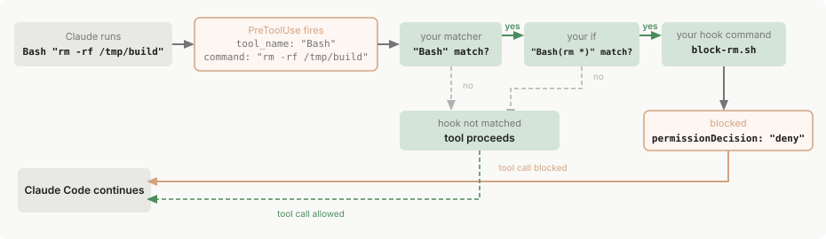

Hooks 参考
Claude Code hook 事件、配置架构、JSON 输入/输出格式、退出代码、异步 hooks、HTTP hooks、提示 hooks 和 MCP 工具 hooks 的参考。
有关包含示例的快速入门指南，请参阅使用 hooks 自动化工作流。
Hooks 是用户定义的 shell 命令、HTTP 端点、MCP 工具调用、LLM 提示或子代理，在 Claude Code 生命周期中的特定点自动执行。Claude Code 在其运行的任何地方都会触发相同的 hook 事件：终端中的会话、IDE 扩展、桌面应用和云会话。使用此参考查找事件架构、配置选项、JSON 输入/输出格式以及异步 hooks、HTTP hooks 和 MCP 工具 hooks 等高级功能。
插件也可以将 hooks 注册为 JavaScript 函数，Claude Code 在其自己的进程中调用这些函数，这些函数既可以在界面中绘制，也可以对事件进行操作。执行此操作的插件是mod，这些函数 hooks 在对事件做出反应中介绍，而不是在这里。此页面上的 hooks 继续与 mods 一起工作。
Hook 生命周期
Claude Code 在会话期间的特定点运行 hooks。当事件触发且匹配器匹配时，Claude Code 会将关于该事件的 JSON 上下文传递给您的 hook 处理程序。对于命令 hooks，输入通过 stdin 到达。对于 HTTP hooks，它作为 POST 请求体到达。您的处理程序随后可以检查输入、采取行动并可选地返回决定。
事件分为三种频率：
- 每个会话一次：
SessionStart和SessionEnd - 每轮一次：
UserPromptSubmit、Stop和StopFailure - 代理循环内的每个工具调用：
PreToolUse和PostToolUse，除了EndConversation调用，它们跳过两者
![Hook 生命周期图，显示可选的 Setup 流入 SessionStart，然后是每轮循环，包含 UserPromptSubmit、用于 slash commands 的 UserPromptExpansion、嵌套的代理循环（PreToolUse、PermissionRequest、PostToolUse、PostToolUseFailure、PostToolBatch、SubagentStart/Stop、TaskCreated、TaskCompleted）和 Stop 或 StopFailure，然后是 TeammateIdle、PreCompact、PostCompact 和 SessionEnd，Elicitation 和 ElicitationResult 嵌套在 MCP 工具执行内，PermissionDenied 作为 PermissionRequest 的副分支用于自动模式拒绝，WorktreeCreate、WorktreeRemove、Notification、ConfigChange、InstructionsLoaded、CwdChanged、FileChanged 和 DirectoryAdded 作为独立异步事件，PreModelSwitch 作为独立顺序事件，在请求的模型切换之前运行，PostModelSwitch 作为独立异步事件，在会话的模型更改后运行，MessageDisplay 作为仅显示事件，在助手消息文本流式传输时运行](../assets/img/4658a5c32b8f.svg)
下表总结了每个事件何时触发。Hook 事件部分记录了每个事件的完整输入架构和决定控制选项。
| 事件 | 触发时机 |
|---|---|
SessionStart |
当会话开始或恢复时 |
Setup |
当你使用 --init-only 启动 Claude Code，或在 -p 模式下使用 --init 或 --maintenance 时。用于 CI 或脚本中的一次性准备 |
UserPromptSubmit |
当提交提示词时，在 Claude 处理之前。对于 Claude Code 自行发起的轮次也会触发 |
UserPromptExpansion |
当用户输入的命令扩展为提示词时，在到达 Claude 之前。可以阻止扩展 |
PreToolUse |
在工具调用执行之前。可以阻止它 |
PermissionRequest |
当工具调用需要权限决策时 |
PermissionDenied |
当自动模式拒绝工具调用时，包括没有分类器判决的拒绝。使用 JSON hookSpecificOutput.retry: true 来告诉模型它可以重试被拒绝的工具调用。Claude Code 在分类器未产生判决时忽略 retry |
PostToolUse |
在工具调用成功后 |
PostToolUseFailure |
在工具调用失败后 |
PostToolBatch |
在一整批并行工具调用解决后，在下一次模型调用之前 |
Notification |
当 Claude Code 发送通知时 |
MessageDisplay |
当助手消息文本正在显示时 |
SubagentStart |
当子代理被生成时 |
SubagentStop |
当子代理完成时 |
TaskCreated |
当通过 TaskCreate 创建任务时 |
TaskCompleted |
当任务被标记为已完成时 |
Stop |
当 Claude 完成响应时 |
StopFailure |
当轮次因 API 错误而结束时 |
TeammateIdle |
当代理团队队友即将空闲时 |
InstructionsLoaded |
当 CLAUDE.md 或 .claude/rules/*.md 文件被加载到上下文中时。在会话开始时和文件在会话期间被延迟加载时触发 |
ConfigChange |
当配置文件在会话期间更改时 |
CwdChanged |
当工作目录更改时，例如当 Claude 执行 cd 命令时。对于使用 direnv 等工具的反应式环境管理很有用 |
DirectoryAdded |
当工作目录在会话中期通过 /add-dir 或 SDK register_repo_root 控制请求添加时 |
FileChanged |
当监视的文件在磁盘上更改时。matcher 字段指定要监视的文件名 |
WorktreeCreate |
当通过 --worktree、isolation: "worktree" 创建工作树时，或用于后台会话。替换默认的 git 行为 |
WorktreeRemove |
当由 WorktreeCreate hook 创建的 worktree 正在被移除时 |
PreCompact |
在上下文压缩之前 |
PostCompact |
在上下文压缩完成后 |
PreModelSwitch |
在 Claude Code 应用你或客户端请求的模型切换之前。可以阻止切换 |
PostModelSwitch |
在会话的模型更改后，包括 Claude Code 自己进行的更改，例如在你恢复会话时恢复模型 |
Elicitation |
当 MCP 服务器在工具调用期间请求用户输入时 |
ElicitationResult |
在用户响应 MCP 引出后，在响应发送回服务器之前 |
SessionEnd |
当会话终止时 |
Hook 如何解析
要了解事件、匹配器和处理程序如何组合在一起，请考虑这个 PreToolUse hook，它阻止破坏性 shell 命令。
[tab] macOS/Linux
matcher缩小到 Bash 工具调用，if条件进一步缩小到匹配rm *的 Bash 子命令，因此block-rm.sh仅在两个过滤器都匹配时生成：
json theme={null} { "hooks": { "PreToolUse": [ { "matcher": "Bash", "hooks": [ { "type": "command", "if": "Bash(rm *)", "command": "${CLAUDE_PROJECT_DIR}/.claude/hooks/block-rm.sh", "args": [] } ] } ] } }该脚本从 stdin 读取 JSON 输入，提取命令，如果包含
rm -rf，则返回permissionDecision为"deny"。将其保存到项目中的.claude/hooks/block-rm.sh，并使用chmod +x .claude/hooks/block-rm.sh使其可执行，以便 Claude Code 可以运行它：```bash theme={null}
!/bin/bash
.claude/hooks/block-rm.sh
COMMAND=$(jq -r '.tool_input.command')
if echo "$COMMAND" | grep -q 'rm -rf'; then
jq -n '{
hookSpecificOutput: {
hookEventName: "PreToolUse",
permissionDecision: "deny",
permissionDecisionReason: "Destructive command blocked by hook"
}
}'
else
exit 0 # no decision; normal permission flow applies
fi
```此脚本与本页面上解析 JSON 输入的其他 Bash 示例一样，使用
jq，因此在尝试它们之前，请安装jq并确保它在您的PATH上。[tab] Windows (PowerShell)
匹配器
Bash|PowerShell涵盖 PowerShell 工具以及 Bash。单个if规则仅匹配一个工具的调用，因此每个工具都有自己的处理程序：第一个缩小到匹配rm *的 Bash 子命令，第二个缩小到匹配Remove-Item *的 PowerShell 命令。两者都通过powershell.exe运行相同的脚本：
json theme={null} { "hooks": { "PreToolUse": [ { "matcher": "Bash|PowerShell", "hooks": [ { "type": "command", "if": "Bash(rm *)", "command": "powershell.exe", "args": [ "-NoProfile", "-ExecutionPolicy", "Bypass", "-File", "${CLAUDE_PROJECT_DIR}/.claude/hooks/block-rm.ps1" ] }, { "type": "command", "if": "PowerShell(Remove-Item *)", "command": "powershell.exe", "args": [ "-NoProfile", "-ExecutionPolicy", "Bypass", "-File", "${CLAUDE_PROJECT_DIR}/.claude/hooks/block-rm.ps1" ] } ] } ] } }
-NoProfile标志跳过加载您的 PowerShell 配置文件，以便 hook 快速启动，-ExecutionPolicy Bypass让 PowerShell 运行本地脚本文件。该脚本从 stdin 读取 JSON 输入，提取命令，如果包含
rm -rf或Remove-Item后跟-Recurse，则返回permissionDecision为"deny"。将其保存到项目中的.claude/hooks/block-rm.ps1：```powershell theme={null}
.claude/hooks/block-rm.ps1
$callInput = Console::In.ReadToEnd() | ConvertFrom-Json
$command = $callInput.tool_input.commandif ($command -match 'rm -rf|Remove-Item.*-Recurse') {
@{
hookSpecificOutput = @{
hookEventName = "PreToolUse"
permissionDecision = "deny"
permissionDecisionReason = "Destructive command blocked by hook"
}
} | ConvertTo-Json
} else {
exit 0 # no decision; normal permission flow applies
}
```
现在假设 Claude Code 决定针对 macOS/Linux 配置运行 Bash "rm -rf /tmp/build"。以下是发生的情况：

1. 事件触发
PreToolUse 事件触发。Claude Code 将工具输入作为 JSON 通过 stdin 发送到 hook：
{ "tool_name": "Bash", "tool_input": { "command": "rm -rf /tmp/build" }, ... }
2. 匹配器检查
匹配器 "Bash" 与工具名称匹配，因此此 hook 组激活。如果您省略匹配器或使用 "*"，该组在事件的每次出现时激活。
3. If 条件检查
if 条件 "Bash(rm *)" 匹配，因为 rm -rf /tmp/build 是匹配 rm * 的子命令，因此此处理程序生成。如果命令是 npm test，if 检查会失败，block-rm.sh 永远不会运行，避免进程生成开销。if 字段是可选的；没有它，匹配组中的每个处理程序都运行。
4. Hook 处理程序运行
脚本检查完整命令并找到 rm -rf，因此它将决定打印到 stdout：
{
"hookSpecificOutput": {
"hookEventName": "PreToolUse",
"permissionDecision": "deny",
"permissionDecisionReason": "Destructive command blocked by hook"
}
}
如果命令是更安全的 rm 变体，如 rm file.txt，脚本会改为执行 exit 0。退出代码 0 且无输出意味着 hook 没有决定要报告，因此工具调用继续通过正常的权限流程。hook 可以拒绝调用，但保持沉默不会批准它。
5. Claude Code 对结果采取行动
Claude Code 读取 JSON 决定，阻止工具调用，并向 Claude 显示原因。
下面的配置部分记录了完整的架构，每个hook 事件部分记录了您的命令接收的输入以及它可以返回的输出。
配置
Hooks 在 JSON 设置文件中定义。配置有三个嵌套级别：
有关完整的演练和带注释的示例，请参阅上面的 Hook 如何解析。
本页对每个级别使用特定术语：hook 事件表示生命周期点，匹配器组表示过滤器，hook 处理程序表示运行的 shell 命令、HTTP 端点、MCP 工具、提示或代理。"Hook"本身指的是一般功能。
Hook 位置
定义 hook 的位置决定了其范围：
| 位置 | 范围 | 可共享 |
|---|---|---|
~/.claude/settings.json |
所有项目 | 否，仅限本地计算机 |
.claude/settings.json |
单个项目 | 是，可以提交到仓库 |
.claude/settings.local.json |
单个项目 | 否，当 Claude Code 保存设置时被 gitignored |
| 托管策略设置 | 组织范围 | 是，由管理员控制 |
Plugin hooks/hooks.json |
启用插件时 | 是，与插件捆绑 |
| Skill frontmatter | 调用技能后的会话其余部分。请参阅 Skills 和代理中的 Hooks | 是，在技能文件中定义 |
| Subagent frontmatter | 该子代理运行时 | 是，在子代理文件中定义 |
云会话 不读取本地 ~/.claude/settings.json。在 自托管环境 中，Claude Code 还运行操作员从运行程序主机的 ~/.claude/ 中植入的 hooks，并在该文件属于 Claude Code 应用的托管源 时运行运行程序镜像的托管设置文件中的 hooks，默认情况下仅当服务器托管设置和 MDM 交付的 Claude Code 策略都不提供托管层时才运行。有关哪些设置文件和插件（以及哪些 hooks）到达云会话，请参阅 从设置中继承的内容。
有关设置文件解析的详细信息，请参阅 settings。
来自设置文件、托管策略设置和插件的 Hooks 也在 subagents 内运行。当子代理调用工具时，工具事件（如 PreToolUse 和 PostToolUse）会触发与主对话中配置的相同 hooks，输入包含标识子代理的 agent_id 和 agent_type 通用输入字段。
管理员可以在 托管设置 中使用 allowManagedHooksOnly 来限制哪些 hooks 运行：
- 您的用户、项目、本地和插件 hooks 被阻止。在托管设置
enabledPlugins中强制启用的插件中的 Hooks 除外 - Claude Code 还将您的
statusLine、fileSuggestion和subagentStatusLine设置缩小到托管设置 - Claude Code 还禁用具有
command源 的插件，包括在托管设置enabledPlugins中强制启用的插件，除非disableCommandPluginSources明确设置为false。command源需要 Claude Code v2.1.229 或更高版本 - Claude Code 还阻止市场
headersHelper命令，除非disableCommandPluginSources明确设置为false，但托管设置本身声明的市场除外
请参阅 在 allowManagedHooksOnly 下运行的内容。
Hook 条目在设置级别之间合并而不是相互替换：用户、项目和本地设置添加自己的 hooks 而不删除托管的 hooks，disableAllHooks 设置无法禁用来自托管设置外部的托管 hooks。
HTTP hook 允许列表 适用于来自所有源的 hooks，包括托管策略设置：
allowedHttpHookUrls：在任何设置级别定义时，Claude Code 仅在其 URL 与合并的允许列表匹配时运行 HTTP hook 处理程序httpHookAllowedEnvVars：定义时，Claude Code 仅将该列表上的环境变量插值到 hook 标头中
匹配器模式
matcher 字段过滤何时触发 hooks。匹配器的评估方式取决于它包含的字符：
| 匹配器值 | 评估为 | 示例 |
|---|---|---|
"*"、"" 或省略 |
匹配所有 | 在事件的每次出现时触发 |
仅字母、数字、_、-、空格、, 和 \| |
精确字符串或由 \| 或 , 分隔的精确字符串列表，可选周围空格 |
Bash 仅匹配 Bash 工具；Edit\|Write 和 Edit, Write 各自精确匹配任一工具；code-reviewer 仅匹配该代理类型 |
| 包含任何其他字符 | JavaScript 正则表达式，未锚定 | ^Notebook 匹配任何名称以 Notebook 开头的工具；mcp__memory__.* 匹配来自 memory 服务器的每个工具 |
正则表达式路径上的匹配器使用 JavaScript 的 RegExp.prototype.test 进行测试，该测试在值中任何位置的匹配时成功。Edit.* 同时匹配 Edit 和 NotebookEdit；当需要整个字符串匹配时，用 ^ 和 $ 包装模式，如 ^Edit$。
FileChanged 和 StopFailure 仅使用更窄的精确匹配字母、数字、_ 和 | 集合。匹配器中的连字符、空格或逗号对这两个事件保持在正则表达式路径上，仅 | 分隔替代项。下表中支持匹配器的其他每个事件都接受 | 或 ,。
FileChanged 事件在构建其监视列表时不遵循这些规则。请参阅 FileChanged。
每个事件类型在不同的字段上匹配：
| 事件 | 匹配器过滤的内容 | 示例匹配器值 |
|---|---|---|
PreToolUse、PostToolUse、PostToolUseFailure、PermissionRequest、PermissionDenied |
工具名称 | Bash、Edit\|Write、mcp__.* |
SessionStart |
会话如何启动 | startup、resume、clear、compact、fork |
Setup |
哪个 CLI 标志触发了设置 | init、maintenance |
SessionEnd |
会话为何结束 | clear、resume、logout、prompt_input_exit、other |
Notification |
通知类型 | permission_prompt、idle_prompt、auth_success、elicitation_dialog、elicitation_url_dialog、elicitation_complete、elicitation_response、agent_needs_input、agent_completed、quota_auto_resume_fired、quota_auto_resume_stale、quota_auto_resume_disabled、plugin_notification |
SubagentStart |
代理类型 | general-purpose、Explore、Plan、自定义代理名称或插件范围的名称如 ^my-plugin:reviewer$ |
PreCompact、PostCompact |
什么触发了压缩 | manual、auto |
PreModelSwitch、PostModelSwitch |
会话切换到的模型的规范名称，如 PreModelSwitch 下所述 | claude-opus-5、claude-opus-4-6\|claude-opus-5、.*opus.* |
SubagentStop |
代理类型 | 与 SubagentStart 相同的值 |
ConfigChange |
配置源 | user_settings、project_settings、local_settings、policy_settings、skills |
CwdChanged |
无匹配器支持 | 总是在每次出现时触发 |
DirectoryAdded |
目录如何添加 | slash_command、register_repo_root |
FileChanged |
要监视的文字文件名（请参阅 FileChanged） | .envrc\|.env |
StopFailure |
错误类型 | rate_limit、overloaded、authentication_failed、oauth_org_not_allowed、account_on_hold、billing_error、invalid_request、model_not_found、server_error、max_output_tokens、cloud_credential_error、unknown |
InstructionsLoaded |
加载原因 | session_start、nested_traversal、path_glob_match、include、compact |
UserPromptExpansion |
命令名称 | 您的技能或命令名称 |
Elicitation |
MCP 服务器名称 | 您配置的 MCP 服务器名称 |
ElicitationResult |
MCP 服务器名称 | 与 Elicitation 相同的值 |
UserPromptSubmit、PostToolBatch、Stop、TeammateIdle、TaskCreated、TaskCompleted、WorktreeCreate、WorktreeRemove、MessageDisplay |
无匹配器支持 | 总是在每次出现时触发 |
在 cloud_credential_error 上匹配 StopFailure 需要 Claude Code v2.1.267 或更高版本，这是第一个在该值下报告凭证加载失败而不是 server_error 或 unknown 的版本。
对于大多数事件，Claude Code 根据它在 stdin 上发送给 hook 的 JSON 输入 中的字段评估匹配器。对于工具事件，该字段是 tool_name。对于 PreModelSwitch 和 PostModelSwitch，Claude Code 根据它从 to_model 派生的规范名称评估匹配器，如 PreModelSwitch 下所述。每个 hook 事件 部分列出了完整的匹配器值集和该事件的输入架构。
此示例仅在 Claude 写入或编辑文件时运行 linting 脚本：
{
"hooks": {
"PostToolUse": [
{
"matcher": "Edit|Write",
"hooks": [
{
"type": "command",
"command": "/path/to/lint-check.sh"
}
]
}
]
}
}
如果向不支持匹配器的事件添加 matcher 字段，它会被静默忽略。
对于工具事件，您可以通过在单个 hook 处理程序上设置 if 字段 来更狭隘地过滤。if 使用 权限规则语法 来匹配工具名称和参数，所以 "Bash(git *)" 在任何 Bash 输入的子命令匹配 git * 时运行，"Edit(*.ts)" 仅对 TypeScript 文件运行。
匹配 MCP 工具
MCP 服务器工具在工具事件中显示为常规工具（PreToolUse、PostToolUse、PostToolUseFailure、PermissionRequest、PermissionDenied），因此您可以像匹配任何其他工具名称一样匹配它们。
MCP 工具遵循命名模式 mcp__<server>__<tool>，例如：
mcp__memory__create_entities：Memory 服务器的创建实体工具mcp__filesystem__read_file：Filesystem 服务器的读取文件工具mcp__github__search_repositories：GitHub 服务器的搜索工具
要匹配来自服务器的每个工具，请在服务器前缀后附加 .*。.* 是必需的：像 mcp__memory 或 mcp__brave-search 这样的匹配器仅包含精确匹配字符，因此它被比较为精确字符串，不匹配任何工具。
mcp__memory__.*匹配来自memory服务器的所有工具mcp__brave-search__.*匹配来自名称包含连字符的服务器的所有工具mcp__.*__write.*匹配来自任何服务器的名称以write开头的任何工具
来自 插件捆绑的 MCP 服务器 的工具使用包含插件名称的范围服务器段：mcp__plugin_<plugin-name>_<server-name>__<tool>。针对裸服务器密钥编写的匹配器永远不会对这些工具触发。对于名为 my-plugin 的插件，在密钥 db 下捆绑服务器，query 工具显示为 mcp__plugin_my-plugin_db__query，因此来自该服务器的每个工具的匹配器是 mcp__plugin_my-plugin_db__.*。在处理程序的 if 字段 中使用相同的范围工具名称。请参阅 插件提供的 MCP 服务器 了解范围名称如何构建。
此示例记录所有内存服务器操作并验证来自任何 MCP 服务器的写入操作：
{
"hooks": {
"PreToolUse": [
{
"matcher": "mcp__memory__.*",
"hooks": [
{
"type": "command",
"command": "echo 'Memory operation initiated' >> ~/mcp-operations.log"
}
]
},
{
"matcher": "mcp__.*__write.*",
"hooks": [
{
"type": "command",
"command": "/home/user/scripts/validate-mcp-write.py"
}
]
}
]
}
}
Hook 处理程序字段
内部 hooks 数组中的每个对象都是一个 hook 处理程序：当匹配器匹配时运行的 shell 命令、HTTP 端点、MCP 工具、LLM 提示或代理。有五种类型：
- 命令 hooks（
type: "command"）：运行 shell 命令。您的脚本在 stdin 上接收事件的 JSON 输入，并通过退出代码和 stdout 传回结果。 - HTTP hooks（
type: "http"）：将事件的 JSON 输入作为 HTTP POST 请求发送到 URL。端点通过响应体使用与命令 hooks 相同的 JSON 输出格式 传回结果。 - MCP 工具 hooks（
type: "mcp_tool"）：在配置的 MCP 服务器 上调用工具。工具的文本输出被视为命令 hook stdout。 - 提示 hooks（
type: "prompt"）：向 Claude 模型发送提示以进行单轮评估。模型以 JSON 形式返回其决定。请参阅 基于提示的 hooks。 - 代理 hooks（
type: "agent"）：生成一个子代理，可以使用 Read、Grep 和 Glob 等工具来验证条件，然后返回决定。代理 hooks 是实验性的，可能会改变。请参阅 基于代理的 hooks。
当事件触发时，其匹配的 hook 并行运行。如果其中超过 12 个是提示词或 Agent hook，则其中 12 个同时运行，其余的在正在运行的 hook 完成后开始。每个等待中的 hook 的 timeout 从该 hook 开始运行时开始计时。
如果在多个设置文件中定义相同的处理程序，它运行一次。插件或 skill 的相同处理程序副本保持分离。
处理程序在当前目录中使用 Claude Code 的环境运行。如果当前目录不再存在，例如另一个 shell 在会话中途删除的 worktree 或临时目录，Claude Code 从以下第一个仍然存在的目录运行命令 hook：会话启动的目录、项目根目录、您的主目录或系统临时目录。Claude Code 在 调试日志 中记录一个警告，命名回退目录。对于从桌面应用启动的 worktree 会话，请参阅 worktree 与主检出共享的内容。
$CLAUDE_CODE_REMOTE 环境变量在远程 web 环境中为 "true"，在本地 CLI 中未设置。Claude Code v2.1.199 及更高版本在本地会话有活跃的远程控制连接时将 $CLAUDE_CODE_BRIDGE_SESSION_ID 设置为 远程控制 会话 ID。
通用字段
这些字段适用于所有 hook 类型：
| 字段 | 必需 | 描述 |
|---|---|---|
type |
是 | "command"、"http"、"mcp_tool"、"prompt" 或 "agent" |
if |
否 | 用于过滤此 hook 何时运行的 权限规则语法，如 "Bash(git *)" 或 "Edit(*.ts)"。hook 命令仅在工具调用匹配模式时运行。请参阅 Bash 匹配表 了解 Bash 模式如何针对子命令、$() 和反引号进行评估。仅在工具事件上评估：PreToolUse、PostToolUse、PostToolUseFailure、PermissionRequest 和 PermissionDenied。在其他事件上，设置了 if 的 hook 永远不会运行 |
timeout |
否 | 取消前的秒数。Claude Code 不在您使用 async: true 运行的命令 hook 上强制执行。默认值：command、http 和 mcp_tool 为 600；prompt 为 30；agent 为 60。Claude Code 在 UserPromptSubmit、PreModelSwitch 和 PostModelSwitch 上将 command、http 和 mcp_tool 默认值降低到 30，在 MessageDisplay 上降低到 10。SessionEnd hooks 共享 1.5 秒的预算；如果您的设置设置了更长的每个 hook timeout，Claude Code 会提高预算以匹配，最多 60 秒 |
statusMessage |
否 | hook 运行时显示的自定义微调消息 |
once |
否 | 如果为 true，Claude Code 在第一次成功运行后删除 hook。失败、以退出代码 2 阻止或超时的运行会将 hook 保留在原位，因此它在下一个匹配事件上再次运行。仅在 技能 frontmatter 中声明的 hooks 上受尊重；在设置文件和代理 frontmatter 中被忽略 |
if 字段恰好包含一个权限规则。没有 &&、|| 或列表语法来组合规则；要应用多个条件，为每个定义一个单独的 hook 处理程序。
在文件工具的 if 条件中，单段目录模式如 "Edit(src/**)" 仅匹配工作目录中的 src 目录及其下的文件。要匹配任何深度的名为 src 的目录，请写 "Edit(**/src/**)"。
if 模式如何匹配 Bash 命令
对于 if 字段 中的 Bash 模式，您的 hook 命令是否运行取决于模式的形状和 Claude 调用的 Bash 命令。匹配前会剥离前导 VAR=value 赋值。
if 模式 |
Bash 命令 | Hook 运行？ | 为什么 |
|---|---|---|---|
Bash(git *) |
FOO=bar git push |
是 | 前导赋值被剥离；git push 匹配 |
Bash(git *) |
npm test && git push |
是 | 每个子命令都被检查；git push 匹配 |
Bash(rm *) |
echo $(rm -rf /) |
是 | $() 和反引号内的命令被检查；rm -rf / 匹配 |
Bash(rm *) |
echo $(date) |
否 | 没有子命令匹配 rm * |
Bash(git push *) |
echo $(date) |
是 | 指定超过命令名称的模式在 $()、反引号或 $VAR 上无论如何都运行 hook |
当 Claude Code 无法确定 Bash 输入运行哪些命令时，它无论如何都会运行您的 hook，无论模式如何。因为 if 过滤是尽力而为的，使用 权限系统 而不是 hook 来强制执行硬允许或拒绝。
命令 hook 字段
除了 通用字段 外，命令 hooks 接受这些字段：
| 字段 | 必需 | 描述 |
|---|---|---|
command |
是 | 要执行的 shell 命令。使用 args 时，直接生成的可执行文件。请参阅 Exec 形式和 shell 形式 |
args |
否 | 参数列表。存在时，command 被解析为可执行文件并直接使用 args 作为参数向量生成，不涉及 shell。请参阅 Exec 形式和 shell 形式 |
async |
否 | 如果为 true，在后台运行而不阻止。请参阅 在后台运行 hooks |
asyncRewake |
否 | 如果为 true，在后台运行并在退出代码 2 时唤醒 Claude。hook 的 stderr 或 stdout（如果 stderr 为空）显示给 Claude 作为 系统提醒，以便它可以对长时间运行的后台失败做出反应 |
shell |
否 | 用于此 hook 的 shell。接受 "bash" 或 "powershell"。默认为 "bash"，或在未安装 Git Bash 时在 Windows 上默认为 "powershell"。设置 "powershell" 在 Windows 上通过 PowerShell 运行命令。不需要 CLAUDE_CODE_USE_POWERSHELL_TOOL，因为 hooks 直接生成 PowerShell。设置 args 时被忽略 |
onFailure |
否 | hook 失败时触发该 hook 的操作是否继续进行："continue" 或 "block"。有关 "block" 以及不设置该字段时的行为，请参阅 在 hook 失败时阻止操作。需要 Claude Code v2.1.295 或更高版本 |
Exec 形式和 shell 形式
当设置 args 时，命令 hook 以 exec 形式运行，当省略 args 时以 shell 形式运行。每当 hook 引用 路径占位符 时设置 args，因为每个元素作为一个参数传递，不带引号。当您需要 shell 功能如管道或 && 时省略 args，或当两个问题都不适用时。
Exec 形式在存在 args 时运行。Claude Code 在 PATH 上解析 command 作为可执行文件，并直接使用 args 作为参数向量生成它。没有 shell，所以每个 args 元素恰好是一个参数，完全按照编写的方式，路径占位符如 ${CLAUDE_PLUGIN_ROOT} 被替换为 command 和每个 args 元素作为纯字符串。特殊字符如撇号、$ 和反引号逐字传递，因为没有 shell 来解释它们。在任何平台上都不会发生 shell 标记化。
Shell 形式在省略 args 时运行。command 字符串被传递给 shell：macOS 和 Linux 上的 sh -c、Windows 上的 Git Bash，或未安装 Git Bash 时的 PowerShell。设置 shell 字段来明确选择。shell 标记化字符串、扩展变量并解释管道、&&、重定向和 globs。
在 Windows 上，exec 形式需要 command 解析为真实可执行文件如 .exe。npm、npx、eslint 和其他工具在 node_modules/.bin 中安装的 .cmd 和 .bat 垫片不是可执行文件，不能在没有 shell 的情况下生成。要在 exec 形式中运行它们，直接使用 node 调用底层脚本，例如 "command": "node", "args": ["${CLAUDE_PLUGIN_ROOT}/node_modules/eslint/bin/eslint.js"]。node 加脚本路径模式在每个平台上都有效，因为 node.exe 是真实二进制文件。要按名称运行 .cmd 或 .bat 垫片，使用 shell 形式。
此示例运行与插件捆绑的 Node 脚本。Exec 形式将解析的脚本路径作为一个参数传递，不带引号：
{
"type": "command",
"command": "node",
"args": ["${CLAUDE_PLUGIN_ROOT}/scripts/format.js", "--fix"]
}
等效的 shell 形式需要引号来处理带空格或特殊字符的路径：
{
"type": "command",
"command": "node \"${CLAUDE_PLUGIN_ROOT}\"/scripts/format.js --fix"
}
两种形式都支持相同的 路径占位符，并且两者都将它们导出为生成的进程上的环境变量 CLAUDE_PROJECT_DIR、CLAUDE_PLUGIN_ROOT 和 CLAUDE_PLUGIN_DATA，所以脚本可以读取 process.env.CLAUDE_PLUGIN_ROOT，无论它如何启动。
插件 hooks 另外替换 ${user_config.*} 值，仅在 exec 形式中：值被替换为 command 和每个 args 元素作为纯字符串，所以没有 shell 重新解析它。
其 command 引用 ${user_config.*} 的 shell 形式插件 hook 失败并出现 错误 而不是运行。要从 shell 形式 hook 使用选项值，读取 $CLAUDE_PLUGIN_OPTION_<KEY> 环境变量，如 webhook_url 选项的 $CLAUDE_PLUGIN_OPTION_WEBHOOK_URL，或设置 args 来将 hook 切换到 exec 形式。在 v2.1.207 之前，shell 形式插件 hook 命令也替换 ${user_config.*}。
在 exec 形式中，command 仅是可执行文件名或路径。如果 command 是没有路径分隔符的裸名称，并且与 args 一起包含空格，Claude Code 记录一个警告，因为生成将失败：没有名为 node script.js 的可执行文件。将额外的标记移到 args 中。带空格的绝对路径，如 C:\Program Files\nodejs\node.exe，是单个有效的可执行文件，不会触发警告。
HTTP hook 字段
除了 通用字段 外，HTTP hooks 接受这些字段：
| 字段 | 必需 | 描述 |
|---|---|---|
url |
是 | 发送 POST 请求的 URL |
headers |
否 | 其他 HTTP 标头作为键值对。值支持使用 $VAR_NAME 或 ${VAR_NAME} 语法的环境变量插值。仅解析 allowedEnvVars 中列出的变量 |
allowedEnvVars |
否 | 可能被插值到标头值中的环境变量名称列表。对未列出变量的引用被替换为空字符串。任何环境变量插值都需要 |
onFailure |
否 | hook 失败时对该操作的处理方式："continue"（默认值）或 "block"。请参阅 在 hook 失败时阻止操作。需要 Claude Code v2.1.295 或更高版本 |
Claude Code 将 hook 的 JSON 输入 作为 POST 请求体发送，Content-Type: application/json。响应体使用与命令 hooks 相同的 JSON 输出格式。
错误处理与命令 hooks 不同；请参阅 HTTP 响应处理。
此示例将 PreToolUse 事件发送到本地验证服务，使用来自 MY_TOKEN 环境变量的令牌进行身份验证：
{
"hooks": {
"PreToolUse": [
{
"matcher": "Bash",
"hooks": [
{
"type": "http",
"url": "http://localhost:8080/hooks/pre-tool-use",
"timeout": 30,
"headers": {
"Authorization": "Bearer $MY_TOKEN"
},
"allowedEnvVars": ["MY_TOKEN"]
}
]
}
]
}
}
MCP 工具 hook 字段
除了 通用字段 外，MCP 工具 hooks 接受这些字段：
| 字段 | 必需 | 描述 |
|---|---|---|
server |
是 | 配置的 MCP 服务器的名称。对于 插件捆绑的服务器，这是范围名称 plugin:<plugin-name>:<server-name>，如 plugin:my-plugin:db，不是裸服务器密钥 |
tool |
是 | 该服务器上要调用的工具的名称 |
input |
否 | 传递给工具的参数。字符串值支持来自 hook 的 JSON 输入 的 ${path} 替换，如 "${tool_input.file_path}" |
此示例在每个 Write 或 Edit 后在 my_server MCP 服务器上调用 security_scan 工具，传递编辑文件的路径：
{
"hooks": {
"PostToolUse": [
{
"matcher": "Write|Edit",
"hooks": [
{
"type": "mcp_tool",
"server": "my_server",
"tool": "security_scan",
"input": { "file_path": "${tool_input.file_path}" }
}
]
}
]
}
}
工具结果如何被读取
Claude Code 读取工具的文本内容的方式与读取命令 hook stdout 的方式相同，遵循 退出代码 0 下的解析规则。如果工具返回 isError: true，hook 产生非阻止错误，执行继续。
当服务器仍在连接时
在 hook 可以阻止或改变结果的事件上，如 PreToolUse 或 Stop，Claude Code 在调用工具前等待连接的服务器，最多 MCP_TIMEOUT，在 hook 自己的 timeout 内。在观察事件上，如 Notification 或 SessionEnd，它不等待。
显示 cached 状态 的服务器在 hook 调用其工具时连接。如果服务器在该点未连接，hook 产生非阻止错误，执行继续。hook 永远不会启动 OAuth 流，所以 从 /mcp 验证服务器。
在 MCP 服务器可用之前触发的事件
启动时的 SessionStart，包括使用 --continue 或 --resume，以及每个 Setup 事件在会话的 MCP 服务器对 hooks 可用之前触发。Claude Code 跳过其 mcp_tool hooks 而不调用工具，调试日志 记录 mcp_tool hooks are not available for the 'SessionStart' hook event (no MCP client context)，或相同的消息命名 Setup。当 SessionStart 稍后在会话中再次触发时，在 /clear 或压缩后，其 mcp_tool hooks 运行。对于会话在启动时需要的任何内容，改为在 SessionStart 上使用 type: "command" hook。
提示和代理 hook 字段
除了 通用字段 外，提示和代理 hooks 接受这些字段：
| 字段 | 必需 | 描述 |
|---|---|---|
prompt |
是 | 发送给模型的提示文本。使用 $ARGUMENTS 作为 hook 输入 JSON 的占位符。用反斜杠转义以包含文字文本：\$1.00 呈现为 $1.00 |
model |
否 | 用于评估的模型。默认为 Claude Code 用于 后台功能 的模型 |
按路径引用脚本
使用这些占位符来引用相对于项目或插件根目录的 hook 脚本，无论 hook 运行时的工作目录如何：
${CLAUDE_PROJECT_DIR}：会话启动的项目根目录。Claude Code 还在 stdio MCP 服务器 和插件 LSP 服务器的环境中设置此变量。${CLAUDE_PLUGIN_ROOT}：插件的安装目录，用于与 插件 捆绑的脚本。请参阅 插件环境变量 了解路径在更新中的行为。${CLAUDE_PLUGIN_DATA}：插件的 持久数据目录，用于应该在插件更新中存活的依赖项和状态。
Worktrees 是不同的。 如果 Claude 在会话期间进入 worktree，Claude Code 保持 ${CLAUDE_PROJECT_DIR} 在原位，并以不同的方式将 worktree 路径传递给您的 hooks：
${CLAUDE_PROJECT_DIR}保持不变：它仍然指向会话启动的项目根目录，所以像${CLAUDE_PROJECT_DIR}/.claude/hooks/check-style.sh这样的命令仍然在主检出中运行脚本。cwd跟随 Claude：hook 的 输入 JSON 中的cwd字段在 Claude 进入 worktree 后是 worktree 根目录，在 Claude 运行cd后是新目录。当 hook 需要知道 Claude 正在哪个目录中工作时读取它。
对于从桌面应用启动的 worktree 会话，请参阅 worktree 与主检出共享的内容 了解 ${CLAUDE_PROJECT_DIR} 指向何处。
对于任何引用路径占位符的 hook，优先使用 exec 形式。在 shell 形式中，用双引号包装每个占位符。
[tab] 项目脚本
此示例使用
${CLAUDE_PROJECT_DIR}在任何Write或Edit工具调用后从项目的.claude/hooks/目录运行样式检查器：
json theme={null} { "hooks": { "PostToolUse": [ { "matcher": "Write|Edit", "hooks": [ { "type": "command", "command": "${CLAUDE_PROJECT_DIR}/.claude/hooks/check-style.sh", "args": [] } ] } ] } }[tab] 插件脚本
在
hooks/hooks.json中定义插件 hooks，带有可选的顶级description字段。启用插件时，其 hooks 与您的用户和项目 hooks 合并。此示例运行与插件捆绑的格式化脚本：
json theme={null} { "description": "Automatic code formatting", "hooks": { "PostToolUse": [ { "matcher": "Write|Edit", "hooks": [ { "type": "command", "command": "${CLAUDE_PLUGIN_ROOT}/scripts/format.sh", "args": [], "timeout": 30 } ] } ] } }有关创建插件 hooks 的详细信息，请参阅 插件组件参考。
Skills 和代理中的 Hooks
除了设置文件和插件外，hooks 可以直接在 skills 和 subagents 中使用 frontmatter 定义，采用与基于设置的 hooks 相同的配置格式。Claude Code 保持它们注册多长时间取决于组件：
- Subagent hooks：Claude Code 仅在该子代理运行时运行它们，并在其完成时删除它们。Claude Code 在此处将
Stophook 转换为SubagentStop，这是它在子代理完成时触发的事件。 - Skill hooks：Claude Code 在您或 Claude 调用技能时注册它们，并为会话的其余部分保持运行它们，在技能自己的回合之后的回合上也是如此。要让 Claude Code 在第一次成功运行后删除 hook，改为在其上设置
once: true。
此技能定义了一个 PreToolUse hook，在每个 Bash 命令前运行安全验证脚本：
---
name: secure-operations
description: Perform operations with security checks
hooks:
PreToolUse:
- matcher: "Bash"
hooks:
- type: command
command: "./scripts/security-check.sh"
---
Subagents 在其 YAML frontmatter 中使用相同的格式。
项目技能中的 Frontmatter hooks 遵循与设置文件中的 hooks 相同的 工作区信任规则。Claude Code 在您或 Claude 调用技能时注册它们，包括在您未信任的文件夹中的 -p 运行。
项目子代理中的 frontmatter hook 仅在您接受 Agent 文件所在文件夹的 工作区信任对话框 后运行。-p 会话不算作接受。在您信任文件夹前运行的内容 将此与设置文件规则进行比较，子代理页面列出了 哪些作用域被豁免。
skill hook 的限制
如果在您或 Claude 调用某个 skill 后，其 frontmatter hook 没有触发，请在该会话中运行 /hooks。如果列表中有这些 hook，请参阅 Hook 未触发。如果列表中一个都没有，则该 skill 可能受到仅限插件的锁定，或超出了 hook 限制，因而在运行时不带任何 frontmatter hook。请逐一检查每种情况：
- 仅限插件的锁定：您组织的管理员可以使用
strictPluginOnlyCustomization托管设置将 hook 锁定为仅限插件和托管设置。在该锁定下，只有插件 skill、随附 skill 或 托管设置目录 中的 skill 才会保留其 frontmatter hook。您自己的设置文件中的 hook 也不会运行。 - 检查：在 Claude Code 会话中输入
/status。如果Setting sources行 包含Enterprise managed settings，请询问您的管理员strictPluginOnlyCustomization是否锁定了 hook。 - 修复：将该 skill 移入一个 插件，因为插件 skill 会保留其 frontmatter hook。在一个 市场 中列出该插件，然后从该市场安装它。如果 Claude Code 以
is blocked by enterprise policy拒绝该市场，请让您的管理员允许该市场。 - Hook 限制：在 Claude Code v2.1.304 或更高版本中，每个 skill 来源在每个会话中都有各自的限制。您的项目、您的个人 skill 文件夹以及每个插件分别算作独立的来源。来自同一来源的 skill 最多可注册 1,024 个 hook。这些 hook 的匹配器总计最多 16,384 个字符。一个匹配器下有多个 hook 时，每个 hook 都会计算一次该匹配器。
- 检查：在开启调试日志的情况下，重复 hook 未触发的那个会话：
- 修复：在该 skill 或同一来源的其他 skill 中声明更少的 hook 或更短的匹配器，然后启动新会话。如果这些 skill 不由您编辑，请让其作者进行该修改。在此之前，启动新会话，并在调用同一来源的任何其他 skill 之前先调用您需要的 skill。
如果以上两种情况都不符合，请检查是否存在 未能解析的 frontmatter。
/hooks 菜单
在 Claude Code 中键入 /hooks 来打开已配置 hook 的只读浏览器。列表为每个 hook 标注其来源，如用户设置、项目设置、本地设置、插件或当前会话。
选择一个 hook 可查看其运行内容的完整文本以及其定义位置，如其设置文件的路径或其插件的名称。
要浏览所有 hook 事件，包括未配置任何 hook 的事件，请选择列表末尾的 All events。
禁用或删除 hooks
要删除在设置文件中定义的 hook，请从该文件中删除其条目。
要临时禁用所有 hooks 而不删除它们，在设置文件中设置 "disableAllHooks": true。Claude Code 读取 设置优先级 应用后留下的值，所以项目的 .claude/settings.json 中的 "disableAllHooks": false 覆盖用户设置中的 true。要无论项目的设置如何关闭一次运行的 hooks，传递 --settings '{"disableAllHooks": true}'，这优先于项目和本地设置。没有办法在保持 hook 在配置中的同时禁用单个 hook。
disableAllHooks 设置尊重托管设置层次结构。如果管理员通过托管策略设置配置了 hooks，在用户、项目或本地设置中设置的 disableAllHooks 无法禁用这些托管 hooks。仅在托管设置级别设置的 disableAllHooks 可以禁用托管 hooks。对于每个级别的完整范围，请参阅 disableAllHooks。
对设置文件中 hooks 的直接编辑通常由文件监视程序自动拾取。
Hook 输入和输出
命令 hook 通过 stdin 接收 JSON 数据，并通过退出码、stdout 和 stderr 传达结果。HTTP hook 接收与 POST 请求体相同的 JSON，并通过 HTTP 响应体传达结果。本节涵盖所有事件通用的字段和行为。Hook 事件下的每个事件部分包括其特定的输入 schema 和决策控制选项。
在 macOS 和 Linux 上，命令 hook 在没有控制终端的自己的会话中运行。hook 进程和任何子进程无法打开 /dev/tty 或直接向 Claude Code 界面发送转义序列。Windows 没有 /dev/tty。
要在任何平台上向用户显示消息，请在 JSON 输出中返回 systemMessage。某些事件会丢弃它或将其传递到其他地方，每个事件部分都会说明这一点。要触发桌面通知、设置窗口标题或响铃，请改为返回 terminalSequence。
通用输入字段
Hook 事件接收这些字段作为 JSON，除了每个 hook 事件部分中记录的事件特定字段。对于命令 hook，此 JSON 通过 stdin 到达。对于 HTTP hook，它作为 POST 请求体到达。
| 字段 | 描述 |
|---|---|
session_id |
当前会话标识符 |
prompt_id |
标识当前正在处理的用户提示词的 UUID。与 OpenTelemetry 事件上的 prompt.id 属性匹配，因此您可以将 hook 输出与单个提示词的遥测关联起来。在第一个用户输入之前不存在 |
transcript_path |
对话 JSON 的路径。会话记录文件异步写入，可能滞后于内存中的对话，因此当 hook 触发时，它可能还不包括当前轮次的最新消息。需要当前轮次最终助手文本的 hook 应在 Stop 和 SubagentStop 上使用 last_assistant_message，而不是读取会话记录 |
cwd |
调用 hook 时的当前工作目录 |
scratchpad_dir |
会话的 scratchpad 目录的路径，Claude 在其中保存临时工作文件。当会话没有 scratchpad 或 temp 目录不可用时不存在。需要 Claude Code v2.1.257 或更高版本 |
permission_mode |
当前权限模式："default"、"plan"、"acceptEdits"、"auto"、"dontAsk" 或 "bypassPermissions"。标记为手动的模式作为 "default" 到达，从不作为 "manual"，因此匹配 "default" 的脚本继续工作。并非所有事件都接收此字段。检查每个 hook 事件部分中的 JSON 示例 |
effort |
对象，其 level 为 hook 运行时的 effort 级别设置，包括 skill、子代理或 ultrathink 的级别："low"、"medium"、"high"、"xhigh" 或 "max"。在支持 effort 的模型上，对于 PreToolUse、PostToolUse、Stop、SubagentStop 以及其他具有工具使用上下文的事件存在。如果模型不支持您的级别，level 为实际运行的级别。您更改的级别可能会在其生效之前就显示在此处。$CLAUDE_EFFORT 保存相同的级别。 |
hook_event_name |
触发的事件的名称 |
agent_id 和 agent_type 告诉您的脚本 hook 是在哪个 Agent 中触发的，例如子代理、进程内队友，或您通过 --agent 选择的 Agent：
| 字段 | 描述 |
|---|---|
agent_id |
hook 触发所在的子代理或进程内队友的唯一标识符。 |
agent_type |
Agent 名称（例如，"Explore" 或 "security-reviewer"）。当会话使用 --agent 或 hook 在子代理内触发时存在。对于子代理，子代理的类型优先于会话的 --agent 值。请参阅 SubagentStart 了解自定义和插件子代理报告的值以及如何针对限定于插件的名称编写匹配器。 |
只有 SessionStart hook 可以接收 model 字段，Claude Code 并不总是包括它。PreModelSwitch 和 PostModelSwitch hook 改为接收 from_model 和 to_model，因此使用 PostModelSwitch hook 来跟踪模型在会话期间的变化。
没有 $CLAUDE_MODEL 环境变量。如果您在 shell 中设置了 $ANTHROPIC_MODEL，hook 可以读取它，但该值在您使用 /model 在会话期间切换模型时不会改变。
hook 进程继承父环境，但 Claude Code 从它生成的每个子进程中删除的 OTEL_* 导出器变量除外，另外当 CLAUDE_CODE_SUBPROCESS_ENV_SCRUB 设置为 1 时，它剥离的变量也除外。在获得 HIPAA 配置的会话中，Claude Code 还会从 hook 的环境中删除 Anthropic 凭据。
例如，Bash 命令的 PreToolUse hook 在 stdin 上接收以下内容：
{
"session_id": "abc123",
"prompt_id": "550e8400-e29b-41d4-a716-446655440000",
"transcript_path": "/home/user/.claude/projects/.../transcript.jsonl",
"cwd": "/home/user/my-project",
"scratchpad_dir": "/tmp/claude-1000/-home-user-my-project/abc123/scratchpad",
"permission_mode": "default",
"hook_event_name": "PreToolUse",
"tool_name": "Bash",
"tool_input": {
"command": "npm test",
"description": "Run test suite",
"timeout": 120000,
"run_in_background": false
},
"tool_use_id": "toolu_01ABC123..."
}
tool_name、tool_input 和 tool_use_id 字段是事件特定的。每个 hook 事件部分记录该事件的额外字段。
退出码输出
hook 运行结束时，Claude Code 根据其退出码决定是否继续执行触发该 hook 的操作，例如工具调用或提示词：
- 成功：hook 以 0 退出。Claude Code 应用 hook 打印的任何 JSON 输出字段，除非这些字段阻止或拒绝该操作，否则操作继续进行。启动后台进程的 hook 介绍了例外情况。
- 阻止错误：hook 以 2 退出。在可以阻止的事件上，Claude Code 停止该操作。
- 非阻止错误：hook 以任何其他代码退出，或以其他方式失败，例如无法启动或打印无效 JSON。操作继续进行，但失败时会阻止操作的 hook 除外，例如
onFailure设置为"block"的 hook。在PreToolUse等事件上，您会在会话记录中看到<hook name> hook error通知。
hook 打印到 stdout 的内容可能会改变结果。例如，当 PreToolUse hook 以 1 退出但打印了通过验证的 JSON 时，该 JSON 仍然可以决定后续行为。要确定 hook 在 PreToolUse 等事件上的结果，请将其打印到 stdout 的内容与第一列匹配，并将其退出码与表头匹配：
| Stdout | 退出 0 | 退出 2 | 任何其他退出码 |
|---|---|---|---|
| 通过 schema 验证的 JSON 对象 | 成功。字段生效 | 阻止错误。Claude Code 仍读取字段，但它们无法覆盖阻止 | 成功。Claude Code 忽略退出码，仅由字段决定。对于失败时会阻止操作的 hook，该运行则算作失败 |
| 无法解析或未通过 schema 验证的 JSON | 非阻止错误。通知带有解析或验证消息 | 阻止错误。您的 stderr 作为原因 | 非阻止错误。通知带有解析或验证消息 |
| 纯文本或无输出 | 成功 | 阻止错误。您的 stderr 作为原因 | 非阻止错误。通知带有您的 stderr 的第一行 |
某些事件有自己的规则：
WorktreeCreate：任何非零退出码都会使 worktree 创建失败，无论您的 JSON 说什么。WorktreeRemove：任何非零退出码会在目录之后仍然存在时使 worktree 移除失败。Stop、SubagentStop、TaskCompleted以及插件的UserPromptSubmithook：当 hook 以 2 退出、stdout 上无内容且其 stderr 表明某个文件缺失（例如No such file or directory）时，Claude Code 将该运行视为非阻止错误。Elicitation和ElicitationResult：Claude Code 在 hook 以 0 退出时应用您的hookSpecificOutput，在任何其他退出码上忽略它。- 丢弃 hook 输出的事件，如
StopFailure：Claude Code 在任何退出码上都忽略您的 JSON，但terminalSequence等副作用字段除外，它们仍会触发。
要查看退出码 2 对您的事件有何作用，请参阅每个事件的退出码 2 行为。要查看它接受哪些决策字段，请参阅决策控制。
退出码 0
退出 0 表示成功，是您打印 JSON 进行结构化控制时的预期退出码。当 hook 以 0 退出但打印了无法解析或未通过 schema 验证的 JSON 时，操作会继续进行，除非该 hook 是失败时会阻止操作的 hook。该运行不是应用了您字段的成功，而是非阻止错误。
要修正输出，请参考 <hook name> hook error 通知中带有的解析或验证消息。对于非异步的 hook，只有当您打印一个 JSON 对象（单行或多行均可）且周围除空白外没有其他内容时，您的 stdout 才算作 JSON 输出。Claude Code 会将其他任何 stdout 视为纯文本或解析失败：
- 不以
{开头的输出，或以{开头但不以}结尾的输出：纯文本。根据此规则，JSON 数组和带引号的 JSON 字符串都是纯文本。 - 两行或更多行，每行本身都可解析为 JSON，且第一行以
{开头、最后一行以}结尾：如果没有任何一行是设置了字段的 JSON 输出对象，则为纯文本。如果有一行是，则输出为解析失败，因此请只在 stdout 上打印该对象，不要打印其他内容。 - 其他任何以
{开头并以}结尾但不是有效 JSON 的内容：解析失败。
对于大多数事件，Claude Code 将 stdout 写入调试日志，不在会话记录中显示。例外是 UserPromptSubmit、UserPromptExpansion、SessionStart 和 PostModelSwitch，其中 Claude Code 添加纯文本 stdout 作为 Claude 可以看到并据此行动的上下文。在这些事件上，Claude Code 不会添加它未能解析的 stdout。
Claude 从不看到以 0 退出的 hook 的 stderr。要在 PreToolUse 等事件上自己读取它，请启用调试日志。要从 PostToolUse 或 PostToolUseFailure hook 向 Claude 显示警告，请改为退出 2，以便 Claude 看到 stderr，即使工具已经运行。
退出码 2
以代码 2 退出以阻止操作。在可以阻止的事件上，Claude Code 会停止该操作：例如，PreToolUse hook 会阻止工具调用，UserPromptSubmit hook 会拒绝提示词。
随阻止一起提供的消息是 hook 的 stderr。如果 hook 还打印了做出阻止决策的 JSON，Claude Code 会改用该决策的原因。
即使 hook 打印了 JSON，退出 2 也会阻止：
- 通过 schema 验证的 JSON：Claude Code 仍读取 JSON 输出字段，但它们无法覆盖阻止。即使
permissionDecision为"allow"，也不会放行操作。在Elicitation和ElicitationResult上，以 2 退出的 hook 的hookSpecificOutput被忽略。 - 未通过 schema 验证的 JSON：hook 仍然阻止。Claude Code 使用您的 stderr 作为阻止原因，并在调试日志中记录验证失败。
此脚本通过退出 2 阻止 rm 命令，并将所有其他命令留给正常权限流程：
#!/bin/bash
# Reads JSON input from stdin, checks the command
input=$(cat)
command=$(jq -r '.tool_input.command' <<<"$input")
if [[ "$command" == rm* ]]; then
echo "Blocked: rm commands are not allowed" >&2
exit 2 # Blocking error: tool call is prevented
fi
exit 0 # No decision: the normal permission flow applies
将此脚本注册为 Bash 上的 PreToolUse hook 后，以 rm 开头的命令会被阻止，Claude 会收到 hook 的 stderr 作为工具的错误，前缀为事件名称、工具名称和 hook 的命令：
PreToolUse:Bash hook error: [${CLAUDE_PROJECT_DIR}/.claude/hooks/no-rm.sh]: Blocked: rm commands are not allowed
其他退出码
带有 Failed with non-blocking status code: 的 <hook name> hook error 通知表示 hook 的退出码不是 0 或 2，且其 stdout 为纯文本或为空。除非该 hook 是失败时会阻止操作的 hook，否则这属于非阻止错误，因此您的 hook 没有停止该操作。要捕获 hook 的完整 stderr，而不仅是通知中显示的第一行，请启用调试日志。
例如，当 Bash 上的 PreToolUse hook 向 stderr 打印 something broke 并以 1 退出时，PreToolUse:Bash hook error 通知带有以下行：
Failed with non-blocking status code: something broke
如果通知带有 shell 的 No such file or directory 消息（如下面这一行），则说明该 hook 从未运行，例如因为其脚本路径不存在：
Failed with non-blocking status code: /bin/sh: /path/to/hook.sh: No such file or directory
如果路径错误，请在配置该 hook 的位置更正它。在 shell 形式下，当脚本路径不存在或不可执行时，shell 以某个代码（如 127）退出，通知带有解释器的消息。除非该 hook 是失败时会阻止操作的 hook，否则无法启动的 hook 也是非阻止错误。
当您设置策略 hook 时，请在其第一次运行时留意此通知，因为 settings.json 中拼写错误的路径意味着该 hook 从不运行。要在 hook 无法启动时阻止操作，请设置 onFailure: "block"。
没有有效 JSON 输出的退出码 1 是非阻止错误，除非该 hook 是失败时会阻止操作的 hook，即使 1 是传统的 Unix 失败代码。如果您的 hook 旨在强制执行策略，请使用 exit 2。
超时
除了您使用 async: true 运行的命令 hook 外，Claude Code 会取消达到其 timeout 的 command、http 或 mcp_tool hook，并丢弃 hook 的输出，因此在大多数事件上，超时的 hook 不会做出决策。在 PreModelSwitch 上，因超时被取消的 hook 会阻止模型切换。
在 PreToolUse 上，超时的 command、http 或 mcp_tool hook 不阻止工具调用，但失败时会阻止操作的 hook 除外。调用通过正常权限流程继续，因此不要指望停滞的 hook 充当关卡。要在 command 或 http hook 超时时阻止调用，请设置 onFailure: "block"。超过其超时时间的 Agent SDK 回调 hook 会阻止工具调用。
启动后台进程的 hook
如果您的命令 hook 在后台进程中做出决策然后退出，那么该进程在 Claude Code 停止读取之后打印的拒绝决策不会阻止工具调用。对于非异步的 hook，Claude Code 会在 hook 自身进程退出后不久完成对 hook 输出的读取。
请在启动后台进程之前打印决策，并重定向该进程的 stdout 和 stderr。如果您的脚本打印了允许决策，然后启动后台进程且未重定向该进程的 stdout 和 stderr，Claude Code 会阻止该工具调用。hook 错误中包含 refusing to honor the suspect capture。
此 PreToolUse hook 脚本通过 policy-check.sh 打印决策，然后在后台上传指标：
#!/bin/bash
"$CLAUDE_PROJECT_DIR"/.claude/hooks/policy-check.sh || exit $?
"$CLAUDE_PROJECT_DIR"/.claude/hooks/upload-metrics.sh >/dev/null 2>&1 &
脚本的其余部分作用如下：
|| exit $?：使检查的退出码成为 hook 自身的退出码，因此以 2 退出以表示拒绝的检查仍会阻止。否则 hook 会以最后一行的退出码退出，即 0。>/dev/null 2>&1 &：在后台运行upload-metrics.sh并重定向其输出，使其不会让 hook 的输出保持打开状态。
要测试该脚本，请让 policy-check.sh 以 2 退出，然后触发一个与该 hook 匹配的工具调用。该工具调用会被阻止。
hook 失败时阻止操作
在大多数事件上，当 hook 失败或超时时，Claude Code 仍会执行该操作。这样一来，路径错误或脚本崩溃的策略 hook 会放行一切。要改为阻止操作，请在 command 或 http hook 上设置 "onFailure": "block"。需要 Claude Code v2.1.295 或更高版本。
在未安装 Git Bash 的 Windows 上，未设置 onFailure 的 shell 形式 PreToolUse 或 PermissionRequest 命令 hook 失败时，可能反而会阻止工具调用。
.claude/settings.json 中的这个 PreToolUse hook 会在每个 Bash 命令之前运行一个项目脚本，如果脚本失败则阻止该命令：
{
"hooks": {
"PreToolUse": [
{
"matcher": "Bash",
"hooks": [
{
"type": "command",
"command": "node",
"args": ["${CLAUDE_PROJECT_DIR}/.claude/hooks/check-command.js"],
"onFailure": "block"
}
]
}
]
}
}
要测试它，请让 check-command.js 保持缺失状态，并让 Claude 运行一个 Bash 命令，例如 ls。Claude Code 会阻止该调用，错误中包含 failed; blocking because onFailure is "block"，后跟 node 自身的错误输出（此处截取为一行）：
PreToolUse:Bash hook error: [node ${CLAUDE_PROJECT_DIR}/.claude/hooks/check-command.js]: failed; blocking because onFailure is "block"
Error: Cannot find module '/path/to/project/.claude/hooks/check-command.js'
超时后，消息显示 timed out 而不是 failed。如果未设置 onFailure，同样缺失的脚本是非阻止错误，ls 会运行。
以下每种情况都算作失败：
- 无法启动：命令 hook 无法启动，例如因为脚本或可执行文件不存在
- 0 或 2 以外的退出码：对于命令 hook，即使它打印了允许操作的 JSON（如
permissionDecision: "allow"），也算作失败。要返回 JSON 决策，请以 0 退出 - HTTP 错误：HTTP hook 的连接失败，或响应状态不是 2xx
- 超时：hook 达到其
timeout - 无效输出：JSON 输出无法解析或未通过 schema 验证。对于 HTTP hook，既不为空也不是 JSON 对象的 2xx 响应体也算。命令 hook 的纯文本 stdout 不算失败
设置 "block" 后，失败的效果与该事件上退出码 2 的效果相同，但 PermissionRequest 除外，在该事件上它会拒绝请求。例如，PreToolUse 失败会阻止工具调用，UserPromptSubmit 失败会阻止提示词。
该字段对以下 hook 无效：
Stop、SubagentStop、TaskCompleted和TeammateIdlehook：这些事件上的退出码 2 会让 Claude 回去继续工作，而 Claude 无法修复无法运行的 hook- 后台命令 hook：设置了
async或asyncRewake的命令 hook
未安装 Git Bash 的 Windows 上失败的 hook
如果被阻止的工具调用的错误包含以下文本，则说明某个 PreToolUse 或 PermissionRequest 命令 hook 失败或超时，并阻止了该调用：
blocking because Git Bash wasn't found, so only exit code 0 or 2 counts as this hook's verdict.
如果错误中还包含 PowerShell started no program，请先参阅针对仅由带引号字符串组成的 command 的修复方法，PowerShell 会打印这类 command 而不是运行它。
在未安装 Git Bash 的情况下，该 hook 返回的 0 或 2 以外的任何退出码都算作失败，即使它打印了不拒绝该调用的 JSON。要查明 hook 失败的原因，请检查调试日志。然后选择与您的 hook 匹配的修复方法：
- hook 失败时操作应继续进行：为 hook 添加
"onFailure": "continue" - hook 以退出码 1 发出警告，但在崩溃时必须阻止：使用
"onFailure": "continue"时，无论是警告还是崩溃，退出码 1 都会让调用继续进行。请改为添加"onFailure": "block"，并在脚本发出警告的位置以退出码 0 结束，使这些调用继续进行。要在PreToolUse上仍然显示警告，请将其打印到 stdout 中单个 JSON 对象的systemMessage字段中。 - hook 是为 Bash 编写的：在未安装 Git Bash 时，未设置
shell的 shell 形式 hook 会在 PowerShell 中运行，并可能在那里失败。安装 Git for Windows，或者如果 Git Bash 已安装在 Claude Code 找不到的位置，请设置CLAUDE_CODE_GIT_BASH_PATH。然后启动新会话。 - hook 运行单个
.exe，而不是.cmd或.bat文件：将程序放在command中，将其参数放在args中，以使用 exec 形式，并添加"onFailure": "block"。这样 Claude Code 会在不使用 shell 的情况下启动该程序。如果没有"onFailure": "block"，当程序失败、缺失或超时时，调用可能会继续进行 - 必须在失败时阻止的 PowerShell 防护 hook：如果未设置
onFailure，一旦安装了 Git for Windows 且 Claude Code 找到 Git Bash，它就不再阻止。添加"onFailure": "block"，使失败或超时无论是否有 Git Bash 都会阻止调用。同时设置"shell": "powershell"，使该 hook 此后继续在 PowerShell 中运行，而不是在 Git Bash 中运行
在 v2.1.309 之前，该消息为 blocking because Git Bash wasn't found and this hook doesn't set "shell" to "powershell", so only exit code 0 or 2 counts as its verdict.
PowerShell started no program
出现此错误的 hook 在 PowerShell 中运行，而 PowerShell 会打印仅由带引号字符串组成的 command（例如 "command": "\"C:\\Tools\\guard.exe\""），而不是运行它。
- 要打印文本（如 JSON）：设置
"shell": "powershell"，hook 会以 0 退出 - 要运行
.ps1、.cmd或.bat文件，或路径中包含变量的.exe：设置"shell": "powershell"，并在带引号的路径前加上&。保持$HOME原样，并按照check.ps1示例书写$env:CLAUDE_PROJECT_DIR的方式书写环境变量 - 要运行路径中不含
$的单个.exe：从command中删除内层引号，然后应用针对运行单个.exe的 hook 的修复方法，如果程序不接受参数，则写入"args": [] - 要运行为 Bash 编写的脚本：应用针对为 Bash 编写的 hook 的修复方法
每个事件的退出码 2 行为
退出码 2 是 hook 发出"停止，不要这样做"信号的方式。效果取决于事件，因为某些事件代表可以被阻止的操作（如尚未发生的工具调用），而其他事件代表已经发生或无法防止的事情。
| Hook 事件 | 可以阻止？ | 退出 2 时发生什么 |
|---|---|---|
PreToolUse |
是 | 阻止工具调用 |
PermissionRequest |
否 | 此事件不接受退出码 2，权限流程保持不变。改为通过 decision 对象拒绝 |
UserPromptSubmit |
是 | 阻止提示词，使其永远不会到达 Claude。请参阅被阻止的提示词留下什么 |
UserPromptExpansion |
是 | 阻止扩展 |
Stop |
是 | 防止 Claude 停止，继续对话 |
SubagentStop |
是 | 防止子代理停止 |
TeammateIdle |
是 | 防止队友空闲，因此它继续工作 |
TaskCreated |
是 | 回滚任务创建 |
TaskCompleted |
是 | 防止任务被标记为已完成 |
ConfigChange |
是 | 阻止配置更改生效（除 policy_settings 外） |
StopFailure |
否 | 输出和退出码被忽略，除 terminalSequence 外 |
PostToolUse |
否 | 向 Claude 显示 stderr；工具已经运行 |
PostToolUseFailure |
否 | 向 Claude 显示 stderr；工具已经失败 |
PostToolBatch |
是 | 在下一次模型调用之前停止智能体循环 |
PermissionDenied |
否 | 退出码和 stderr 被忽略，因为拒绝已经发生。使用 JSON hookSpecificOutput.retry: true 告诉模型它可以重试；Claude Code 对无判决拒绝忽略 retry: true |
Notification |
否 | 退出码和 stderr 被忽略 |
SubagentStart |
否 | 仅向用户显示 stderr |
SessionStart |
否 | 仅向用户显示 stderr |
Setup |
否 | 退出码和 stderr 被忽略 |
SessionEnd |
否 | 仅向用户显示 stderr |
CwdChanged |
否 | 仅向用户显示 stderr |
DirectoryAdded |
否 | stderr 进入调试日志；目录已经添加 |
FileChanged |
否 | 仅向用户显示 stderr |
PreCompact |
是 | 阻止压缩 |
PostCompact |
否 | 仅向用户显示 stderr |
PreModelSwitch |
是 | 阻止模型切换并向用户显示 stderr |
PostModelSwitch |
否 | 仅向用户显示 stderr；模型已经切换 |
Elicitation |
是 | 拒绝该请求，且不显示对话框 |
ElicitationResult |
是 | 阻止响应（操作变为拒绝） |
WorktreeCreate |
是 | 任何非零退出码导致 worktree 创建失败 |
WorktreeRemove |
是 | 任何非零退出码会在目录之后仍然存在时导致 worktree 移除失败。请参阅 WorktreeRemove 了解目录会发生什么 |
InstructionsLoaded |
否 | 退出码被忽略 |
MessageDisplay |
否 | 显示原始文本 |
对于 SessionStart、SubagentStart 和 PostModelSwitch，Claude Code 在会话记录中将退出码 2 的 stderr 呈现为 <hook name> hook error 通知，与呈现非阻止错误的方式相同。Claude 看不到它，会话或子代理继续。对于 SubagentStart，通知出现在子代理自己的会话记录中，而不是在父对话中。
HTTP 响应处理
HTTP hook 使用 HTTP 状态码和响应体，而不是退出码和 stdout。要在请求失败或返回非 2xx 状态时阻止操作，请设置 onFailure: "block"。要阻止工具调用或拒绝权限，请返回 2xx 响应，其 JSON 响应体包含相应的决策字段。
发生非阻止错误后，操作会继续进行，除非该 hook 是失败时会阻止操作的 hook。除了在每个事件表中有自己失败约定的事件（如 WorktreeCreate）外，每种响应或失败的结果如下：
- 2xx 且空响应体：成功，等同于退出码 0 且无输出
- 2xx 且 JSON 对象响应体：使用与命令 hook 相同的 JSON 输出 schema 解析。未通过 schema 验证的响应体是非阻止错误
- 2xx 且任何其他响应体，如纯文本：非阻止错误，处理方式与非 2xx 状态相同。Claude Code 不将文本添加到 Claude 的上下文
- 非 2xx 状态：非阻止错误
- 连接失败：非阻止错误
- 超时：hook 被取消，如超时下所述
JSON 输出
退出码只能让您阻止或保持沉默，而 JSON 输出为您提供更细粒度的控制。与其以代码 2 退出来阻止，不如退出 0 并将 JSON 对象打印到 stdout。Claude Code 从该 JSON 读取特定字段来控制行为，包括用于阻止、允许或升级给用户的决策控制。
只向 stdout 打印 JSON 对象，不要打印其他任何内容。对于非异步的 hook，stdout 中的其他文本（例如 shell 配置文件在启动时 echo 的一行）会使 Claude Code 无法将该对象读取为 JSON，Hook JSON 无效介绍了如何找到并屏蔽这类文本。
hook 的 additionalContext、systemMessage 和 initialUserMessage 字符串，以及其纯 stdout，限制为 10,000 个字符：
- 范围：Claude Code 单独测量每个字符串，即使多个 hook 为同一事件运行。对于 JSON 输出，每个字段单独测量；纯 stdout 整体测量。
- 超过限制：Claude Code 将输出保存到会话目录中的文件，并用文件路径和最多前 2,000 个字符的预览替换它。大型有效 Bash 结果的处理方式相同，在输出限制下描述。与该 Bash 上限不同，此上限没有可提高它的设置或环境变量。
- 读取文件：Claude Code 不要求 Claude 读取文件，因此请将 Claude 必须始终看到的任何内容保持在上限内。
JSON 对象支持三种字段：
- 通用字段如
continue在下表中列出。每个事件都接受它们，但某些事件会丢弃它们或将systemMessage传递到会话记录以外的地方。每个事件的部分会说明这一点。terminalSequence也在这些事件上工作，但发出终端通知下列出的例外除外。 - 顶级
decision和reason由某些事件用来阻止或提供反馈。 hookSpecificOutput是用于需要更丰富控制的事件的嵌套对象。它需要一个设置为事件名称的hookEventName字段。
| 字段 | 默认 | 描述 |
|---|---|---|
continue |
true |
如果为 false，Claude 在 hook 运行后完全停止处理。优先于任何事件特定的决策字段 |
stopReason |
无 | 当 continue 为 false 时向用户显示的消息。它保留在对话中，因此如果对话继续，Claude 会看到它 |
suppressOutput |
false |
无效果：Claude Code 接受该字段但不据此采取行动。成功的 hook 的 stdout 从不在会话记录中显示，并记录在调试日志中 |
systemMessage |
无 | 向用户显示的警告消息。在 Agent SDK 和 --output-format stream-json 输出中，它可以作为 SDKInformationalMessage 到达 |
terminalSequence |
无 | Claude Code 代表您发出的终端转义序列，如桌面通知、窗口标题或响铃。限制为 OSC 0/1/2/9/99/777 和 BEL。如果值包含允许列表之外的任何内容，该字段被忽略。请使用此字段而不是写入 /dev/tty，后者对 hook 不可用 |
要完全停止 Claude：
{ "continue": false, "stopReason": "Build failed, fix errors before continuing" }
对于 PreToolUse 和 PostToolUse hook，即使工具调用在 Claude 仍在流式输出回复时失败或完成，停止也同样适用。
发出终端通知
Hook 运行时没有控制终端，因此直接将转义序列写入 /dev/tty 会失败。请改为在 terminalSequence 字段中返回转义序列，Claude Code 会通过其自己的终端写入路径为您发出它。这不存在竞争问题，可在 tmux 和 GNU screen 中工作，也可在没有 /dev/tty 的 Windows 上工作。
该字段接受包含一个或多个允许列表中转义序列的字符串：
- OSC
0、1、2：窗口和图标标题 - OSC
9：iTerm2、ConEmu、Windows Terminal 和 WezTerm 通知，包括9;4任务栏进度 - OSC
99：Kitty 通知 - OSC
777：urxvt、Ghostty 和 Warp 通知 - 单独的 BEL
序列可以用 BEL 或 ST 终止。允许列表之外的任何内容，包括 CSI 光标和颜色序列、OSC 调色板序列、OSC 8 超链接、OSC 52 剪贴板写入和 OSC 1337，都会被拒绝，该字段被忽略。
Claude Code 在处理您的 hook 输出时自行写入序列，因此该字段在丢弃 systemMessage 和 continue 的事件（如 Notification 和 StopFailure）上也能工作。它有两个限制：
- Claude Code 仅在交互式会话中且仅当其界面在屏幕上时写入序列。在使用
-p标志的非交互模式和 Agent SDK 中，它忽略该字段。 WorktreeCreate命令 hook 无法返回 JSON，因为 Claude Code 将其 stdout 读取为 worktree 路径。HTTPWorktreeCreatehook 返回 JSON，可以包括该字段。
下面的示例从 Notification hook 触发桌面通知。转义序列使用 printf 八进制转义构建，因此控制字节从不出现在 shell 命令行上，jq -n --arg 构建 JSON 输出，因此通知消息中的引号、反斜杠和换行符会被正确转义：
#!/bin/bash
# Notification hook: ping the desktop when Claude Code needs attention.
input=$(cat)
title="Claude Code"
body=$(jq -r '.message // "Needs your attention"' <<<"$input")
seq=$(printf '\033]777;notify;%s;%s\007' "$title" "$body")
jq -nc --arg seq "$seq" '{terminalSequence: $seq}'
{ "terminalSequence": "..." } 的结构在任何 shell 或语言中都相同。
为 Claude 添加上下文
additionalContext 字段将字符串从您的 hook 传递到 Claude 的上下文窗口。Claude Code 将字符串包装在系统提醒中，并在 hook 触发的位置将其插入对话。Claude 在下一次模型请求时读取提醒，但它不会作为聊天消息出现在界面中。
在 hookSpecificOutput 中将 additionalContext 与事件名称一起返回：
{
"hookSpecificOutput": {
"hookEventName": "PostToolUse",
"additionalContext": "This file is generated. Edit src/schema.ts and run `bun generate` instead."
}
}
提醒出现的位置取决于事件：
- SessionStart 和 SubagentStart：在对话开始处，第一个提示词之前
- UserPromptSubmit 和 UserPromptExpansion：与提交的提示词一起
- PreToolUse、PostToolUse、PostToolUseFailure 和 PostToolBatch：在工具结果旁边
- Stop 和 SubagentStop：在轮次末尾。对话继续，因此 Claude 可以根据反馈采取行动。请参阅 Stop 决策控制
- PostModelSwitch：与切换后的下一个请求一起。请参阅 PostModelSwitch 决策控制了解时机
当多个 hook 为同一事件返回 additionalContext 时，Claude 会接收所有值。
如果您的字符串包含 <system-reminder> 或 </system-reminder> 标签，Claude 收到的字符串中该标签的 < 会被替换为 <。
如果值超过 10,000 个字符，Claude Code 会将文本写入会话目录中的文件，并改为向 Claude 传递文件路径以及最多前 2,000 个字符的预览。Claude 可以读取该文件，但 Claude Code 不会要求它读取。
使用 additionalContext 提供 Claude 应了解的有关您环境当前状态或刚刚运行的操作的信息：
- 环境状态：当前分支、部署目标或活跃的功能标志
- 条件项目规则：哪个测试命令适用于刚编辑的文件，哪些目录在此 worktree 中是只读的
- 外部数据：分配给您的未解决问题、最近的 CI 结果、从内部服务获取的内容
对于从不改变的指令，首选 CLAUDE.md。它无需运行脚本即可加载，是存放静态项目约定的标准位置。
将文本写成事实陈述，而不是命令式的系统指令。诸如"部署目标是生产环境"或"此 repo 使用 bun test"之类的措辞会被视为项目信息。以带外系统命令形式表述的文本可能会触发 Claude 的提示词注入防御，导致 Claude 将文本展示给您，而不是将其视为上下文。
Claude Code 在会话记录中保存注入的文本。对于 PostToolUse 或 UserPromptSubmit 等会话中途的事件，当您使用 --continue 或 --resume 恢复时，Claude Code 会重放保存的文本，而不是为过去的轮次重新运行 hook，因此时间戳或提交 SHA 等值会变得过时。SessionStart hook 在恢复时会再次运行，此时 source 设置为 "resume"，如果您添加了 --fork-session 则为 "fork"，因此它们可以刷新其上下文。
决策控制
并非每个事件都支持通过 JSON 阻止或控制行为。支持的事件各自使用不同的字段集来表达该决策。在编写 hook 之前，请将此表用作快速参考：
| 事件 | 决策模式 | 关键字段 |
|---|---|---|
| UserPromptSubmit、UserPromptExpansion、PostToolUse、PostToolUseFailure、PostToolBatch、Stop、SubagentStop、ConfigChange、PreCompact | 顶级 decision |
decision: "block"、reason。Stop 和 SubagentStop 也接受 hookSpecificOutput.additionalContext 用于继续对话的非错误反馈 |
| TeammateIdle、TaskCompleted | 退出码或 continue: false |
退出码 2 阻止操作并提供 stderr 反馈。JSON {"continue": false, "stopReason": "..."} 也会完全停止队友，与 Stop hook 行为一致；当 TaskUpdate 工具触发该事件时，TaskCompleted 会忽略它 |
| TaskCreated | 退出码或顶级 decision |
退出码 2 或 decision: "block" 取消任务并将消息返回给 Claude。continue: false 被忽略 |
| PreToolUse | hookSpecificOutput |
permissionDecision（allow/deny/ask/defer）、permissionDecisionReason |
| PreModelSwitch | hookSpecificOutput 或顶级 decision |
permissionDecision（allow/deny/ask）、permissionDecisionReason。decision: "block" 也会取消切换 |
| PermissionRequest | hookSpecificOutput |
decision.behavior（allow/deny） |
| PermissionDenied | hookSpecificOutput |
retry: true 告诉模型它可以重试被拒绝的工具调用；Claude Code 对无判决拒绝忽略它 |
| WorktreeCreate | 路径返回 | 命令 hook 在 stdout 上打印路径；HTTP hook 返回 hookSpecificOutput.worktreePath。hook 失败或缺少路径会使创建失败 |
| WorktreeRemove | 退出码 | 任何非零退出码会在目录之后仍然存在时使移除失败。JSON 输出被丢弃 |
| Elicitation、ElicitationResult | hookSpecificOutput 或顶级 decision |
action（accept/decline/cancel）、content（表单字段值）。decision: "block" 也会拒绝 |
| MessageDisplay | hookSpecificOutput |
displayContent 替换屏幕上显示的文本。仅影响显示：会话记录和 Claude 看到的内容保持原样 |
| SessionStart、SubagentStart、PostModelSwitch | 仅上下文 | hookSpecificOutput.additionalContext 为 Claude 添加上下文。SessionStart 也接受 initialUserMessage、watchPaths、sessionTitle 和 reloadSkills。无阻止或决策控制 |
| Setup、Notification、SessionEnd、PostCompact、InstructionsLoaded、StopFailure、CwdChanged、DirectoryAdded、FileChanged | 无 | 无决策控制。用于记录日志或清理等副作用 |
少数事件还可以改写内容，而不仅仅是允许或阻止：
PreToolUse：直接位于hookSpecificOutput下的updatedInput会在工具运行前替换其参数。请参阅 PreToolUse 决策控制PermissionRequest：updatedInput位于decision对象内。请参阅 PermissionRequest 决策控制PostToolUse：updatedToolOutput替换工具的结果。请参阅 PostToolUse 决策控制UserPromptSubmit：无法替换提示词；它仅在其旁边注入additionalContext
对于脱敏或转换用例，请在 PreToolUse 处拦截出站工具输入，在 PostToolUse 处拦截入站工具结果。
以下是每种模式的实际示例：
[tab] 顶级 decision
decision的唯一值是"block"。要允许操作继续，请从您的 JSON 中省略decision，或退出 0 且不输出任何 JSON：
json theme={null} { "decision": "block", "reason": "Test suite must pass before proceeding" }[tab] PreToolUse
使用
hookSpecificOutput进行更丰富的控制：允许、拒绝或升级给用户。您也可以在工具运行前修改工具输入，或为 Claude 注入额外上下文。请参阅 PreToolUse 决策控制了解完整的选项集。
json theme={null} { "hookSpecificOutput": { "hookEventName": "PreToolUse", "permissionDecision": "deny", "permissionDecisionReason": "Database writes are not allowed" } }[tab] PermissionRequest
使用
hookSpecificOutput代表用户允许或拒绝权限请求。允许时，您也可以修改工具的输入或应用权限规则，使用户不会再次被询问。请参阅 PermissionRequest 决策控制了解完整的选项集。
json theme={null} { "hookSpecificOutput": { "hookEventName": "PermissionRequest", "decision": { "behavior": "allow", "updatedInput": { "command": "npm run lint" } } } }
有关扩展示例，包括 Bash 命令验证、提示词过滤和自动批准脚本，请参阅指南中的您可以自动化什么和 Bash 命令验证器参考实现。
Hook 事件
每个事件对应 Claude Code 生命周期中可以运行 hook 的一个时间点。以下各节按生命周期顺序排列：从会话设置，经过智能体循环，直到会话结束。每节说明事件何时触发、支持哪些匹配器、接收的 JSON 输入，以及如何通过输出控制行为。
SessionStart
在 Claude Code 启动新会话或恢复现有会话时运行。适用于加载开发上下文，例如现有 issue 或代码库的近期变更，或者设置环境变量。对于不需要脚本的静态上下文，请改用 CLAUDE.md。
SessionStart 在每个会话中都会运行，因此请让这些 hook 保持快速。仅支持 type: "command" 和 type: "mcp_tool" hook。有关 mcp_tool hook 何时运行，请参阅 MCP 工具 hook 字段。
匹配器的值对应会话的启动方式：
| 匹配器 | 触发时机 |
|---|---|
startup |
新会话 |
resume |
--resume、--continue 或 /resume |
clear |
/clear |
compact |
自动或手动压缩 |
fork |
从现有会话派生出的新会话：--fork-session 与 --resume 或 --continue 一起使用、/fork 后台副本、/branch，或您移到后台的对话 |
当您启动交互式会话、在启动时使用 --continue 或 --resume 恢复对话，或运行 /clear 时，SessionStart hook 会在后台运行。您可以立即输入，恢复的对话也会直接显示，无需等待 hook。Claude 的第一次回复仍会等待 hook 完成，以便它们的上下文能够传达给 Claude。
当您在会话中使用 /resume 切换对话时，切换操作则会等待 hook 完成。如果您在后台 hook 仍在运行时运行 /clear 或切换到其他对话，它们返回的任何内容都不会应用到该会话。
启动时（包括恢复的会话）也有同样的等待：在 SessionStart hook 仍在运行时发送的提示词，要等它们完成后才会传达给 Claude。
在任一等待期间，按 Esc 可将提示词取回到输入框而不发送。hook 会继续运行。
SessionStart 输入
除通用输入字段外，SessionStart hook 还会接收 source，以及可选的 model、agent_type 和 session_title：
| 字段 | 说明 |
|---|---|
source |
会话的启动方式：新会话为 "startup"，恢复的会话为 "resume"，/clear 之后为 "clear"，压缩之后为 "compact"，从现有会话派生出的新会话为 "fork" |
model |
当前模型标识符。该字段可能被省略，例如在 /clear 之后，或通过对话恢复还原会话时，因此读取前请先检查该字段是否存在 |
agent_type |
Agent 名称，当您使用 claude --agent <name> 启动 Claude Code 时存在 |
session_title |
会话的自定义标题，在已设置时存在，例如通过 --name、/rename、hook 的 sessionTitle 输出或 Agent SDK 的 renameSession() 设置。输出 sessionTitle 的 hook 可以先检查此字段，以避免覆盖已有的自定义标题 |
未命名的会话仍可能有自动生成的标题。该标题不是自定义标题，不会出现在 session_title 中。
当 source 为 "resume" 或 "fork" 且会话记录中至少包含一条 Claude 的回复时，SessionStart hook 还会接收以下四个字段。您的 hook 可以使用它们在第一次请求之前报告恢复一个陈旧对话的成本，例如通过 systemMessage。这些字段需要 Claude Code v2.1.251 或更高版本。
| 字段 | 说明 |
|---|---|
seconds_since_last_response |
自恢复的会话记录中最后一条回复以来经过的实际秒数 |
context_tokens |
恢复的会话的第一次请求作为提示词重新发送的 token 数 |
prompt_cache_likely_expired |
当最后一条回复早于会话的提示缓存生命周期，或之后的压缩替换了缓存的对话时为 true |
estimated_cache_write_usd |
在会话的模型上将 context_tokens 写入提示缓存的估计成本（美元），不包括回复 |
此示例显示了在最后一条回复 90 分钟后恢复的会话的输入：
{
"session_id": "abc123",
"transcript_path": "/Users/.../.claude/projects/.../00893aaf-19fa-41d2-8238-13269b9b3ca0.jsonl",
"cwd": "/Users/...",
"hook_event_name": "SessionStart",
"source": "resume",
"model": "claude-opus-5",
"seconds_since_last_response": 5400,
"context_tokens": 182340,
"prompt_cache_likely_expired": true,
"estimated_cache_write_usd": 1.1396
}
SessionStart 决策控制
SessionStart hook 可以为 Claude 添加上下文、提供第一条用户消息、设置会话标题、监视文件以及重新加载 skill。除所有 hook 都可用的 JSON 输出字段外，为每项功能返回相应字段：
| 字段 | 说明 |
|---|---|
additionalContext |
在对话开始时、第一个提示词之前添加到 Claude 上下文中的字符串。有关文本的传递方式以及应放入的内容，请参阅为 Claude 添加上下文 |
initialUserMessage |
在使用 -p 标志的非交互模式下用作会话第一条用户消息的字符串。即使您未传入提示词，它也会成为第一轮。您传入的提示词会作为下一轮跟随其后 |
sessionTitle |
设置会话标题，效果与 /rename 相同。当 source 为 "startup"、"resume" 或 "fork" 时生效 |
watchPaths |
在本会话期间要监视 FileChanged 事件的绝对路径数组 |
reloadSkills |
布尔值。为 true 时，Claude Code 会在 SessionStart hook 完成后重新扫描 skill 和命令目录。请参阅重新加载 hook 安装的 skill |
此输出添加上下文并为会话命名：
{
"hookSpecificOutput": {
"hookEventName": "SessionStart",
"additionalContext": "Current branch: feat/auth-refactor\nUncommitted changes: src/auth.ts, src/login.tsx\nActive issue: #4211 Migrate to OAuth2",
"sessionTitle": "auth-refactor"
}
}
仅添加上下文的 hook 可以直接打印内容而无需构造 JSON，因为 Claude Code 会将 SessionStart hook 的纯文本 stdout 添加到 Claude 的上下文中。
如果您插件的 SessionStart hook 提供了 initialUserMessage 或 sessionTitle，请在会话开始之前安装该插件。对于在 SessionStart hook 运行之后才完成安装的插件，Claude Code 会忽略这两个字段。
重新加载 hook 安装的 skill
要让 SessionStart hook 安装的 skill 在同一会话中可用，请返回 reloadSkills。skill 发现通常在 SessionStart hook 完成之前运行，因此如果不使用它，hook 写入 ~/.claude/skills/ 或 .claude/skills/ 的文件在第一个提示词运行时可能尚不可用。
此示例同步一个共享的 skill 仓库并请求重新扫描：
#!/bin/bash
git -C ~/.claude/skills/team-skills pull --quiet 2>/dev/null || \
git clone --quiet https://git.example.com/your-org/team-skills.git ~/.claude/skills/team-skills
echo '{"hookSpecificOutput": {"hookEventName": "SessionStart", "reloadSkills": true}}'
仓库 URL 是一个占位符。请将其替换为您自己的 skill 仓库。
持久化环境变量
SessionStart hook 可以访问 CLAUDE_ENV_FILE 环境变量，该变量提供一个文件路径，您可以在其中为 Claude 在会话后续运行的 shell 命令持久化环境变量。
要设置单个环境变量，请将 export 语句写入 CLAUDE_ENV_FILE。使用追加（>>）以保留其他 hook 设置的变量：
#!/bin/bash
if [ -n "$CLAUDE_ENV_FILE" ]; then
echo 'export NODE_ENV=production' >> "$CLAUDE_ENV_FILE"
echo 'export DEBUG_LOG=true' >> "$CLAUDE_ENV_FILE"
echo 'export PATH="$PATH:./node_modules/.bin"' >> "$CLAUDE_ENV_FILE"
fi
exit 0
要捕获设置命令带来的所有环境变更，请比较前后导出的变量：
#!/bin/bash
ENV_BEFORE=$(export -p | sort)
# Run your setup commands that modify the environment
source ~/.nvm/nvm.sh
nvm use 20
if [ -n "$CLAUDE_ENV_FILE" ]; then
ENV_AFTER=$(export -p | sort)
comm -13 <(echo "$ENV_BEFORE") <(echo "$ENV_AFTER") >> "$CLAUDE_ENV_FILE"
fi
exit 0
每个 Bash 命令都会在命令本身之前将该文件的内容作为 shell 代码运行，因此其中的一行可以使用 Bash 能求值的任何内容，例如 export PATH="$PATH:./node_modules/.bin" 中的 $PATH 引用。
PowerShell 命令中的持久化变量
在 Claude Code v2.1.296 或更高版本中，PowerShell 命令也会接收来自 CLAUDE_ENV_FILE 的变量，但 PowerShell 从不运行该文件。Claude Code 会从中读出赋值，并将其复制到 PowerShell 命令的环境中。只有当本会话中每个 hook 写入的内容，以及您在启动前将 CLAUDE_ENV_FILE 设置为的任何脚本中，每一行都属于以下类型之一时，才会这样做：
- 空行或
#注释 - 行首的一个赋值，写作
export NAME=value、declare -x NAME=value或NAME=value，其值是 Bash 会原样使用的值，由以下部分任意组合而成：仅使用字母、数字和字符_ @ % + = : , . / -的未加引号文本、单引号中的文本，以及其中所有$、反引号或"都用反斜杠转义的双引号文本
如果有任何一行属于其他类型，例如带有未转义 $PATH 的 export PATH="$PATH:./node_modules/.bin"、source 命令，或 direnv export bash 打印的 $'...' 字符串，PowerShell 命令将不会接收任何变量，并且 claude --debug 会记录 Session environment is not all plain assignments。Bash 命令仍会接收所有变量。在 Windows 上，PowerShell 命令也不会接收值中包含 / 或 \ 的变量，因为 Git Bash 和 Windows 的路径写法不同。沙箱化的 PowerShell 命令不会接收任何变量。
CLAUDE_ENV_FILE 可用于 SessionStart、Setup、CwdChanged 和 FileChanged hook。其他 hook 事件无法访问此变量，在 PowerShell 中运行的 hook 也无法访问，无论是通过 "shell": "powershell" 还是在没有 Git Bash 的 Windows 上默认运行。
Setup
仅在您使用 --init-only 启动 Claude Code，或在使用 -p 标志的非交互模式下使用 --init 或 --maintenance 启动时触发。正常启动时不会触发。将其用于您从 CI 或脚本中显式触发的一次性依赖安装或定期清理，与正常的会话启动分开。对于每个会话的初始化，请改用 SessionStart。
匹配器的值对应触发该 hook 的 CLI 标志：
| 匹配器 | 触发时机 |
|---|---|
init |
claude --init-only 或 claude -p --init |
maintenance |
claude -p --maintenance |
当您运行 claude --init-only 时，Claude Code 会运行 Setup hook 和使用 startup 匹配器的 SessionStart hook，然后退出而不开始对话。
当您使用 -p 开始或继续对话时，还需要提供一个提示词，作为参数或通过 stdin 管道传入。当 SessionStart hook 提供了 initialUserMessage，或者您恢复一个带有延迟工具调用的会话时，可以省略提示词。
成功时，--init-only 不会向终端打印任何内容。要确认 hook 已运行，请使用 claude --debug-file <path> --init-only 启动，将 <path> 替换为日志文件位置，然后在日志中检查 Setup 和 SessionStart hook 条目。
由于 Setup 不会在每次启动时触发，需要安装依赖的插件不能仅依赖 Setup。实用的模式是在首次使用时检查依赖，缺失时再安装，例如一个 hook 或 skill 检测 ${CLAUDE_PLUGIN_DATA}/node_modules，如果不存在则运行 npm install。有关存储已安装依赖的位置，请参阅持久化数据目录。如果您通过市场分发插件，可能不需要此模式：Claude Code 在缓存插件时会自动安装符合条件的 Node.js 包依赖。
Setup 输入
除通用输入字段外，Setup hook 还会接收一个 trigger 字段，其值为 "init" 或 "maintenance"：
{
"session_id": "abc123",
"transcript_path": "/Users/.../.claude/projects/.../00893aaf-19fa-41d2-8238-13269b9b3ca0.jsonl",
"cwd": "/Users/...",
"hook_event_name": "Setup",
"trigger": "init"
}
Setup 决策控制
Setup hook 无法阻止；无论退出码是什么，执行都会继续。对于任何退出码，Claude Code 都会丢弃 Setup hook 的 JSON 输出字段，例如 systemMessage、continue 和 hookSpecificOutput.additionalContext。使用 -p 时，只有当您使用 --output-format stream-json --verbose 启动时，Setup hook 的 stdout、stderr 和退出码才会作为 hook_response 事件出现在运行输出中。
Setup hook 可以访问 CLAUDE_ENV_FILE。如果您的 hook 向该文件写入变量，这些变量会持久保留到该会话后续的 Bash 命令中，与 SessionStart hook 相同。Setup 上只运行 type: "command" hook。Setup 上的 type: "mcp_tool" hook 总是会被跳过，如 MCP 工具 hook 字段中所述。
InstructionsLoaded
在 CLAUDE.md 或 .claude/rules/*.md 文件被加载到上下文中时触发。对于预先加载的文件，此事件在会话开始时触发；之后在文件被延迟加载时会再次触发，例如当 Claude 访问包含嵌套 CLAUDE.md 的子目录时，或当带有 paths: frontmatter 的条件规则匹配时。该 hook 不支持阻止或决策控制。它出于可观测性目的异步运行。
当 Claude 通过 Project instructions 设置直接读取 AGENTS.md 时，此事件不会触发。当 CLAUDE.md 导入您的 AGENTS.md 时，此事件会触发，load_reason 设置为 include，与任何其他导入的文件相同；当 CLAUDE.md 是指向它的符号链接时，也会作为一次正常的 CLAUDE.md 加载而触发。
匹配器针对 load_reason 运行。例如，使用 "matcher": "session_start" 仅对会话开始时加载的文件触发，或使用 "matcher": "path_glob_match|nested_traversal" 仅对延迟加载触发。
InstructionsLoaded 输入
除通用输入字段外，InstructionsLoaded hook 还会接收以下字段：
| 字段 | 说明 |
|---|---|
file_path |
已加载的指令文件的绝对路径 |
memory_type |
文件的作用域："User"、"Project"、"Local" 或 "Managed" |
load_reason |
文件被加载的原因："session_start"、"nested_traversal"、"path_glob_match"、"include" 或 "compact"。当指令文件在压缩事件后被重新加载时，会使用 "compact" 值 |
globs |
文件 paths: frontmatter 中的路径 glob 模式（如果有）。仅在 path_glob_match 加载时存在 |
trigger_file_path |
对于延迟加载，其访问触发了此次加载的文件路径 |
parent_file_path |
对于 include 加载，包含此文件的父指令文件路径 |
{
"session_id": "abc123",
"transcript_path": "/Users/.../.claude/projects/.../transcript.jsonl",
"cwd": "/Users/my-project",
"hook_event_name": "InstructionsLoaded",
"file_path": "/Users/my-project/CLAUDE.md",
"memory_type": "Project",
"load_reason": "session_start"
}
InstructionsLoaded 决策控制
InstructionsLoaded hook 没有决策控制。它们无法阻止或修改指令加载。Claude Code 会丢弃它们的 JSON 输出字段，例如 systemMessage 和 continue。将此事件用于审计日志、合规跟踪或可观测性。
UserPromptSubmit
在提交提示词时、Claude 处理之前运行。这使您可以
根据提示词/对话添加额外的上下文、验证提示词，或
阻止某些类型的提示词。
UserPromptSubmit hook 不仅在您输入的提示词上触发。Claude Code 还会在以下情况下运行它们：
- 会话作用域的定时任务触发，包括
/loop迭代 - 后台子代理向启动它的会话回报时
- 另一个会话向您的主对话发送消息时
对于 command、http 和 mcp_tool 类型，UserPromptSubmit hook 的默认超时时间为 30 秒，短于这些类型在大多数其他事件上 600 秒的默认值。由于此 hook 在每个提示词之前运行，并在完成之前阻塞模型处理，卡住的 hook 会使会话停滞。如果您的 hook 需要更多时间，请在 hook 条目中设置 timeout 字段。
除使用 async: true 运行的命令 hook 外，达到超时的 UserPromptSubmit 命令、HTTP 或 MCP 工具 hook 会被取消，其输出（包括任何 additionalContext）会被丢弃。提示词仍会传达给 Claude，但不带该上下文。若要改为阻止提示词，请在命令或 HTTP hook 上设置 onFailure: "block"。会话记录会显示一条通知，指明该 hook、触发的超时，以及输出已被丢弃。
UserPromptSubmit 上的 Agent SDK 回调 hook 达到超时时，会以一条指明该 hook 和超时的消息阻止提示词，因为此处的回调可能充当策略关卡，不能在失败时放行。会话会继续。
提示词检查期间按 Esc
如果您在 hook 仍在检查提示词时按 Esc 或中断会话，检查会停止，提示词不会传达给 Claude。您在终端输入的文本会返回到输入框，重新发送时 hook 会再次检查它。
hook 可能恰好在您中断的同一时刻阻止该提示词。此时提示词保持被阻止状态：您会看到该 hook 的阻止消息，文本不会返回到输入框。
UserPromptSubmit 输入
除通用输入字段外，UserPromptSubmit hook 还会接收包含所提交文本的 prompt 字段。折叠为 [Pasted text #N] 占位符的粘贴内容会在原位展开后传入。在 Claude Code 为 Claude 标记粘贴文本的会话中，展开的内容位于 <pasted_content id="…"> 行和 </pasted_content id="…"> 行之间，因此如果您的 hook 解析提示词，请考虑这些行。
当会话具有自定义标题时，UserPromptSubmit hook 还会接收 session_title，其含义与 SessionStart 的 session_title 字段相同。
{
"session_id": "abc123",
"transcript_path": "/Users/.../.claude/projects/.../00893aaf-19fa-41d2-8238-13269b9b3ca0.jsonl",
"cwd": "/Users/...",
"permission_mode": "default",
"hook_event_name": "UserPromptSubmit",
"prompt": "Write a function to calculate the factorial of a number"
}
当提示词是您输入的 skill 或自定义命令（例如 /deploy staging）时，hook 会接收您输入的原始行，而不是展开后的 skill 内容。如果 hook 阻止了该提示词，命令就不会运行，因此 skill 通过 !`<command>` 注入的 shell 命令也不会运行。若要改为根据命令的名称或参数进行匹配，请使用 UserPromptExpansion。
UserPromptSubmit 决策控制
UserPromptSubmit hook 可以控制是否处理所提交的提示词，并添加上下文。所有 JSON 输出字段均可用。
在退出码为 0 时，有两种方式向对话添加上下文：
- 纯文本 stdout：Claude Code 会将其视为纯文本的 stdout 添加到 Claude 的上下文中
- 带
additionalContext的 JSON：使用下面的 JSON 格式进行更多控制。additionalContext字段会作为上下文添加
这两种方式都不会产生可见的会话记录条目。纯 stdout 和 additionalContext 的值各自作为以 hook 名称开头的系统提醒注入；Claude 会读取两者。要确认已传递，请查看调试日志。
要阻止提示词，请返回一个 decision 设置为 "block" 的 JSON 对象：
| 字段 | 说明 |
|---|---|
decision |
"block" 会在提示词传达给 Claude 之前将其拦下。省略则允许提示词继续 |
reason |
当 decision 为 "block" 时显示给用户。不会添加到上下文中 |
additionalContext |
与所提交的提示词一起添加到 Claude 上下文中的字符串。请参阅为 Claude 添加上下文 |
sessionTitle |
设置会话标题。用于根据提示词内容自动命名会话 |
suppressOriginalPrompt |
如果在 hook 阻止提示词时为 true，则在阻止消息中省略提示词文本。请参阅被阻止的提示词会留下什么 |
通过以退出码 2 退出来阻止的 hook，其处理方式与 reason 相同：阻止消息会向用户显示 stderr 文本，且不会添加到上下文中。
{
"decision": "block",
"reason": "Explanation for decision",
"hookSpecificOutput": {
"hookEventName": "UserPromptSubmit",
"additionalContext": "My additional context here",
"sessionTitle": "My session title",
"suppressOriginalPrompt": true
}
}
被阻止的提示词会留下什么
被阻止的提示词永远不会传达给 Claude，但其文本并不会在所有地方被移除。默认情况下，显示给用户的阻止消息以 Original prompt: 结尾，后跟所提交的文本，并且 Claude Code 会将该消息写入磁盘上的会话记录文件。要在消息中省略该文本，请在 hookSpecificOutput 中打印带有 "suppressOriginalPrompt": true 的 JSON。无论 hook 是通过 decision: "block" 还是以退出码 2 退出来阻止，此方法都有效。
suppressOriginalPrompt 只改变阻止消息。所提交的文本仍可能出现在本地文件中，例如会话记录和您的提示词历史，因此阻止 hook 并不是防止机密写入磁盘的方法。要限制或删除这些文件，请参阅明文存储和清除本地数据。
UserPromptExpansion
在用户输入的命令展开为提示词、传达给 Claude 之前运行。使用它可以阻止直接调用特定命令、为特定 skill 注入上下文，或记录用户调用了哪些命令。例如，匹配 deploy 的 hook 可以在不存在批准文件时阻止 /deploy，或者匹配某个审查 skill 的 hook 可以将团队的审查清单作为 additionalContext 追加。
此事件覆盖了 PreToolUse 无法覆盖的路径：匹配 Skill 工具的 PreToolUse hook 仅在 Claude 调用该工具时触发，而直接输入 /skillname 会绕过 PreToolUse。UserPromptExpansion 会在这条直接路径上触发。
针对 command_name 进行匹配。将匹配器留空可在每个提示词类命令上触发。
UserPromptExpansion 输入
除通用输入字段外，UserPromptExpansion hook 还会接收 expansion_type、command_name、command_args、command_source 以及原始的 prompt 字符串。对于 skill 和自定义命令，expansion_type 字段为 slash_command；对于 MCP 服务器提示词，则为 mcp_prompt。
{
"session_id": "abc123",
"transcript_path": "/Users/.../00893aaf.jsonl",
"cwd": "/Users/...",
"permission_mode": "default",
"hook_event_name": "UserPromptExpansion",
"expansion_type": "slash_command",
"command_name": "example-skill",
"command_args": "arg1 arg2",
"command_source": "plugin",
"prompt": "/example-skill arg1 arg2"
}
UserPromptExpansion 决策控制
UserPromptExpansion hook 可以阻止展开或添加上下文。所有 JSON 输出字段均可用。
| 字段 | 说明 |
|---|---|
decision |
"block" 会阻止命令展开。省略则允许其继续 |
reason |
当 decision 为 "block" 时显示给用户 |
additionalContext |
与展开后的提示词一起添加到 Claude 上下文中的字符串。请参阅为 Claude 添加上下文 |
通过以退出码 2 退出来阻止的 hook，其处理方式与 reason 相同：阻止消息会向用户显示 stderr 文本。
{
"decision": "block",
"reason": "This slash command is not available",
"hookSpecificOutput": {
"hookEventName": "UserPromptExpansion",
"additionalContext": "Additional context for this expansion"
}
}
MessageDisplay
在助手消息流式显示到屏幕上时运行。Claude Code 以增量方式显示消息：每当一批新完成的行准备好渲染时，hook 就会用这些行运行一次，Claude Code 会在其位置渲染 hook 返回的替换文本。长消息会产生多次调用；短消息可能只产生一次。
使用 MessageDisplay 可以：
- 去除 markdown 以实现简洁显示
- 转换 Agent SDK 应用程序向其用户显示的文本
- 从 Claude 的回复中隐去 API 密钥或内部主机名
Claude Code 会保留每一批内容，直到您的 hook 返回，因此请让 hook 保持快速。如果 hook 失败或超时，Claude Code 会显示原始文本。此事件的默认超时时间为 10 秒；如果您的 hook 需要更多时间，请在 hook 条目中设置 timeout 字段。
MessageDisplay 仅影响显示：替换文本只改变屏幕上渲染的内容。会话记录和 Claude 看到的内容保留原始文本，因此 Claude 永远不会看到替换内容，详细模式也会显示原始文本。该 hook 仅接收助手消息文本，因此工具结果和您输入的文本会原样渲染。
MessageDisplay 不支持匹配器，会对每条流式输出文本的助手消息触发；不含文本的消息（例如仅包含工具调用的回复）不会触发它。
在非交互运行中（包括 Agent SDK 查询和 claude -p），MessageDisplay 对每条助手消息运行一次，而不是对每批行运行一次。这一次调用在消息完成后到达，并携带完整的消息文本：index 为 0，final 为 true，delta 包含整条消息。收集每条消息 delta 文本的 hook 在两种模式下接收到的总文本相同。
MessageDisplay 输入
除通用输入字段外，MessageDisplay hook 还会接收轮次和消息的标识符、本次调用在消息中的位置，以及 delta 中的新文本。批次边界取决于文本的流式传输方式，因此请使用 index 和 final 跟踪消息的进度，而不要期望行以特定方式分组。
| 字段 | 说明 |
|---|---|
turn_id |
当前轮次的 UUID |
message_id |
正在显示的助手消息的 UUID。在同一消息的每个批次中保持不变。这不是 API 的 msg_… id，因此无法与会话记录中的消息 id 关联 |
index |
本批次在消息中从零开始的索引 |
final |
在消息的最后一批时为 true。每条消息恰好有一个最终批次 |
delta |
自上一批次以来新完成的行，包括行尾换行符。始终为完整的行，但最终批次可能在行中间结束。在交互运行中，当消息以换行符结尾时，最终批次的 delta 为空，因此请将 final（而非非空的 delta）作为消息结束的信号。在 Agent SDK 和 claude -p 运行中，这一次调用携带整条消息 |
{
"session_id": "abc123",
"transcript_path": "/Users/.../.claude/projects/.../transcript.jsonl",
"cwd": "/Users/my-project",
"hook_event_name": "MessageDisplay",
"turn_id": "0c9e6a2f-7d41-4f4e-9a15-3f4f7c2b8d10",
"message_id": "5b2a9c8e-1f63-4d8a-b7c4-9e0d2a6f1c3b",
"index": 0,
"final": false,
"delta": "Here is the plan:\n"
}
MessageDisplay 输出
除所有 hook 都可用的 JSON 输出字段外，MessageDisplay hook 还可以返回 displayContent 以在屏幕上替换 delta：
| 字段 | 说明 |
|---|---|
displayContent |
代替 delta 显示的文本。省略则显示原始内容 |
MessageDisplay hook 没有决策控制。它们无法阻止消息，也无法更改存储在会话记录中或发送给 Claude 的内容。Claude Code 会处理其 JSON 输出中的 displayContent，并丢弃 systemMessage 和 continue。
此示例从 Claude 的回复中去除 markdown 格式，以进行纯文本显示。该脚本从 stdin 读取每一批，从 delta 中移除粗体标记和行内代码反引号，并将结果作为 displayContent 返回。
[tab] macOS/Linux
在您的设置文件中为该事件注册一个命令 hook：
json theme={null} { "hooks": { "MessageDisplay": [ { "hooks": [ { "type": "command", "command": "${CLAUDE_PROJECT_DIR}/.claude/hooks/plain-display.sh", "args": [] } ] } ] } }将此脚本保存到项目中的
.claude/hooks/plain-display.sh，并使用chmod +x使其可执行：```bash theme={null}
!/bin/bash
jq '{hookSpecificOutput: {hookEventName: "MessageDisplay", displayContent: (.delta | gsub("\\"; "") | gsub("
""))}}'[tab] Windows (PowerShell)
注册一个通过 PowerShell 运行脚本的命令 hook：
json theme={null} { "hooks": { "MessageDisplay": [ { "hooks": [ { "type": "command", "command": "powershell.exe", "args": [ "-NoProfile", "-ExecutionPolicy", "Bypass", "-File", "${CLAUDE_PROJECT_DIR}/.claude/hooks/plain-display.ps1" ] } ] } ] } }
-NoProfile标志会跳过加载您的 PowerShell 配置文件，使 hook 快速启动；-ExecutionPolicy Bypass则允许 PowerShell 运行本地脚本文件。将此脚本保存到项目中的
.claude/hooks/plain-display.ps1：
powershell theme={null} $batch = [Console]::In.ReadToEnd() | ConvertFrom-Json $text = $batch.delta -replace '\*\*', '' -replace '`', '' @{ hookSpecificOutput = @{ hookEventName = "MessageDisplay" displayContent = $text } } | ConvertTo-Json
不含 markdown 的批次会原样通过。如果脚本失败（例如因为缺少 jq），Claude Code 会显示原始文本，并且只在调试输出中记录该失败，而不会在会话中显示。
PreToolUse
在 Claude 创建工具参数之后、处理工具调用之前运行。匹配除 EndConversation 之外的任何工具名称：内置工具，如 Bash、PowerShell、Edit、Write、Read、Glob、Grep、Agent、Workflow、WebFetch、WebSearch、AskUserQuestion 和 ExitPlanMode，以及任何 MCP 工具名称。
要在特定文件在磁盘上发生变化时运行 hook（无论由谁写入），请使用 FileChanged，而不是按名称匹配文件编辑工具。与 PreToolUse 不同，Claude Code 在变更之后运行 FileChanged hook，且它们没有决策控制，因此无法阻止写入。
PreToolUse 仅在 Claude 调用工具时运行。默认情况下，您在提示词中用 @ 引用的文件会在没有任何工具调用的情况下添加。Claude Code 在构建提示词时插入其内容，因此不会为它们触发任何 PreToolUse hook，包括匹配 Read 的 hook。PreToolUse 也不会为 EndConversation 触发。
您可以阻止 @ 引用特定路径，或关闭插入功能：
- 阻止特定路径：为这些路径添加
Read拒绝规则 - 关闭插入功能：在您的 shell、用户设置或托管设置中设置
CLAUDE_CODE_DISABLE_FILE_MENTIONS=1。这样 Claude 会获得所提及的路径以及一条说明，提示其使用文件工具读取这些路径。如果 Claude 这样做，您匹配的 PreToolUse hook 就会运行。该变量需要 Claude Code v2.1.299 或更高版本，且 Claude Code 会在项目设置和本地设置中忽略它。
使用 PreToolUse 决策控制来允许、拒绝、询问或延迟工具调用。
PreToolUse 上的 Agent SDK 回调 hook 超时后会阻止该工具调用。
PreToolUse 输入
除通用输入字段外，PreToolUse hook 还会接收 tool_name、tool_input 和 tool_use_id。
对于 MCP 工具，输入还携带 mcp_server，这是一个对象，包含服务器的 name 和一个说明服务器定义来源的 source。source 的值包括 plugin、sdk，以及 user 和 project 等配置作用域。Agent SDK 参考中的 McpServerProvenance 列出了所有值，并说明了如何处理您无法识别的值。请基于 source 而不是 name 或 mcp__<server>__ 工具名称前缀来做信任决策。mcp_server 字段需要 Claude Code v2.1.274 或更高版本。
对于文件工具 Write、Edit 和 Read，tool_input.file_path 始终是绝对路径：
- Claude Code 在 hook 运行之前会展开
~和相对路径，因此基于路径匹配的 hook 无法通过~或同一路径的相对写法被绕过 - 在 Windows 上，路径以反斜杠分隔符传入，即使您的 hook 在
$PWD看起来像/c/project的 Git Bash 下运行也是如此 - 使用正斜杠编写的比较（例如
/src/检查）永远不会匹配反斜杠路径，工具调用会如同 hook 没有任何需要阻止的内容一样继续进行 - 比较之前请规范化分隔符：在 Bash 中使用
FILE_PATH="${FILE_PATH//\\//}"，在 Python 中使用file_path.replace("\\", "/")，然后匹配路径片段（如/src/），而不是用^锚定，因为路径是绝对路径
Windows 上的 Write 调用会传递：
{
"hook_event_name": "PreToolUse",
"tool_name": "Write",
"tool_input": {
"file_path": "C:\\project\\src\\index.ts",
"content": "..."
},
...
}
tool_input 字段取决于工具：
Bash
执行 shell 命令。
| 字段 | 类型 | 示例 | 说明 |
|---|---|---|---|
command |
string | "npm test" |
要执行的 shell 命令 |
description |
string | "Run test suite" |
可选，描述该命令的作用 |
timeout |
number | 120000 |
可选，以毫秒为单位的超时时间。超过最大值的值会被降至最大值，而不是被拒绝 |
run_in_background |
boolean | false |
是否在后台运行该命令 |
当 Bash 命令更改 Git 仓库中的文件时，Claude Code 可以记录更改的内容。当 bashEditDiffEnabled 设置开启记录时，它会在所有权限模式下记录更改；该设置的条目说明了哪些文件可以设置它。否则，它仅在自动模式和 bypassPermissions 模式下记录，且仅当 Claude Code 指示 Claude 通过 Bash 编辑文件时才记录。将 bashEditDiffEnabled 设置为 false 可关闭记录。后台命令和只读命令不带 diff。
然后，您的 PostToolUse hook 会在 tool_response.bashEditDiff 中接收更改的文件。该列表涵盖命令运行期间仓库下发生更改的内容。Git 忽略的文件和子模块中的文件不会列出。需要 Claude Code v2.1.269 或更高版本。
该列表是尽力而为的，目前处于公测阶段。Claude Code 可能遗漏某个更改、包含另一个进程同时更改的文件，或在达到其大小限制时停止。字段结构可能会更改。请使用该列表来确定需要审查的内容，而不是用来执行策略。
changedFiles 和 files 列出命令更改的内容；其余字段说明该列表的完整程度和可靠程度。
| 字段 | 类型 | 示例 | 说明 |
|---|---|---|---|
changedFiles |
array | ["/path/to/src/app.ts"] |
命令更改的文件的绝对路径，最多 200 个。只要 files 包含 diff 或 moreFiles 大于零就会存在 |
files |
array | [{"filePath": "/path/to/src/app.ts", "hunks": [...]}] |
最多 5 个已更改文件的 diff，用于显示。对于命令添加或删除的文件，created 或 deleted 为 true |
moreFiles |
number | 2 |
在 files 中没有 diff 的已更改文件数量 |
unavailable |
boolean | true |
当 diff 不完整或无法获取时设置 |
skipped |
boolean | true |
对于移动工作树的 Git 命令（如 git checkout 或 git stash）设置，此时 Claude Code 不获取 diff |
shared |
boolean | true |
当另一个 Bash 工具调用（例如子代理的调用）同时在同一仓库中运行时设置，因此列出的部分更改可能来自该命令 |
PowerShell
执行 PowerShell 命令。有关各平台的可用性，请参阅 PowerShell 工具。
字段与 Bash 工具相同，命令字符串位于 command 中：
| 字段 | 类型 | 示例 | 说明 |
|---|---|---|---|
command |
string | "Get-ChildItem -Recurse" |
要执行的 PowerShell 命令 |
description |
string | "List files recursively" |
可选，描述该命令的作用 |
timeout |
number | 120000 |
可选，以毫秒为单位的超时时间 |
run_in_background |
boolean | false |
是否在后台运行该命令 |
在检查 shell 命令的 hook 中匹配 Bash|PowerShell，以便同时覆盖这两个工具：
- 在 Windows 上，只要启用了 PowerShell 工具，Claude 就会将 PowerShell 视为主 shell，并通过它执行 shell 命令。
- 在没有 Git Bash 的 Windows 上，该工具会自动启用，而 Claude Code 根本不会注册 Bash 工具。
- 仅匹配
Bash的 hook 在那里永远不会触发。
Write
创建或覆盖文件。
| 字段 | 类型 | 示例 | 说明 |
|---|---|---|---|
file_path |
string | "/path/to/file.txt" |
要写入的文件的绝对路径 |
content |
string | "file content" |
要写入文件的内容 |
Edit
替换现有文件中的字符串。
| 字段 | 类型 | 示例 | 说明 |
|---|---|---|---|
file_path |
string | "/path/to/file.txt" |
要编辑的文件的绝对路径 |
old_string |
string | "original text" |
要查找并替换的文本 |
new_string |
string | "replacement text" |
替换文本 |
replace_all |
boolean | false |
是否替换所有匹配项 |
Read
读取文件内容。
| 字段 | 类型 | 示例 | 说明 |
|---|---|---|---|
file_path |
string | "/path/to/file.txt" |
要读取的文件的绝对路径 |
offset |
number | 10 |
可选，开始读取的行号 |
limit |
number | 50 |
可选，要读取的行数 |
Glob
查找与 glob 模式匹配的文件。
| 字段 | 类型 | 示例 | 说明 |
|---|---|---|---|
pattern |
string | "**/*.ts" |
用于匹配文件的 glob 模式 |
path |
string | "/path/to/dir" |
可选，要搜索的目录。默认为当前工作目录 |
Grep
使用正则表达式搜索文件内容。
| 字段 | 类型 | 示例 | 说明 |
|---|---|---|---|
pattern |
string | "TODO.*fix" |
要搜索的正则表达式模式 |
path |
string | "/path/to/dir" |
可选，要搜索的文件或目录 |
glob |
string | "*.ts" |
可选，用于过滤文件的 glob 模式 |
output_mode |
string | "content" |
"content"、"files_with_matches" 或 "count"。默认为 "files_with_matches" |
-i |
boolean | true |
不区分大小写的搜索 |
multiline |
boolean | false |
启用多行匹配 |
WebFetch
获取并处理网页内容。
| 字段 | 类型 | 示例 | 说明 |
|---|---|---|---|
url |
string | "https://example.com/api" |
要获取内容的 URL |
prompt |
string | "Extract the API endpoints" |
对获取的内容运行的提示词 |
offset |
number | 100000 |
可选，从页面开头跳过的字符数。Claude 设置它以继续阅读长页面。需要 Claude Code v2.1.290 或更高版本 |
WebSearch
搜索网络。
| 字段 | 类型 | 示例 | 说明 |
|---|---|---|---|
query |
string | "react hooks best practices" |
搜索查询 |
allowed_domains |
array | ["docs.example.com"] |
可选：仅包含来自这些域名的结果 |
blocked_domains |
array | ["spam.example.com"] |
可选：排除来自这些域名的结果 |
mode |
string | "extended" |
可选：搜索类型。"standard" 请求较轻量的搜索，"extended" 请求完整搜索。某些会话不会发送 mode，不带该字段的调用会执行完整搜索。需要 Claude Code v2.1.282 或更高版本 |
Agent
生成一个子代理。
| 字段 | 类型 | 示例 | 说明 |
|---|---|---|---|
prompt |
string | "Find all API endpoints" |
Agent 要执行的任务 |
description |
string | "Find API endpoints" |
任务的简短说明 |
subagent_type |
string | "Explore" |
要使用的专用 Agent 类型 |
model |
string | "sonnet" |
可选，用于覆盖默认值的模型别名 |
当前台 Agent 调用完成时，您的 PostToolUse hook 会在 tool_response 中接收子代理的结果和运行遥测数据。读取这些字段以检查运行情况；要汇总各子代理的 token 和成本，请使用按 query_source "subagent" 过滤的 token 和成本计数器，因为 totalTokens 和 usage 仅涵盖最后一次请求：
| 字段 | 类型 | 示例 | 说明 |
|---|---|---|---|
status |
string | "completed" |
前台子代理为 "completed"，后台子代理为 "async_launched"。有关哪些子代理以哪种方式运行，请参阅在前台或后台运行子代理 |
agentId |
string | "a4d2c8f1e0b3a297" |
子代理运行的标识符 |
content |
array | [{"type": "text", "text": "Found 12 endpoints..."}] |
子代理的最终文本块；对于通过 SubagentHandback 提交报告的子代理，则代之以一条关于该移交的简短说明 |
resolvedModel |
string | "claude-sonnet-4-5" |
子代理启动时使用的模型，可能与请求的模型不同 |
modelsUsed |
array | ["claude-sonnet-4-5", "claude-haiku-4-5"] |
按顺序使用的模型，连续重复项会被合并；仅在运行中途切换了模型时设置 |
totalTokens |
number | 12450 |
子代理最后一次 API 请求的 token 数：输入、输出和缓存 token 的总和。这不是整个运行的总数 |
totalDurationMs |
number | 48211 |
子代理运行的实际耗时 |
totalToolUseCount |
number | 7 |
子代理进行的工具调用次数 |
usage |
object | {"input_tokens": 8320, ...} |
最后一次 API 请求按类型划分的 token 明细：input_tokens、output_tokens、cache_creation_input_tokens、cache_read_input_tokens |
在 Claude Code v2.1.271 或更高版本中，使用 SubagentHandback 工具（Claude Code 在自动模式下提供）运行的子代理会通过该工具提交报告，而不是以文本形式返回。此时其 completed 结果的 content 字段携带的是关于该移交的简短说明，而不是报告本身。要读取报告，请在 SubagentHandback 上匹配 PreToolUse 或 PostToolUse hook，并读取 tool_input.message。
对于后台子代理，工具会在任务移到后台时返回，因此 tool_response 不携带用量字段：后台启动会立即返回，而 Claude Code 在运行中途移到后台的前台任务会在该转换时返回。它包含 status: "async_launched"、agentId、description、prompt、outputFile 和 resolvedModel。
在 completed 响应中，resolvedModel 指明子代理启动时使用的模型，该模型可能与 tool_input 中的 model 值不同，例如当 availableModels 或其他覆盖生效时。在 async_launched 响应中，resolvedModel 指明 Agent 转入后台时正在使用的模型，因此在转入后台之前发生的切换会反映在其中。
AskUserQuestion
向用户提出一到四个多项选择问题。
| 字段 | 类型 | 示例 | 说明 |
|---|---|---|---|
questions |
array | [{"question": "Which framework?", "header": "Framework", "options": [{"label": "React", "description": "Component library"}, {"label": "Vue", "description": "Progressive framework"}], "multiSelect": false}] |
要呈现的问题，每个问题包含一个 question 字符串、简短的 header、options 数组和可选的 multiSelect 标志 |
answers |
object | {"Which framework?": "React"} |
可选。将问题文本映射到所选选项的标签。多选答案用逗号连接标签。Claude 不会设置此字段；通过 updatedInput 提供它以编程方式作答 |
ExitPlanMode
呈现一个计划，并在 Claude 离开计划模式之前请求用户批准。Claude 在调用该工具之前将计划写入磁盘上的文件，因此模型给出的原始 tool_input 通常为空。Claude Code 会在将输入传递给 hook 之前注入计划内容和文件路径。
| 字段 | 类型 | 示例 | 说明 |
|---|---|---|---|
plan |
string | "## Refactor auth\n1. Extract..." |
Markdown 格式的计划内容。从磁盘上的计划文件注入 |
planFilePath |
string | "/Users/.../plans/refactor-auth.md" |
计划文件的路径。注入 |
allowedPrompts |
array | [{"tool": "Bash", "prompt": "run tests"}] |
已弃用。Claude Code 接受该字段但会忽略它。在 v2.1.205 之前，它携带 Claude 为实施计划而请求的基于提示词的权限 |
在 PostToolUse 中，tool_response 是一个对象，其 plan 和 filePath 字段包含已批准的计划，此外还有内部状态标志。请读取 tool_response.plan 获取计划内容，而不是从磁盘重新读取文件。
PreToolUse 决策控制
PreToolUse hook 可以控制工具调用是否继续。与使用顶层 decision 字段的其他 hook 不同，PreToolUse 在 hookSpecificOutput 对象中返回其决策。这为其提供了更丰富的控制：四种结果（允许、拒绝、询问或延迟），以及在执行前修改工具输入的能力。
| 字段 | 说明 |
|---|---|
permissionDecision |
"allow" 会跳过权限提示，但任何模式都不会自动批准的操作和从网络路径读取除外。对于Agent SDK 应用标记为 always_ask 的工具的调用，它同样不会跳过批准，除非权限模式批准该调用。AskUserQuestion 和 ExitPlanMode 需要将 updatedInput 与 "allow" 搭配使用。有关计划模式，请参阅计划模式中的 hook 批准。"deny" 会阻止工具调用。"ask" 会提示用户确认。"defer" 会结束当前轮次，以便稍后恢复该工具，并且需要在使用 -p 标志的非交互模式下运行。无论 hook 返回什么，拒绝和询问规则仍会被评估 |
permissionDecisionReason |
对于 "ask"，在权限提示中显示给用户。当 Claude Code 在无人能回应该提示的 -p 运行中拒绝该调用时，Claude 会在工具结果中读取该原因。对于 "deny"，显示给 Claude。对于 "allow" 和 "defer"，仅写入调试日志 |
updatedInput |
在执行前修改工具的输入参数。会替换整个输入对象，因此请将未更改的字段与修改后的字段一起包含。Claude Code 会针对您的 hook 返回的输入（而非 Claude 发送的输入）评估权限规则以及 Bash 命令的自动转入后台资格。与 "allow" 结合可自动批准，与 "ask" 结合可向用户显示修改后的输入。对于 "defer"，会被忽略 |
additionalContext |
与工具结果一起添加到 Claude 上下文中的字符串。当 permissionDecision 为 "defer" 时会被忽略。请参阅为 Claude 添加上下文 |
当多个 PreToolUse hook 返回不同的决策时，优先级为 deny > defer > ask > allow。
通过以退出码 2 退出来阻止的 hook，其处理方式与 "deny" 相同：Claude 会将 stderr 消息视为拒绝原因。
当 hook 返回 "ask" 时，显示给用户的权限提示会包含一个标签，标明该 hook 的来源：来自任何设置文件或 Agent frontmatter 的 hook 为 [settings]，插件的 hook 为 [plugin:<name>]，来自 skill frontmatter 的 hook 为 [skill]。这有助于用户了解是哪个配置来源在请求确认。
{
"hookSpecificOutput": {
"hookEventName": "PreToolUse",
"permissionDecision": "allow",
"permissionDecisionReason": "My reason here",
"updatedInput": {
"field_to_modify": "new value"
},
"additionalContext": "Current environment: production. Proceed with caution."
}
}
PreToolUse 以前使用顶层的 decision 和 reason 字段，但这些字段在此事件中已弃用。请改用 hookSpecificOutput.permissionDecision 和 hookSpecificOutput.permissionDecisionReason。已弃用的值 "approve" 和 "block" 分别映射到 "allow" 和 "deny"。PostToolUse 和 Stop 等其他事件继续使用顶层 decision 和 reason 作为其当前格式。
自动模式下的 PreToolUse ask 决策
在自动模式下，PreToolUse hook 返回的 "ask" 通常会将工具调用发送到权限提示，分类器不会对其做出决定。某些调用会走不同的路径：
- Claude Code 自身检查也会标记的调用：包括写入受保护路径以及请求在沙箱外运行的命令。分类器可以在任何提示出现之前拒绝此类调用。如果分类器批准，该调用通常仍会进入提示。
SubagentHandback调用：此工具用于提交子代理的报告。它不会出现任何提示，即使分类器反对，调用也会运行。
要阻止 SubagentHandback 调用，请返回 "deny"。随后 Claude Code 会最多三次告知子代理其报告未送达，并要求它再次调用该工具。如果您的 hook 持续拒绝，子代理将在未通过此工具提交报告的情况下结束，而等待它的对话会收到一条说明此情况的提示。
需要用户交互的工具
AskUserQuestion 和 ExitPlanMode 需要用户交互。在使用 -p 标志的非交互模式下，只有当运行具有接收提示的权限宿主（例如 Agent SDK 的 canUseTool 回调）时，Claude Code 才会提供这些工具。
PreToolUse hook 在执行以下操作时即可满足该要求：
- 从 stdin 读取工具的输入
- 通过您自己的 UI 收集答案
- 返回
permissionDecision: "allow"，并附带包含答案的updatedInput，使工具无需提示即可运行
对于这些工具，仅返回 "allow" 是不够的。
对于 AskUserQuestion，请原样返回原始的 questions 数组，并添加一个 answers 对象，将每个问题的文本映射到所选答案。此输出以 React 回答了一个问题：
{
"hookSpecificOutput": {
"hookEventName": "PreToolUse",
"permissionDecision": "allow",
"updatedInput": {
"questions": [
{
"question": "Which framework?",
"header": "Framework",
"options": [{"label": "React", "description": "Component library"}, {"label": "Vue", "description": "Progressive framework"}],
"multiSelect": false
}
],
"answers": {"Which framework?": "React"}
}
}
}
其服务器用 _meta["anthropic/requiresUserInteraction"] 标记的 MCP 工具要求更严格：hook 无法通过 "allow" 跳过其批准提示，无论是否附带 updatedInput，因为 Claude Code 无法确认该 hook 已完成该工具所需的交互。
延迟工具调用
"defer" 适用于将 claude -p 作为子进程运行并读取其 JSON 输出的集成，例如 Agent SDK 应用或基于 Claude Code 构建的自定义 UI。它允许调用进程在某个工具调用处暂停 Claude，通过自己的界面收集输入，然后从中断处恢复。Claude Code 仅在使用 -p 标志的非交互模式下遵守此值。在交互式会话中，它会记录一条警告并忽略该 hook 结果。
AskUserQuestion 工具是典型场景：Claude 想向用户提问，但没有可供作答的终端。-p 运行只有在具有权限宿主（例如您通过 --permission-prompt-tool 传入的 MCP 工具）时才会提供 AskUserQuestion，因此请在启动运行时提供一个。完整的往返流程如下：
- Claude 调用
AskUserQuestion。PreToolUsehook 触发。 - hook 返回
permissionDecision: "defer"。工具不会执行。该轮次以一个携带stop_reason: "tool_deferred"的结果结束，待处理的工具调用保留在会话记录中。 - 调用进程从 SDK 结果中读取
deferred_tool_use，在其自己的 UI 中呈现问题，并等待答案。 - 调用进程使用相同的权限宿主运行
claude -p --resume <session-id>。同一工具调用会再次触发PreToolUse。 - hook 返回
permissionDecision: "allow"，并在updatedInput中附带答案。工具执行，Claude 继续。
deferred_tool_use 字段携带工具的 id、name 和 input。input 是 Claude 为该工具调用生成的参数，在执行前捕获：
{
"type": "result",
"subtype": "success",
"stop_reason": "tool_deferred",
"session_id": "abc123",
"deferred_tool_use": {
"id": "toolu_01abc",
"name": "AskUserQuestion",
"input": { "questions": [{ "question": "Which framework?", "header": "Framework", "options": [{"label": "React", "description": "Component library"}, {"label": "Vue", "description": "Progressive framework"}], "multiSelect": false }] }
}
}
没有超时或重试次数限制。会话会保留在磁盘上，直到您恢复它，但会受 cleanupPeriodDays 保留期清理的影响：该清理默认在 30 天后删除会话文件，并遵循保留期清理规则。
如果在您恢复时被延迟的工具已不可用，恢复后的第一个结果会带有 stop_reason: "tool_deferred_unavailable" 和 is_error: true，且 hook 不会触发。当提供该工具的 MCP 服务器未在恢复的会话中连接时，就会发生这种情况。deferred_tool_use 数据仍会包含在内，以便您确定缺失的是哪个工具。
- 如果您在恢复时或恢复之后没有发送提示词，该调用仍处于待处理状态。在工具可用时再次恢复，它会首先运行。
- 如果您在恢复时或恢复之后发送了提示词，Claude Code 会在没有该工具结果的情况下回答它，并丢弃被延迟的调用。如果您仍需调用该工具，请在工具可用后发送新的提示词。
如果在您不带提示词恢复时，您等待的答案尚未就绪，hook 可以再次返回 "defer"。如果您发送了提示词而 hook 再次延迟，Claude Code 会以同样的方式处理该提示词：在没有工具结果的情况下回答，并丢弃该调用。请不带提示词地恢复，直到 hook 返回 "allow" 或 "deny"，调用进程正是以此跳出循环。
"defer" 仅在 Claude 在该轮次中进行单个工具调用时有效。如果 Claude 同时进行多个工具调用，"defer" 会被忽略并给出警告，工具将通过正常的权限流程继续。存在此限制是因为恢复只能重新运行一个工具：无法在不让其他调用悬而未决的情况下，从一批调用中延迟其中一个。
要在计划模式下恢复延迟的会话，请将 --permission-prompt-tool 与 --resume 一起传入，以便 Claude Code 可以呈现计划供批准。有关其他条件，请参阅使用 -p 在计划模式下恢复。需要 Claude Code v2.1.246 或更高版本。
当您使用 -p 恢复时，Claude Code 不会还原任何其他已存储的权限模式。它会以新的 claude -p 运行所使用的权限模式启动运行，因此如果延迟的会话使用了 --permission-mode 或 --dangerously-skip-permissions，请再次传入。当您不带 -p 使用 claude --resume <session-id> 恢复时，Claude Code 会还原已存储的权限模式，但恢复时的权限模式中列出的例外情况除外。
PermissionRequest
在 Claude Code 即将向您请求使用某个工具的权限时运行。在无法显示提示的会话中，例如非交互模式下的后台子代理，Claude Code 仍会运行这些 hook；如果没有 hook 返回决策，它会拒绝该工具调用。对于到达 --permission-prompt-tool 或 Agent SDK canUseTool 回调的调用，hook 会与您的宿主并行运行，以先做出决策的一方为准。
使用 PermissionRequest 决策控制代表用户允许或拒绝。
当您需要在 Claude 请求使用工具权限的那一刻获得信号时，请使用此事件。Claude Code 仅在提示等待约六秒后，才会运行 permission_prompt 类型的 Notification hook。
Claude Code 不会为沙箱化命令的网络请求运行 PermissionRequest hook。要获取该提示的信号，请使用 permission_prompt 通知类型。
按工具名称匹配，取值与 PreToolUse 相同。
PermissionRequest 输入
PermissionRequest hook 与 PreToolUse hook 一样接收 tool_name 和 tool_input 字段，但不包含 tool_use_id。对于 MCP 工具，它们还会接收 mcp_server 对象。可选的 permission_suggestions 数组包含 Claude Code 针对此请求建议的权限更新，例如添加允许规则或更改权限模式。
permission_suggestions 数组并不是您所看到选项的精确列表，因为每个权限对话框都会构建自己的选项。某些对话框（例如用于文件编辑的对话框）根本不读取该数组，而是从请求本身推导出选项。读取该数组的对话框仍可能隐藏某个选项，而其对应建议仍保留在数组中，例如当 allowManagedPermissionRulesOnly 隐藏保存规则的选项时。对话框也可能提供没有对应建议条目的选项，例如 Yes, and switch to auto mode，它直接更改权限模式，而不是通过权限更新来实现。
PreToolUse hook 在每次工具调用之前运行，无论该调用是否需要权限。PermissionRequest hook 仅在 Claude Code 即将向您请求权限时运行，或者在它原本会自动拒绝一个无法弹出提示的调用时运行。这两个事件都不会针对 EndConversation 触发。
{
"session_id": "abc123",
"transcript_path": "/Users/.../.claude/projects/.../00893aaf-19fa-41d2-8238-13269b9b3ca0.jsonl",
"cwd": "/Users/...",
"permission_mode": "default",
"hook_event_name": "PermissionRequest",
"tool_name": "Bash",
"tool_input": {
"command": "rm -rf node_modules",
"description": "Remove node_modules directory"
},
"permission_suggestions": [
{
"type": "addRules",
"rules": [{ "toolName": "Bash", "ruleContent": "rm -rf node_modules" }],
"behavior": "allow",
"destination": "localSettings"
}
]
}
PermissionRequest 决策控制
PermissionRequest hook 可以允许或拒绝权限请求。除了所有 hook 都可用的 JSON 输出字段之外，您的 hook 脚本还可以返回一个包含以下事件特定字段的 decision 对象：
| 字段 | 描述 |
|---|---|
behavior |
"allow" 授予权限，"deny" 拒绝权限。拒绝规则和询问规则仍会被评估，因此返回 "allow" 的 hook 不会覆盖匹配的拒绝规则 |
updatedInput |
仅适用于 "allow"：在执行前修改工具的输入参数。它会替换整个输入对象，因此请将未更改的字段与修改后的字段一并包含。修改后的输入会再次根据拒绝规则和询问规则进行评估 |
updatedPermissions |
仅适用于 "allow"：要应用的权限更新条目数组，例如添加允许规则或更改会话权限模式 |
message |
仅适用于 "deny"：告知 Claude 权限被拒绝的原因 |
interrupt |
仅适用于 "deny"：如果为 true，则停止 Claude |
以退出码 2 退出但未返回 decision 对象的 hook 不会改变权限流程，其 stderr 会被丢弃。要授予或拒绝请求，请返回 decision 对象。
{
"hookSpecificOutput": {
"hookEventName": "PermissionRequest",
"decision": {
"behavior": "allow",
"updatedInput": {
"command": "npm run lint"
}
}
}
}
权限更新条目
updatedPermissions 输出字段和 permission_suggestions 输入字段都使用相同的条目对象数组。每个条目都有一个决定其其他字段的 type，以及一个控制更改写入位置的 destination。
type |
字段 | 效果 |
|---|---|---|
addRules |
rules、behavior、destination |
添加权限规则。rules 是一个由 {toolName, ruleContent?} 对象组成的数组。省略 ruleContent 可匹配整个工具。behavior 为 "allow"、"deny" 或 "ask" |
replaceRules |
rules、behavior、destination |
用提供的 rules 替换 destination 处给定 behavior 的所有规则 |
removeRules |
rules、behavior、destination |
删除给定 behavior 的匹配规则 |
setMode |
mode、destination |
更改权限模式。有效模式为 default、auto、acceptEdits、dontAsk、bypassPermissions、plan，以及作为 default 别名的 manual |
addDirectories |
directories、destination |
添加工作目录。directories 是一个路径字符串数组 |
removeDirectories |
directories、destination |
删除工作目录 |
仅当您启动会话时 bypass 模式已可用，带有 bypassPermissions 的 setMode 才会生效：即使用了 --dangerously-skip-permissions、--permission-mode bypassPermissions、--allow-dangerously-skip-permissions，或在用户设置、--settings 或托管设置中设置了 permissions.defaultMode: "bypassPermissions"。否则该更新不会产生任何效果。当 permissions.disableBypassPermissionsMode 禁用该模式，或会话以受限模式启动时，该更新同样不会产生任何效果。
无论 destination 为何值，bypassPermissions 都不会被持久化为 defaultMode。
每个条目上的 destination 字段决定更改是仅保留在内存中，还是持久化到设置文件中。
destination |
写入位置 |
|---|---|
session |
仅在内存中，会话结束时丢弃 |
localSettings |
.claude/settings.local.json |
projectSettings |
.claude/settings.json |
userSettings |
~/.claude/settings.json |
hook 可以将其收到的某个 permission_suggestions 原样作为自己的 updatedPermissions 输出返回。
PostToolUse
在工具成功完成后立即运行。
按工具名称匹配，取值与 PreToolUse 相同。
当工具名称不是合适的过滤条件时，可以进行更宽泛的匹配：
- 要在任何工具成功完成后运行 hook，请省略
matcher或将其设置为"*"。然后您的 hook 可以自行发现发生了哪些更改，例如运行git status --porcelain，它还会列出git diff遗漏的未跟踪文件。对于失败的工具调用，请在 PostToolUseFailure 下添加相同的 hook。 - 要在特定文件在磁盘上发生更改时运行 hook（无论由谁写入），请使用 FileChanged。当
Bash命令或 Claude Code 之外的进程重写同一文件时，Claude Code 不会运行匹配Edit|Write的PostToolUsehook。
PostToolUse 输入
PostToolUse hook 在工具已成功执行后触发。输入同时包含 tool_input（发送给工具的参数）和 tool_response（工具返回的结果）。两者的确切 schema 取决于具体工具。文件工具的 tool_input 路径格式与 PreToolUse 相同：始终为绝对路径，并使用平台原生的分隔符，因此在 Windows 上为反斜杠。对于 MCP 工具，输入还会携带 mcp_server 对象。
{
"session_id": "abc123",
"transcript_path": "/Users/.../.claude/projects/.../00893aaf-19fa-41d2-8238-13269b9b3ca0.jsonl",
"cwd": "/Users/...",
"permission_mode": "default",
"hook_event_name": "PostToolUse",
"tool_name": "Write",
"tool_input": {
"file_path": "/path/to/file.txt",
"content": "file content"
},
"tool_response": {
"filePath": "/path/to/file.txt",
"type": "create"
},
"tool_use_id": "toolu_01ABC123...",
"duration_ms": 12
}
| 字段 | 描述 |
|---|---|
duration_ms |
可选。工具执行时间（毫秒）。不包括在权限提示和 PreToolUse hook 中花费的时间 |
PostToolUse 决策控制
PostToolUse hook 可以在工具执行后向 Claude 提供反馈。除了所有 hook 都可用的 JSON 输出字段之外，您的 hook 脚本还可以返回以下事件特定字段：
| 字段 | 描述 |
|---|---|
decision |
"block" 会将 reason 添加到工具结果旁边。Claude 仍会看到原始输出；要替换它，请使用 updatedToolOutput |
reason |
当 decision 为 "block" 时向 Claude 显示的说明 |
additionalContext |
与工具结果一起添加到 Claude 上下文中的字符串。请参阅为 Claude 添加上下文 |
classifierContext |
关于此调用结果的简短说明，供自动模式分类器而非 Claude 使用。请参阅为自动模式分类器注释结果。需要 Claude Code v2.1.236 或更高版本 |
updatedToolOutput |
在工具输出发送给 Claude 之前，用提供的值替换它。该值必须与工具的输出结构相匹配 |
updatedMCPToolOutput |
仅替换 MCP 工具的输出。建议优先使用适用于所有工具的 updatedToolOutput |
下面的示例替换了一次 Bash 调用的输出。替换值与 Bash 工具的输出结构相匹配：
{
"hookSpecificOutput": {
"hookEventName": "PostToolUse",
"additionalContext": "Additional information for Claude",
"updatedToolOutput": {
"stdout": "[redacted]",
"stderr": "",
"interrupted": false,
"isImage": false
}
}
}
updatedToolOutput 只会改变 Claude 看到的内容。hook 触发时工具已经运行，因此任何已写入的文件、已执行的命令或已发送的网络请求都已生效。诸如 OpenTelemetry 工具 span 和分析事件之类的遥测数据也会在 hook 运行之前捕获原始输出。要在工具调用运行之前阻止或修改它，请改用 PreToolUse hook。
替换值必须与工具的输出结构相匹配。内置工具返回的是结构化对象，而不是纯字符串。例如，Bash 返回一个包含 stdout、stderr、interrupted 和 isImage 字段的对象。对于内置工具，与工具输出 schema 不匹配的值会被忽略，并使用原始输出。MCP 工具输出会直接传递，不进行 schema 验证。删除 Claude 需要的错误详细信息可能会导致它基于错误的假设继续执行。
为自动模式分类器注释结果
返回 classifierContext 可将关于工具调用结果的简短说明发送给自动模式分类器，而不是发送给 Claude。分类器从不接收工具结果本身，因此该字段是在分类器审查后续操作之前，告知其某次调用返回内容的受支持方式。该字段需要 Claude Code v2.1.236 或更高版本。
下面的示例告知分类器某次查询输出的来源：
{
"hookSpecificOutput": {
"hookEventName": "PostToolUse",
"classifierContext": "This query ran against the staging database, not production."
}
}
分类器对该说明的重视程度取决于您在何处配置该 hook：
- 在 Claude Code 中配置的 hook：对于来自设置文件、插件、skill 和 Agent frontmatter 的 hook，分类器将该说明视为未经验证的、由应用程序提供的上下文。该说明永远不能确立用户意图；如果它声称您批准或请求了某些内容，分类器会将该声明与您在对话中发送的消息进行核对
- 进程内 Agent SDK 回调：当嵌入 Claude Code 的应用程序将 hook 注册为 TypeScript SDK 回调并在实时会话期间返回该说明时，分类器可能会将说明中转述的用户陈述视为用户意图。这样的陈述可以满足分类器原本会从您发送的消息中接受的同意要求，但它永远无法解除您自己的消息同样无法解除的阻止。会话恢复后，Claude Code 会将恢复的说明视为未经验证的上下文。当来自两类的 hook 为同一调用添加注释时，分类器会将合并后的说明视为未经验证
Claude Code 在传递该说明时会施加以下限制：
- 长度：Claude Code 将单次工具调用的说明上限设为 2,000 个字符，并截断其余部分。该上限由响应该调用的所有 hook 共享
- 仅限同步响应：对于在后台运行的 hook，Claude Code 会忽略其响应中的该字段，因为该响应在 Claude Code 记录工具结果之后才到达
- 分类器不记录的调用：分类器的会话记录会省略只读查找，例如文件读取和搜索。Claude Code 会丢弃附加到这类调用上的说明
- 与重写的交互：当说明描述的是您正在用
updatedToolOutput替换的输出时，请在同一个 hook 响应中同时返回这两个字段。如果该重写被拒绝，或被另一个 hook 的重写替换，Claude Code 会丢弃该说明。即使另一个 hook 重写了输出，Claude Code 仍会传递您在未进行重写的情况下返回的说明
分类器会将您放入 classifierContext 的内容视为来自托管该会话的应用程序的信息，因此请勿将不受信任的工具输出或第三方文本复制到其中。请将说明限定为关于这一次调用的简短断言，例如关于其来源的事实或用户对其所作的陈述；不要使用该字段传递无关消息或一系列事件。
PostToolUseFailure
当已开始执行的工具失败时运行：工具抛出了错误，或 MCP 工具返回了错误结果。可用于记录失败日志、发送警报或向 Claude 提供纠正性反馈。
按工具名称匹配，取值与 PreToolUse 相同。
对于在执行前被拒绝的工具调用，此事件不会触发：例如未知的工具名称、未通过 schema 或工具特定验证的输入，或权限拒绝。验证拒绝会以 tool_use_error 结果返回，且发生在 hook 运行之前，因此既不会触发 PreToolUse，也不会触发 PostToolUseFailure。权限拒绝会触发 PreToolUse，但不会触发此事件；请参阅 PermissionDenied。
PostToolUseFailure 输入
PostToolUseFailure hook 接收与 PostToolUse 相同的 tool_name 和 tool_input 字段，以及作为顶层字段的错误信息。对于 MCP 工具，它们还会接收 mcp_server 对象。例如，一条失败的 npm test 命令可能会传递：
{
"session_id": "abc123",
"transcript_path": "/Users/.../.claude/projects/.../00893aaf-19fa-41d2-8238-13269b9b3ca0.jsonl",
"cwd": "/Users/...",
"permission_mode": "default",
"hook_event_name": "PostToolUseFailure",
"tool_name": "Bash",
"tool_input": {
"command": "npm test",
"description": "Run test suite"
},
"tool_use_id": "toolu_01ABC123...",
"error": "Exit code 1\nError: Cannot find module 'express'",
"is_interrupt": false,
"duration_ms": 4187
}
| 字段 | 描述 |
|---|---|
error |
描述出错原因的字符串。格式取决于失败的工具 |
is_interrupt |
可选布尔值。当失败以中止（而非工具报告的错误）的形式到达 Claude Code 时为 true。取消正在运行的工具不会触发此 hook；此时工具结果会携带中断消息 |
duration_ms |
可选。工具执行时间（毫秒）。不包括在权限提示和 PreToolUse hook 中花费的时间 |
error 字符串通常与 Claude 收到的失败工具结果文本相同。其格式因工具和失败类型而异。请根据 tool_name、is_interrupt 以及首行 Exit code N 来编写 hook 逻辑；将字符串的其余部分视为显示文本，而不是稳定的格式。
- 对于 Bash 和 PowerShell，已运行并退出的命令会生成首行
Exit code N，随后是命令产生的所有输出，stdout 和 stderr 交错合并为一个块 - 当 Claude Code 无法启动 shell 进程本身时，负载也可能只携带一条不含退出码行的失败消息
- Claude Code 会在
... [N characters truncated] ...标记处对长字符串进行中间截断，并且可能插入自己的行，例如Command timed out after 2m 0s
PostToolUseFailure 决策控制
PostToolUseFailure hook 可以在工具失败后向 Claude 提供上下文。除了所有 hook 都可用的 JSON 输出字段之外，您的 hook 脚本还可以返回以下事件特定字段：
| 字段 | 描述 |
|---|---|
additionalContext |
与错误一起添加到 Claude 上下文中的字符串。请参阅为 Claude 添加上下文 |
{
"hookSpecificOutput": {
"hookEventName": "PostToolUseFailure",
"additionalContext": "Additional information about the failure for Claude"
}
}
PostToolBatch
在一批中的所有工具调用都已完成之后、Claude Code 向模型发送下一个请求之前运行一次。PostToolUse 对每个工具触发一次，这意味着当 Claude 进行并行工具调用时，它会并发触发。PostToolBatch 针对整批调用恰好触发一次，因此适合注入依赖于所运行工具集合（而非任何单个工具）的上下文。此事件没有匹配器。
PostToolBatch 输入
除了通用输入字段之外，PostToolBatch hook 还会接收 tool_calls，这是一个描述批次中每个工具调用的数组：
{
"session_id": "abc123",
"transcript_path": "/Users/.../.claude/projects/.../00893aaf-19fa-41d2-8238-13269b9b3ca0.jsonl",
"cwd": "/Users/...",
"permission_mode": "default",
"hook_event_name": "PostToolBatch",
"tool_calls": [
{
"tool_name": "Read",
"tool_input": {"file_path": "/.../ledger/accounts.py"},
"tool_use_id": "toolu_01...",
"tool_response": "1\tfrom __future__ import annotations\n2\t..."
},
{
"tool_name": "Read",
"tool_input": {"file_path": "/.../ledger/transactions.py"},
"tool_use_id": "toolu_02...",
"tool_response": "1\tfrom __future__ import annotations\n2\t..."
}
]
}
tool_response 包含与模型在对应 tool_result 块中收到的相同内容。该值是序列化字符串或内容块数组，与工具发出时完全一致。对于 Read，这意味着是带行号前缀的文本，而不是原始文件内容。响应可能很大，因此只解析您需要的字段。
tool_response 的结构与 PostToolUse 的不同。PostToolUse 传递的是工具的结构化 Output 对象，例如 Write 的 {filePath: "...", type: "create"}；PostToolBatch 传递的是模型看到的序列化 tool_result 内容。
PostToolBatch 决策控制
PostToolBatch hook 可以为 Claude 注入上下文。除了所有 hook 都可用的 JSON 输出字段之外，您的 hook 脚本还可以返回以下事件特定字段：
| 字段 | 描述 |
|---|---|
additionalContext |
在下一次模型调用之前注入一次的上下文字符串。有关传递细节、应放入的内容以及恢复的会话如何处理过去的值，请参阅为 Claude 添加上下文 |
{
"hookSpecificOutput": {
"hookEventName": "PostToolBatch",
"additionalContext": "These files are part of the ledger module. Run pytest before marking the task complete."
}
}
返回 decision: "block" 或 continue: false 会在下一次模型调用之前停止智能体循环。阻止消息来自 JSON 的 reason 或 stopReason，或者来自以退出码 2 退出时的 stderr。您会在会话记录中看到它显示为警告，并且它会保留在对话中，因此当对话继续时 Claude 也会看到它。
PermissionDenied
当自动模式拒绝工具调用时运行，包括在没有分类器判定的情况下拒绝的情形——原因是独立于自动模式的安全检查拒绝了分类器自身的请求，或分类器的响应无法解析。此 hook 仅在自动模式下触发：当您手动拒绝权限对话框、PreToolUse hook 阻止调用或 deny 规则匹配时，它不会运行。可用于记录拒绝日志、调整配置，或告知模型可以重试该工具调用。
按工具名称匹配，取值与 PreToolUse 相同。
PermissionDenied 输入
除了通用输入字段之外，PermissionDenied hook 还会接收 tool_name、tool_input、tool_use_id 和 reason。对于 MCP 工具，它们还会接收 mcp_server 对象。
{
"session_id": "abc123",
"transcript_path": "/Users/.../.claude/projects/.../00893aaf-19fa-41d2-8238-13269b9b3ca0.jsonl",
"cwd": "/Users/...",
"permission_mode": "auto",
"hook_event_name": "PermissionDenied",
"tool_name": "Bash",
"tool_input": {
"command": "rm -rf /tmp/build",
"description": "Clean build directory"
},
"tool_use_id": "toolu_01ABC123...",
"reason": "[Irreversible Local Destruction]"
}
| 字段 | 描述 |
|---|---|
reason |
拒绝原因。对于分类器判定，在大多数会话中，它会用方括号标明匹配的规则，例如 [Data Exfiltration]；其他形式请参阅查看拒绝记录。对于无判定拒绝，它以 Auto mode could not evaluate this action and is blocking it for safety 开头。对于因分类器模型不可用而导致的拒绝，它是固定文本 Classifier unavailable |
PermissionDenied 决策控制
PermissionDenied hook 可以告知模型可以重试被拒绝的工具调用。返回一个将 hookSpecificOutput.retry 设置为 true 的 JSON 对象：
{
"hookSpecificOutput": {
"hookEventName": "PermissionDenied",
"retry": true
}
}
当 retry 为 true 时，Claude Code 会在对话中添加一条消息，告知模型可以重试该工具调用。Claude Code 本身不会撤销该拒绝。如果您的 hook 不返回 JSON，或返回 retry: false，则拒绝维持不变，模型会收到原始的拒绝消息。
当分类器未对该操作作出判定时（其响应无法解析，或独立于自动模式的安全检查拒绝了分类器自身的请求），Claude Code 会忽略 retry: true。对于这些拒绝，Claude Code 已经在拒绝消息中告知模型是稍后重试还是继续其他工作。
Notification
在 Claude Code 发送通知时运行。按通知类型匹配。省略匹配器可为所有通知类型运行 hook。
即使关闭了桌面通知，您也会收到这些 hook 事件：preferredNotifChannel 设置（包括 notifications_disabled）只改变您接收提醒的方式，而不影响您的 hook 是否运行。
| 匹配器 | 触发时机 |
|---|---|
permission_prompt |
Claude 需要您批准工具使用或沙箱中命令的网络请求，且该提示已等待约六秒 |
idle_prompt |
Claude 大约 60 秒前完成回复，且此后您未进行输入 |
auth_success |
身份验证完成 |
elicitation_dialog |
MCP 服务器打开 elicitation 表单，且您约六秒未进行输入 |
elicitation_url_dialog |
MCP 服务器要求您打开浏览器 URL，且您约六秒未进行输入 |
elicitation_complete |
MCP 服务器报告 URL 模式 elicitation 已完成 |
elicitation_response |
MCP elicitation 响应被发回服务器 |
agent_needs_input |
在终端中打开 Agent 视图时，某个后台会话开始等待您的输入。当终端会话向您显示 agent team 队友的终端设置问题或自动模式关于分类器请求费用的通知，且您约六秒未进行输入时，也会触发 |
agent_completed |
后台会话完成或失败。仅在终端中打开 Agent 视图时触发 |
quota_auto_resume_fired |
在 claude.ai 用量限制暂停您的任务后，Claude Code 继续执行该任务：在限制重置时，或在等待期间您在 Claude Code 中的某些操作（例如添加使用额度、升级套餐或切换模型）使用量重新可用时提前继续，但存在模型设置例外 |
quota_auto_resume_stale |
claude.ai 用量限制在您的计算机休眠超过约 30 分钟期间重置。Claude Code 会等待您按下 Enter，而不是继续执行。如果休眠时间较短，它会继续执行并改为触发 quota_auto_resume_fired |
quota_auto_resume_disabled |
Claude Code 结束对 claude.ai 用量限制的等待，但未继续您的任务：在 Claude Code 自行开始的等待期间，autoContinueAtUsageLimit 被关闭或重置时间推迟到 24 小时以后；继续执行的任务不断触及限制；或继续执行在到达模型之前被阻止。当您按下 Esc 或 Ctrl+C，或选择 Don't continue automatically 时不会触发 |
plugin_notification |
某个 mod 通过 $.ui.notify 发出通知。hook 的 title 为该 mod 的名称，除非 mod 自行设置了标题 |
quota_auto_resume_fired、quota_auto_resume_stale 和 quota_auto_resume_disabled 类型需要 Claude Code v2.1.234 或更高版本。
在终端会话中，针对沙箱中命令网络请求的 permission_prompt 需要 Claude Code v2.1.246 或更高版本。
针对队友终端设置问题的 agent_needs_input 需要 Claude Code v2.1.248 或更高版本。
permission_prompt、idle_prompt、elicitation_dialog 和 elicitation_url_dialog 类型与桌面通知共享计时方式，因此在终端会话中，只有当您看起来已离开终端时才会看到它们：
permission_prompt会在您约六秒未进行输入后出现。计时器在权限提示出现时开始，每次按键都会推迟它。要在 Claude 请求使用工具的权限时立即运行 hook，请改用 PermissionRequest。idle_prompt会在 Claude 完成回复约 60 秒后出现，且仅当此后您未进行输入，并且没有后台 Agent（例如后台子代理）仍在运行时。Claude Code 在等待 claude.ai 用量限制重置期间不会发送idle_prompt。当等待自行结束时，会改为触发某个quota_auto_resume_*类型。- 对于 elicitation 表单会出现
elicitation_dialog，对于浏览器 URL 请求会出现elicitation_url_dialog，两者均在您约六秒未进行输入后出现。两者与permission_prompt共享相同的六秒门槛：计时器在对话框出现时开始，每次按键都会推迟它。
如果权限请求或 elicitation 在另一个对话框显示于屏幕上时到达，同样适用六秒门槛，从请求到达时开始计时。其通知可能在该请求仍排在已打开对话框之后等待时就送达您。
在 Claude Code 将权限请求发送到 Agent SDK 的 canUseTool 回调的会话中（Claude Desktop 和 VS Code 扩展就是以这种方式托管 Claude Code 的），Claude Code 对 permission_prompt 的计时有所不同：
permission_prompt会在 Claude 请求权限约六秒后出现。您输入时 Claude Code 不会推迟它。- 如果您或 PermissionRequest hook 更早作出回应，Claude Code 不会运行
permission_prompt。 - 将
CLAUDE_CODE_DISABLE_PERMISSION_PROMPT_NOTIFY_HOOKS设置为1可在这些会话中关闭permission_prompt。
在 v2.1.233 之前，permission_prompt 不会在这些会话中触发。
使用单独的匹配器，可根据通知类型运行不同的处理程序。以下配置会在 Claude 需要权限批准时触发特定于权限的警报脚本，并在 Claude 处于空闲状态时触发另一种通知：
{
"hooks": {
"Notification": [
{
"matcher": "permission_prompt",
"hooks": [
{
"type": "command",
"command": "/path/to/permission-alert.sh"
}
]
},
{
"matcher": "idle_prompt",
"hooks": [
{
"type": "command",
"command": "/path/to/idle-notification.sh"
}
]
}
]
}
}
Notification 输入
除了通用输入字段之外，Notification hook 还会接收包含通知文本的 message、可选的 title，以及指示触发类型的 notification_type。
{
"session_id": "abc123",
"transcript_path": "/Users/.../.claude/projects/.../00893aaf-19fa-41d2-8238-13269b9b3ca0.jsonl",
"cwd": "/Users/...",
"hook_event_name": "Notification",
"message": "Claude needs your permission",
"title": "Permission needed",
"notification_type": "permission_prompt"
}
Notification hook 无法阻止或修改通知。Claude Code 会丢弃它们的 systemMessage 和 continue 字段，但仍会发出 terminalSequence，桌面通知示例正依赖于此。Notification hook 旨在用于副作用，例如将通知转发到外部服务。
SubagentStart
在 Claude 使用 Agent 工具生成子代理时、在 Claude 恢复子代理时，以及每次进程内 agent team 队友处理新消息时运行。支持使用匹配器按 Agent 类型名称进行过滤。对于内置 Agent，这是 Agent 名称，例如 general-purpose、Explore 或 Plan。对于自定义子代理，这是 Agent frontmatter 中的 name 字段，而不是文件名。
对于由插件提供的子代理，Agent 类型是插件作用域的标识符，例如 my-plugin:reviewer，而不是单纯的 frontmatter 名称。冒号会使插件作用域名称走正则表达式匹配路径，因此请用 ^ 和 $ 锚定匹配器以实现精确匹配：^my-plugin:reviewer$。
SubagentStart 输入
除了通用输入字段之外，SubagentStart hook 还会接收包含子代理唯一标识符的 agent_id，以及包含匹配器所过滤 Agent 名称的 agent_type。
{
"session_id": "abc123",
"transcript_path": "/Users/.../.claude/projects/.../00893aaf-19fa-41d2-8238-13269b9b3ca0.jsonl",
"cwd": "/Users/...",
"hook_event_name": "SubagentStart",
"agent_id": "agent-abc123",
"agent_type": "Explore"
}
SubagentStart hook 无法阻止子代理的创建，但可以向子代理注入上下文。除了所有 hook 都可用的 JSON 输出字段之外，您还可以返回：
| 字段 | 描述 |
|---|---|
additionalContext |
在子代理对话开始时、第一个提示词之前添加到其上下文中的字符串。请参阅为 Claude 添加上下文 |
{
"hookSpecificOutput": {
"hookEventName": "SubagentStart",
"additionalContext": "Follow security guidelines for this task"
}
}
当 hook 针对同一子代理再次运行时，只有当子代理的上下文中尚未包含之前运行的副本时，Claude Code 才会注入返回的上下文。启动时注入的副本会保留在原处，从而保持子代理的提示缓存不变。在自动压缩丢弃该副本之后，Claude Code 会再次注入下一次运行的上下文。
SubagentStop
在 Claude Code 子代理完成回复时运行。按 Agent 类型匹配，取值与 SubagentStart 相同。
SubagentStop 输入
除了通用输入字段之外，SubagentStop hook 还会接收 stop_hook_active、agent_id、agent_type、agent_transcript_path 和 last_assistant_message。agent_type 字段是用于匹配器过滤的值。transcript_path 是主会话的会话记录，而 agent_transcript_path 是子代理自己的会话记录，存储在嵌套的 subagents/ 文件夹中。last_assistant_message 字段包含子代理最终回复的文本内容，因此 hook 无需解析会话记录文件即可访问它。
并非每个 SubagentStop 事件都来自 Claude 生成的子代理。Claude Code 还会为其自身的一些功能运行内部 Agent，例如提示词建议和 /btw 旁支问题，当这些 Agent 完成时也会触发 SubagentStop。对于这些事件，agent_type 是会话本身所运行的 Agent 名称，例如通过 --agent 或 agent 设置设定的名称；当会话未使用 Agent 运行时，则为空字符串。
指定了 Agent 类型的 matcher 不会匹配空的 agent_type。匹配器被省略、为 "" 或 "*"，或为可匹配空字符串的正则表达式的 hook，也会针对 agent_type 为空的事件运行。
在 Claude Code v2.1.271 或更高版本中，使用 SubagentHandback 工具运行的子代理会在停止之前通过该工具交付其报告。此时 last_assistant_message 字段包含子代理的结束文本（如果有），而不是已交付的报告。报告是该调用的 message 输入，匹配 SubagentHandback 的 PreToolUse 或 PostToolUse hook 会以 tool_input.message 的形式接收它。
SubagentStop hook 还会接收 Stop 输入中所述的 background_tasks 和 session_crons 数组。这两个数组的作用域都是父会话，而不是子代理。
{
"session_id": "abc123",
"transcript_path": "~/.claude/projects/.../abc123.jsonl",
"cwd": "/Users/...",
"permission_mode": "default",
"hook_event_name": "SubagentStop",
"stop_hook_active": false,
"agent_id": "def456",
"agent_type": "Explore",
"agent_transcript_path": "~/.claude/projects/.../abc123/subagents/agent-def456.jsonl",
"last_assistant_message": "Analysis complete. Found 3 potential issues...",
"background_tasks": [],
"session_crons": []
}
SubagentStop hook 使用与 Stop hook 相同的决策控制格式，包括将 hookEventName 设置为 "SubagentStop" 的 hookSpecificOutput.additionalContext，用于提供让子代理继续运行的非错误反馈。返回带有 reason 的 decision: "block" 会让子代理继续运行，并将 reason 作为其下一条指令传递给子代理。通过以退出码 2 退出来进行阻止的 hook 会以相同方式传递其 stderr 消息。要在子代理返回后向父会话注入上下文，请改为在 Agent 工具上使用 PostToolUse hook。
TaskCreated
在通过 TaskCreate 工具创建任务时运行。可用于强制执行命名约定、要求提供任务描述，或阻止创建某些任务。在没有 Task 工具的会话中，此事件不会触发。
TaskCreated hook 不支持匹配器，每次发生时都会触发。
TaskCreated 输入
除了通用输入字段之外，TaskCreated hook 还会接收 task_id、task_subject，以及可选的 task_description、teammate_name 和 team_name。
{
"session_id": "abc123",
"transcript_path": "/Users/.../.claude/projects/.../00893aaf-19fa-41d2-8238-13269b9b3ca0.jsonl",
"cwd": "/Users/...",
"hook_event_name": "TaskCreated",
"task_id": "task-001",
"task_subject": "Implement user authentication",
"task_description": "Add login and signup endpoints",
"teammate_name": "implementer",
"team_name": "session-a1b2c3d4"
}
| 字段 | 描述 |
|---|---|
task_id |
正在创建的任务的标识符 |
task_subject |
任务标题 |
task_description |
任务的详细描述。可能不存在 |
teammate_name |
创建任务的队友名称。可能不存在 |
team_name |
已弃用。从会话派生的团队名称；将在未来版本中移除 |
agent_id |
在此事件中，该通用输入字段标识创建任务的子代理或进程内队友。可能不存在。需要 Claude Code v2.1.290 或更高版本 |
TaskCreated 决策控制
TaskCreated hook 可以通过退出码 2 或 JSON 决策来阻止创建。无论哪种方式，Claude Code 都会删除该任务，并将您的消息作为工具错误返回给 Claude。Claude Code 会忽略此事件中的 continue: false，Claude 会继续工作。
- 退出码 2：Claude Code 将 stderr 文本作为消息返回。
- JSON
{"decision": "block", "reason": "..."}：Claude Code 将reason作为消息返回。
此示例会阻止主题不符合所需格式的任务：
#!/bin/bash
INPUT=$(cat)
TASK_SUBJECT=$(echo "$INPUT" | jq -r '.task_subject')
if [[ ! "$TASK_SUBJECT" =~ ^\[TICKET-[0-9]+\] ]]; then
echo "Task subject must start with a ticket number, e.g. '[TICKET-123] Add feature'" >&2
exit 2
fi
exit 0
TaskCompleted
在任务被标记为已完成时运行。它在两种情况下触发：任何 Agent 通过 TaskUpdate 工具显式将任务标记为已完成时，或者 agent team 队友在仍有进行中任务的情况下结束其轮次时。可用于在任务关闭之前强制执行完成标准，例如通过测试或 lint 检查。
TaskCompleted hook 不支持匹配器，每次发生时都会触发。
TaskCompleted 输入
除了通用输入字段之外，TaskCompleted hook 还会接收 task_id、task_subject，以及可选的 task_description、teammate_name 和 team_name。
{
"session_id": "abc123",
"transcript_path": "/Users/.../.claude/projects/.../00893aaf-19fa-41d2-8238-13269b9b3ca0.jsonl",
"cwd": "/Users/...",
"permission_mode": "default",
"hook_event_name": "TaskCompleted",
"task_id": "task-001",
"task_subject": "Implement user authentication",
"task_description": "Add login and signup endpoints",
"teammate_name": "implementer",
"team_name": "session-a1b2c3d4"
}
| 字段 | 描述 |
|---|---|
task_id |
正在完成的任务的标识符 |
task_subject |
任务标题 |
task_description |
任务的详细描述。可能不存在 |
teammate_name |
完成任务的队友名称。可能不存在 |
team_name |
已弃用。从会话派生的团队名称；将在未来版本中移除 |
agent_id |
在此事件中，该通用输入字段标识完成任务的子代理或进程内队友。可能不存在。需要 Claude Code v2.1.290 或更高版本 |
TaskCompleted 决策控制
TaskCompleted hook 支持两种控制任务完成的方式：
- 退出码 2：任务不会被标记为已完成，stderr 消息会作为反馈传回模型。
- JSON
{"continue": false, "stopReason": "..."}：当事件由队友结束其轮次触发时，完全停止该队友，与Stophook 的行为一致。stopReason会显示给用户。当事件由TaskUpdate工具触发时，Claude Code 会忽略continue: false；退出码 2 仍会阻止完成。
此示例运行测试，如果测试失败则阻止任务完成：
#!/bin/bash
INPUT=$(cat)
TASK_SUBJECT=$(echo "$INPUT" | jq -r '.task_subject')
# Run the test suite
if ! npm test 2>&1; then
echo "Tests not passing. Fix failing tests before completing: $TASK_SUBJECT" >&2
exit 2
fi
exit 0
Stop
在 Claude Code 主 Agent 完成回复时运行。如果停止是由用户中断引起的，则不会运行。API 错误会改为触发
StopFailure。
/goal 命令是会话作用域、基于提示词的 Stop hook 的内置快捷方式。当您希望 Claude 持续朝某个条件工作而无需编写 hook 配置时，可以使用它。
Stop 输入
除了通用输入字段之外，Stop hook 还会接收 stop_hook_active、last_assistant_message、background_tasks 和 session_crons。当 Claude Code 已经因 stop hook 而继续执行时，stop_hook_active 字段为 true。请检查此值或处理会话记录，以避免因一个永远不会满足的条件而持续阻止。
Claude Code 设有连续 8 次继续的上限：在 stop hook 连续八次让轮次继续之后，Claude Code 会覆盖下一次阻止并结束该轮次。每次 Claude 调用工具时，连续继续的计数都会重置。要提高该上限，请设置 CLAUDE_CODE_STOP_HOOK_BLOCK_CAP。
last_assistant_message 字段包含 Claude 最终回复的文本内容，因此 hook 无需解析会话记录文件即可访问它。对于作用于刚完成轮次的 hook（例如朗读或通知 hook），请使用此字段，而不是读取 transcript_path：并非所有版本都能保证在 Stop 时会话记录文件中已包含最终消息。
background_tasks 和 session_crons 数组让 hook 能够区分“会话已完成”与“会话已暂停，等待后台工作将其重新唤醒”。当任务注册表可访问时，两个数组都会存在；当没有进行中或已计划的内容时，它们为空。
background_tasks 中的每个条目描述一个进行中的任务，并使用以下字段：
| 字段 | 描述 |
|---|---|
id |
任务标识符 |
type |
友好的任务类型标签，例如 shell、subagent、monitor、workflow、teammate、cloud session 或 MCP task。每个标签标识创建该任务的 Claude Code 功能。对于无法识别的类型，回退为原始判别值 |
status |
当前任务状态 |
description |
自由文本描述，上限为 1000 个字符，被截断时字符串中带有 … [+N chars] 标记 |
command |
shell 命令行，上限为 1000 个字符。仅存在于 shell 任务中 |
agent_type |
子代理类型名称。仅存在于 subagent 任务中 |
server |
MCP 服务器名称。仅存在于 monitor 和 MCP task 任务中 |
tool |
MCP 工具名称。仅存在于 monitor 和 MCP task 任务中 |
name |
工作流名称。仅存在于 workflow 任务中 |
session_crons 中的每个条目描述一个会话作用域的计划唤醒，来源于 CronCreate、ScheduleWakeup 和 /loop：
| 字段 | 描述 |
|---|---|
id |
Cron 任务标识符 |
schedule |
Cron 表达式，例如 0 9 * * 1-5 |
recurring |
对于计划仅编码单个触发时间的一次性唤醒为 false，对于每次匹配时都会重新触发的任务为 true |
prompt |
cron 触发时提交的提示词，上限为 1000 个字符，带有相同的 … [+N chars] 标记 |
此示例展示了一个包含一个进行中 shell 任务和一个周期性 cron 的 Stop 输入：
{
"session_id": "abc123",
"transcript_path": "~/.claude/projects/.../00893aaf-19fa-41d2-8238-13269b9b3ca0.jsonl",
"cwd": "/Users/...",
"permission_mode": "default",
"hook_event_name": "Stop",
"stop_hook_active": true,
"last_assistant_message": "I've completed the refactoring. Here's a summary...",
"background_tasks": [
{
"id": "task-001",
"type": "shell",
"status": "running",
"description": "tail logs",
"command": "tail -f /var/log/syslog"
}
],
"session_crons": [
{
"id": "cron-001",
"schedule": "0 9 * * 1-5",
"recurring": true,
"prompt": "check the build"
}
]
}
Stop 决策控制
Stop 和 SubagentStop hook 可以控制 Claude 是否继续。除了所有 hook 都可用的 JSON 输出字段之外，您的 hook 脚本还可以返回以下事件特定字段：
| 字段 | 描述 |
|---|---|
decision |
"block" 阻止 Claude 停止。省略则允许 Claude 停止 |
reason |
当 decision 为 "block" 时必填。告知 Claude 为什么应该继续 |
hookSpecificOutput.additionalContext |
给 Claude 的非错误反馈。对话会继续，以便 Claude 据此采取行动，但与 decision: "block" 不同，它在会话记录中显示为 hook 反馈，而不是 hook 错误 |
通过以退出码 2 退出来进行阻止的 hook 与 reason 的传递方式相同：Claude 会收到 stderr 消息，作为它应该继续的原因说明。
{
"decision": "block",
"reason": "Must be provided when Claude is blocked from stopping"
}
当 hook 按设计正常运作并为 Claude 提供指导（例如“在完成之前运行测试套件”）时，请使用 additionalContext。它通过与 decision: "block" 相同的循环保护机制（即 stop_hook_active 输入和连续 8 次继续的上限）让对话继续进行，但会话记录会将其标记为 Stop hook feedback，并且不会显示 hook 错误通知：
{
"hookSpecificOutput": {
"hookEventName": "Stop",
"additionalContext": "Please run the test suite before finishing"
}
}
StopFailure
当轮次因 API 错误而结束时，代替 Stop 运行。除 terminalSequence 之外，Claude Code 会忽略该 hook 的输出和退出码。当 Claude 因速率限制、身份验证问题或其他 API 错误而无法完成回复时，可用于记录失败日志、发送警报或采取恢复操作。
StopFailure 输入
除了通用输入字段之外，StopFailure hook 还会接收 error、可选的 error_details 和可选的 last_assistant_message。error 字段标识错误类型，并用于匹配器过滤。
| 字段 | 描述 |
|---|---|
error |
错误类型：rate_limit、overloaded、authentication_failed、oauth_org_not_allowed、account_on_hold、billing_error、invalid_request、model_not_found、server_error、max_output_tokens、cloud_credential_error 或 unknown |
error_details |
关于错误的其他详细信息（如果有） |
last_assistant_message |
对话中显示的渲染后错误文本。与 Stop 和 SubagentStop 中该字段包含 Claude 的对话输出不同，对于 StopFailure，它包含 API 错误字符串本身，例如 "API Error: Rate limit reached" |
{
"session_id": "abc123",
"transcript_path": "/Users/.../.claude/projects/.../00893aaf-19fa-41d2-8238-13269b9b3ca0.jsonl",
"cwd": "/Users/...",
"hook_event_name": "StopFailure",
"error": "rate_limit",
"error_details": "429 Too Many Requests",
"last_assistant_message": "API Error: Rate limit reached"
}
StopFailure hook 没有决策控制。它们仅用于通知和日志记录目的。
TeammateIdle
当 agent team 队友在结束其轮次后即将进入空闲状态时运行。可用于在队友停止工作之前强制执行质量关卡，例如要求通过 lint 检查或验证输出文件是否存在。
TeammateIdle hook 不支持匹配器，每次发生时都会触发。
TeammateIdle 输入
除了通用输入字段之外，TeammateIdle hook 还会接收 teammate_name 和 team_name。
{
"session_id": "abc123",
"transcript_path": "/Users/.../.claude/projects/.../00893aaf-19fa-41d2-8238-13269b9b3ca0.jsonl",
"cwd": "/Users/...",
"permission_mode": "default",
"hook_event_name": "TeammateIdle",
"teammate_name": "researcher",
"team_name": "session-a1b2c3d4"
}
| 字段 | 描述 |
|---|---|
teammate_name |
即将进入空闲状态的队友名称 |
team_name |
已弃用。从会话派生的团队名称；将在未来版本中移除 |
agent_id |
在此事件中，该通用输入字段标识即将进入空闲状态的进程内队友。可能不存在。需要 Claude Code v2.1.290 或更高版本 |
TeammateIdle 决策控制
TeammateIdle hook 支持两种控制队友行为的方式：
- 退出码 2：队友会收到 stderr 消息作为反馈，并继续工作而不是进入空闲状态。
- JSON
{"continue": false, "stopReason": "..."}：完全停止该队友，与Stophook 的行为一致。stopReason会显示给用户。
此示例在允许队友进入空闲状态之前检查构建产物是否存在：
#!/bin/bash
if [ ! -f "./dist/output.js" ]; then
echo "Build artifact missing. Run the build before stopping." >&2
exit 2
fi
exit 0
ConfigChange
在会话期间配置文件发生更改时运行。可用于审计设置更改、强制执行安全策略，或阻止对配置文件的未授权修改。
当设置文件、托管策略文件或 skill 文件发生更改时，Claude Code 会运行 ConfigChange hook。对于托管策略，仅当 managed-settings.json 或 managed-settings.d/ 中的文件发生更改时才会运行。Claude Code 在应用服务器托管设置以及 macOS 托管偏好设置或 Windows 注册表策略的更改时不会运行这些 hook。在启用了 wslInheritsWindowsSettings 的 WSL 上，它在策略轮询时应用已更改的 Windows 端托管设置文件，同样不会运行这些 hook。
匹配器按配置来源进行过滤：
| 匹配器 | 触发时机 |
|---|---|
user_settings |
~/.claude/settings.json 发生更改 |
project_settings |
.claude/settings.json 发生更改 |
local_settings |
.claude/settings.local.json 发生更改 |
policy_settings |
managed-settings.json 或 managed-settings.d/ 中的文件发生更改 |
skills |
.claude/skills/ 中的 skill 文件发生更改 |
此示例记录所有配置更改，用于安全审计：
{
"hooks": {
"ConfigChange": [
{
"hooks": [
{
"type": "command",
"command": "${CLAUDE_PROJECT_DIR}/.claude/hooks/audit-config-change.sh",
"args": []
}
]
}
]
}
}
ConfigChange 输入
除了通用输入字段之外，ConfigChange hook 还会接收 source 以及可选的 file_path。source 字段指示哪种配置类型发生了更改，file_path 提供被修改的具体文件的路径。
{
"session_id": "abc123",
"transcript_path": "/Users/.../.claude/projects/.../00893aaf-19fa-41d2-8238-13269b9b3ca0.jsonl",
"cwd": "/Users/...",
"hook_event_name": "ConfigChange",
"source": "project_settings",
"file_path": "/Users/.../my-project/.claude/settings.json"
}
ConfigChange 决策控制
ConfigChange hook 可以阻止配置更改生效。使用退出码 2 或 JSON decision 来阻止更改。被阻止时，新设置不会应用到正在运行的会话。
| 字段 | 描述 |
|---|---|
decision |
"block" 阻止应用配置更改。省略则允许更改 |
reason |
会被接受，但从不显示 |
{
"decision": "block",
"reason": "Configuration changes to project settings require admin approval"
}
policy_settings 更改无法被阻止。当计算机上的托管设置文件发生更改时，hook 仍会针对 policy_settings 来源触发，因此您可以使用它们来记录这些编辑，但任何阻止决策都会被忽略。这可确保企业托管的设置始终生效。当服务器托管设置到达或刷新时，Claude Code 不会运行 ConfigChange hook。
Claude Code 会根据 ConfigChange hook JSON 输出中的阻止决策采取行动，并丢弃 systemMessage 和 continue。无论您是通过 reason 还是通过退出码 2 时的 stderr 进行阻止，被阻止的更改都不会向您或 Claude 显示任何消息。Claude Code 只会在调试日志中写入一行。
CwdChanged
当主对话中的 shell 命令更改工作目录时运行，例如 Claude 执行 cd 命令时。可用于响应目录更改：重新加载环境变量、激活项目特定的工具链，或自动运行设置脚本。可与 FileChanged 搭配使用，以支持 direnv 等按目录管理环境的工具。
CwdChanged hook 可以访问 CLAUDE_ENV_FILE。如果您的 hook 将变量写入该文件，这些变量会在后续 Bash 命令中持续存在，直到下一个 CwdChanged 事件，届时 Claude Code 会清除它们。
CwdChanged 不支持匹配器，每次发生时都会触发。
CwdChanged 输入
除了通用输入字段之外，CwdChanged hook 还会接收 old_cwd 和 new_cwd。
{
"session_id": "abc123",
"transcript_path": "/Users/.../.claude/projects/.../transcript.jsonl",
"cwd": "/Users/my-project/src",
"hook_event_name": "CwdChanged",
"old_cwd": "/Users/my-project",
"new_cwd": "/Users/my-project/src"
}
CwdChanged 输出
除了所有 hook 都可用的 JSON 输出字段之外，CwdChanged hook 还可以返回 watchPaths，以动态设置 FileChanged 监视的文件路径：
| 字段 | 描述 |
|---|---|
watchPaths |
绝对路径数组。替换当前的动态监视列表。来自您 matcher 配置的路径始终会被监视。返回空数组会清除动态列表，这在进入新目录时很常见 |
CwdChanged hook 没有决策控制。它们无法阻止目录更改。
Claude Code 会读取其 JSON 输出中的 watchPaths 和 systemMessage，并丢弃 continue。在交互式会话中，它会将 systemMessage 显示为简短的终端通知。该消息不会进入 SDK 消息流。
DirectoryAdded
在您于会话中途使用 /add-dir 命令添加工作目录之后，或在 SDK 客户端通过 register_repo_root 控制请求添加工作目录之后运行。可用于准备新添加的仓库，例如安装其依赖。
在以下情况下，Claude Code 不会触发此事件：
- 您通过
--add-dir启动标志传入目录；这些目录由 SessionStart 覆盖 - 您在
/permissions的 Workspace 标签页上添加目录 - 您添加的目录已经是工作目录或位于某个工作目录之内
Claude Code 在刷新沙箱和权限状态之后触发 DirectoryAdded，因此当您的 hook 运行时，沙箱中的工具已经能看到新目录。hook 命令本身在沙箱之外运行。
Claude Code 不会等待该 hook：添加操作会立即完成，hook 在后台运行，使用默认的 600 秒超时时间。
匹配器按目录的添加方式进行过滤：
| 匹配器 | 触发时机 |
|---|---|
slash_command |
您使用 /add-dir 添加目录 |
register_repo_root |
SDK 客户端通过 register_repo_root 控制请求添加目录 |
DirectoryAdded 输入
除了通用输入字段之外，DirectoryAdded hook 还会接收 directory 和 source。
| 字段 | 描述 |
|---|---|
directory |
所添加目录的绝对路径 |
source |
目录的添加方式，/add-dir 对应 "slash_command"，SDK 控制请求对应 "register_repo_root" |
{
"session_id": "abc123",
"transcript_path": "/Users/.../.claude/projects/.../transcript.jsonl",
"cwd": "/Users/my-project",
"hook_event_name": "DirectoryAdded",
"directory": "/Users/my-other-repo",
"source": "slash_command"
}
DirectoryAdded hook 没有决策控制。它们无法阻止添加操作，因为 hook 运行时添加已经完成。Claude Code 会丢弃其 JSON 输出中的 continue 字段，并根据来源以不同方式呈现其余内容：
slash_command：Claude Code 会在下一个对话轮次中将 hook 的systemMessage作为上下文传递给 Claude，而不是向您显示。会话记录中会显示失败 hook 的数量。完整的失败输出会写入调试日志register_repo_root：Claude Code 仅将systemMessage输出和失败输出写入调试日志
FileChanged
当被监视的文件在磁盘上发生变化时运行。Claude Code 通过文件系统监视器检测变化，而不是通过检查工具调用，因此无论是什么更改了文件，它都会运行该 hook：Edit 或 Write 工具调用、Claude 通过 Bash 运行的脚本，或完全在 Claude Code 之外的进程。一个常见用途是在项目配置文件发生变化时重新加载环境变量。
此事件的 matcher 有两个作用：
- 构建监视列表：该值按
|拆分，每个片段都会被注册为工作目录中的一个字面文件名，因此".envrc|.env"恰好监视这两个文件。正则表达式模式在这里没有用处：像^\.env这样的值会监视一个字面名称为^\.env的文件。 - 筛选要运行的 hook：当被监视的文件发生变化时，同一个值会使用标准的匹配器规则，针对所更改文件的基本名称来筛选要运行的 hook 组。
此示例会在 data.csv 发生任何更改后规范化其行尾，包括 Bash 命令或外部脚本重写该文件的情况：
{
"hooks": {
"FileChanged": [
{
"matcher": "data.csv",
"hooks": [
{
"type": "command",
"command": "/path/to/normalize-line-endings.sh"
}
]
}
]
}
}
该 hook 从 stdin 上 JSON 输入的 file_path 字段读取所更改文件的绝对路径。它的 grep 检查所测试的内容与 perl 删除的内容相同，即行尾的 CR，因此规范化之后的那次运行会直接退出而不触碰文件。如果检查条件更宽松，则会无限循环，因为即使 perl -i 没有替换任何内容也会重写文件，而 Claude Code 在每次重写后都会再次运行该 hook。将此脚本保存到 /path/to/normalize-line-endings.sh 并使其可执行：
#!/bin/bash
FILE=$(jq -r .file_path)
if grep -q $'\r$' "$FILE"; then
perl -pi -e 's/\r$//' "$FILE"
fi
要确认该 hook 是否正常工作，请让 Claude 使用 Bash 命令向 data.csv 追加一行 CRLF 行。Claude Code 会运行该 hook，文件最终会使用 LF 行尾。
要监视无法预先命名的文件，请从 hook 返回 watchPaths 以动态更新监视列表。只有当有内容指定了要监视的文件时，Claude Code 才会启动监视器，因此请使用一个匹配器至少指定了一个文件的 FileChanged 组，或使用一个返回 watchPaths 的 SessionStart 或 CwdChanged hook 来初始化该列表。当被监视的文件发生变化时，匹配器仍会筛选要运行的 hook 组，因此请为处理动态路径的组省略匹配器，这样它会匹配每个被监视的文件，且不会向监视列表添加任何内容。"*" 匹配器也会匹配每个文件，但 Claude Code 会像对待其他任何值一样将其注册到监视列表中，作为一个名为 * 的字面文件。
FileChanged hook 可以访问 CLAUDE_ENV_FILE。写入该文件的变量会持续作用于后续的 Bash 命令，直到下一个 CwdChanged 事件发生时由 Claude Code 清除。
FileChanged 输入
除了通用输入字段之外，FileChanged hook 还会接收 file_path 和 event。
| 字段 | 描述 |
|---|---|
file_path |
发生变化的文件的绝对路径 |
event |
发生了什么："change" 表示文件被修改，"add" 表示文件被创建，"unlink" 表示文件被删除 |
{
"session_id": "abc123",
"transcript_path": "/Users/.../.claude/projects/.../transcript.jsonl",
"cwd": "/Users/my-project",
"hook_event_name": "FileChanged",
"file_path": "/Users/my-project/.envrc",
"event": "change"
}
FileChanged 输出
除了所有 hook 都可用的 JSON 输出字段之外，FileChanged hook 还可以返回 watchPaths 以动态更新要监视的文件路径：
| 字段 | 描述 |
|---|---|
watchPaths |
绝对路径数组。替换当前的动态监视列表。来自 matcher 配置的路径始终会被监视。当您的 hook 脚本根据所更改的文件发现需要监视的其他文件时，请使用此字段 |
FileChanged hook 没有决策控制。它们无法阻止文件更改的发生。
Claude Code 从其 JSON 输出中读取 watchPaths 和 systemMessage，并丢弃 continue。在交互式会话中，它会将 systemMessage 显示为简短的终端通知。该消息不会进入 SDK 消息流。
WorktreeCreate
在以下情况下，当 Claude Code 创建 worktree 时运行：
- 您使用
claude --worktree启动会话 - Claude 在会话期间创建 worktree 并通过
EnterWorktree工具切换到其中 - 子代理使用
isolation: "worktree" - 工作流在其自己的 worktree 中运行 Agent
- Claude Code 将后台会话隔离在其自己的 worktree 中
- 处于
worktree模式的claude remote-control在其自己的 worktree 中启动会话
对于 Claude 通过 Bash 添加的 worktree，WorktreeCreate hook 不会运行；对于使用 --worktree 和 --tmux 启动时创建的 worktree，插件的 hook 也不会运行：
- 通过 Bash 执行
git worktree add：要检查或阻止该命令，请添加一个使用Bash匹配器的PreToolUsehook。 --worktree与--tmux同时使用：Claude Code 在加载插件之前创建 worktree，因此来自插件的 WorktreeCreate hook 不会运行。要让您的 hook 在同时使用这两个标志时运行，请改为在设置文件中定义它。在 v2.1.300 之前，仅使用--worktree时插件的 WorktreeCreate hook 也不会运行。
默认情况下，Claude Code 使用 git worktree 创建隔离的工作副本。配置 WorktreeCreate hook 会替换该默认的 git 行为，使您可以使用其他版本控制系统，例如 SVN、Perforce 或 Mercurial。
由于该 hook 会完全替换默认行为，因此不会处理 .worktreeinclude。如果您需要将 .env 等本地配置文件复制到新的 worktree 中，请在 hook 脚本中执行此操作。
该 hook 必须返回所创建的 worktree 目录的路径。Claude Code 会将此路径用作隔离会话的工作目录。有关每种 hook 类型如何返回路径，请参阅 WorktreeCreate 输出。
Claude Code 根据 hook 是否成功以及返回的路径采取行动，并丢弃 systemMessage 和 continue。
此示例创建一个 SVN 工作副本并打印路径供 Claude Code 使用。请将仓库 URL 替换为您自己的：
{
"hooks": {
"WorktreeCreate": [
{
"hooks": [
{
"type": "command",
"command": "bash -c 'NAME=$(jq -r .name); DIR=\"$HOME/.claude/worktrees/$NAME\"; svn checkout https://svn.example.com/repo/trunk \"$DIR\" >&2 && echo \"$DIR\"'"
}
]
}
]
}
}
该 hook 从 stdin 上的 JSON 输入读取 worktree 的 name，将一份全新副本检出到新目录中，并打印该目录路径。最后一行的 echo 就是 Claude Code 读取为 worktree 路径的内容。请将其他所有输出重定向到 stderr，以免干扰路径。
WorktreeCreate 输入
除了通用输入字段之外，WorktreeCreate hook 还会接收 name 字段。这是新 worktree 的 slug 标识符，由用户指定或自动生成，例如 bold-oak-a3f2。
{
"session_id": "abc123",
"transcript_path": "/Users/.../.claude/projects/.../00893aaf-19fa-41d2-8238-13269b9b3ca0.jsonl",
"cwd": "/Users/...",
"hook_event_name": "WorktreeCreate",
"name": "feature-auth"
}
WorktreeCreate 输出
WorktreeCreate hook 不使用标准的允许/阻止决策模型。相反，由 hook 的成功或失败决定结果。该 hook 必须返回所创建的 worktree 目录的路径：
- 命令 hook（
type: "command"）：将路径作为 stdout 的最后一个非空行打印。Claude Code 在读取该行之前会去除 ANSI 转义码，因此在您的echo之前打印的 shell 启动横幅会被忽略。请将其他所有 hook 输出重定向到 stderr。 - HTTP hook（
type: "http"）：在响应正文中返回{ "hookSpecificOutput": { "hookEventName": "WorktreeCreate", "worktreePath": "/absolute/path" } }。
如果 hook 失败或未生成路径，worktree 创建将失败并报错。Claude Code 会相对于 hook 运行时所在的目录解析相对路径，并折叠其中的 . 或 .. 片段。如果得到的路径不是 Claude Code 可以进入的目录，会话会打印一条指明该路径的错误，并以代码 1 退出。
Claude Code 会拒绝包含 . 或 .. 片段的绝对路径，以及任何经过仓库根目录下符号链接的路径。错误信息会指明被拒绝的组成部分。提交到仓库中的符号链接可能会将 worktree 重定向到仓库之外。请返回一个不经过仓库内符号链接的规范化路径。
WorktreeRemove
当 Claude Code 清理由您的 WorktreeCreate hook 创建的 worktree 时运行。该事件在以下情况下触发：
- 您退出交互式 worktree 会话，并在 Claude Code 提示时选择删除 worktree
- 您退出一个尚未命名的交互式 worktree 会话，Claude Code 未发现已更改或未跟踪的文件，并在不提示您的情况下删除 worktree
- 您删除在该 worktree 中运行的后台会话
- 您在会话期间要求 Claude 退出并删除 worktree，Claude 使用
ExitWorktree工具将其删除 - 由
claude remote-control以worktree模式启动的会话在未崩溃的情况下结束，并且 Claude Code 在其 worktree 中未发现已更改或未跟踪的文件，也没有新的提交 - 您在由
claude remote-control以worktree模式启动的会话仍在运行时停止它，并且 Claude Code 在这些会话的 worktree 中未发现已更改或未跟踪的文件，也没有新的提交
当子代理或工作流 Agent 完成时，Claude Code 会保留您的 WorktreeCreate hook 为其创建的 worktree，并且不会运行您的 WorktreeRemove hook。工作完成后，请自行删除这些 worktree。
对于 ExitWorktree 调用或 claude remote-control 清理，Claude Code 不会在您的 hook 运行之前提示您。除非调用传递了 discard_changes: true，否则 ExitWorktree 会拒绝删除由 hook 创建的 worktree，这使您的 hook 成为该路径上的最后一道检查。
Claude Code 使用 git 查找已更改或未跟踪的文件，因此对于不是 git 检出或不在 git 检出内的 worktree，即使目录中有未提交的工作，它也找不到任何文件。请在 WorktreeRemove hook 删除任何内容之前检查此类工作。
对于基于 git 的 worktree，Claude Code 会使用 git worktree remove 自动处理清理。如果您配置了 WorktreeCreate hook，请将其与 WorktreeRemove hook 搭配使用以控制清理：
- 没有 WorktreeRemove hook：对于退出时或通过
ExitWorktree进行的删除，Claude Code 会回退到 git；当claude remote-control进行清理时，则保留 worktree： - 您退出 worktree 会话，或 Claude 调用
ExitWorktree：Claude Code 会像git worktree remove --force那样删除您的 WorktreeCreate hook 返回的路径，因此 git 能识别的 worktree 会被删除。git 无法识别的 worktree（例如您的 hook 使用非 git 版本控制系统创建的 worktree）会保留在磁盘上。 claude remote-control清理会话的 worktree：worktree 保留在磁盘上，运行claude remote-control的终端会显示worktree removal failed, kept: <path>。- 您删除后台会话：请参阅删除会话会移除什么。
- Hook 以 0 退出：worktree 被视为已删除。Claude Code 不会从 hook 读取其他任何内容，因此请确保您的 hook 已删除该目录。
- Hook 以非零退出：如果之后
worktree_path处的目录仍然存在，则删除失败，worktree 保留在磁盘上，且不会回退到 git。在以非零退出之前已删除目录的 hook 被视为已删除。有关如何报告该失败，请参阅 WorktreeRemove 输入。
Claude Code 从不删除属于 hook 创建的 worktree 的分支，因为它只知道您的 WorktreeCreate hook 返回的路径。如果您的 WorktreeCreate hook 创建了分支，请在 WorktreeRemove hook 中将其删除。Claude Code 会丢弃 WorktreeRemove hook 的 JSON 输出字段，例如 systemMessage 和 continue。
对于后台会话删除，Claude Code 会在运行 hook 之前验证存储的 worktree 路径，拒绝本身是符号链接或经过仓库根目录下符号链接的路径。在该途径上，只有当您在 Agent 视图中确认删除时，hook 才会针对仍包含文件的 worktree 运行。对于此类 worktree，claude rm 则会保留会话和 worktree。
Claude Code 会将 WorktreeCreate 返回的路径作为 hook 输入中的 worktree_path 传递。此示例读取该路径并删除目录：
{
"hooks": {
"WorktreeRemove": [
{
"hooks": [
{
"type": "command",
"command": "bash -c 'jq -r .worktree_path | xargs rm -rf'"
}
]
}
]
}
}
WorktreeRemove 输入
除了通用输入字段之外，WorktreeRemove hook 还会接收 worktree_path 字段，即正在删除的 worktree 的绝对路径。
{
"session_id": "abc123",
"transcript_path": "/Users/.../.claude/projects/.../00893aaf-19fa-41d2-8238-13269b9b3ca0.jsonl",
"cwd": "/Users/...",
"hook_event_name": "WorktreeRemove",
"worktree_path": "/Users/.../my-project/.claude/worktrees/feature-auth"
}
WorktreeRemove hook 的退出码决定结果。当 hook 以非零退出且之后 worktree_path 处的目录仍然存在时，删除失败：
- worktree 保留在磁盘上，hook 的命令和 stderr 会写入调试日志。
- 如果您正在删除后台会话，该会话也会保留。Agent 视图中的拒绝消息会报告 hook 的结束方式（例如
exited 1），引用其 stderr 的开头部分，并说明再次删除该会话是否仍会删除该目录。 - 如果
claude remote-control正在清理会话的 worktree，运行它的终端会显示worktree removal failed, kept: <path>。
PreCompact
在 Claude Code 即将运行压缩操作之前运行。
匹配器值表示压缩是手动触发还是自动触发：
| 匹配器 | 触发时机 |
|---|---|
manual |
/compact |
auto |
对话达到自动压缩窗口时的自动压缩，以及空闲压缩 |
以代码 2 退出可阻止压缩。对于手动 /compact，stderr 消息会显示给用户。您也可以通过返回包含 "decision": "block" 的 JSON 来阻止。
阻止自动压缩的效果取决于其触发时机。如果压缩是在达到上下文限制之前主动触发的，Claude Code 会跳过压缩，对话继续进行而不压缩。如果压缩是为了从 API 已返回的上下文限制错误中恢复而触发的，则底层错误会显现出来，当前请求失败。
Claude Code 会丢弃 PreCompact hook 的 systemMessage 和 continue 字段。
PreCompact 输入
除了通用输入字段之外，PreCompact hook 还会接收 trigger 和 custom_instructions。对于 manual，custom_instructions 包含用户传递给 /compact 的内容，如果用户未传递任何内容则为 null。对于 auto，custom_instructions 为 null。
{
"session_id": "abc123",
"transcript_path": "/Users/.../.claude/projects/.../00893aaf-19fa-41d2-8238-13269b9b3ca0.jsonl",
"cwd": "/Users/...",
"hook_event_name": "PreCompact",
"trigger": "manual",
"custom_instructions": null
}
PostCompact
在 Claude Code 完成压缩操作后运行。使用此事件对压缩后的新状态作出反应，例如记录生成的摘要或更新外部状态。Claude Code 会丢弃 PostCompact hook 的 systemMessage 和 continue 字段。
匹配器值与 PreCompact 相同：
| 匹配器 | 触发时机 |
|---|---|
manual |
/compact 之后 |
auto |
对话达到自动压缩窗口时的自动压缩之后，以及空闲压缩之后 |
PostCompact 输入
除了通用输入字段之外，PostCompact hook 还会接收 trigger 和 compact_summary。compact_summary 字段包含压缩操作生成的对话摘要。
{
"session_id": "abc123",
"transcript_path": "/Users/.../.claude/projects/.../00893aaf-19fa-41d2-8238-13269b9b3ca0.jsonl",
"cwd": "/Users/...",
"hook_event_name": "PostCompact",
"trigger": "manual",
"compact_summary": "Summary of the compacted conversation..."
}
PostCompact hook 没有决策控制。它们无法影响压缩结果，但可以执行后续任务。
PreModelSwitch
在 Claude Code 应用您或客户端请求的模型切换之前运行。使用它可以阻止切换、要求确认，或在切换发生之前显示切换的成本。
PreModelSwitch 需要 Claude Code v2.1.251 或更高版本。Claude Code 会针对以下请求运行它：
/model <name>和/model选择器Option+P或Alt+P模型选择器/config中的 Model 设置- 启用快速模式且这会更改会话模型时
- 来自 Agent SDK 宿主或 Remote Control 的
set_model请求，或apply_flag_settings请求中的模型更改
对于 Claude Code 自行进行的切换，例如自动模型回退或恢复会话时还原模型，Claude Code 不会运行 PreModelSwitch hook。这些更改只会触发 PostModelSwitch。
Claude Code 会将匹配器与会话将要切换到的模型的规范名称进行比较，忽略任何 [1m] 后缀。诸如 opus 之类的别名、带日期的模型 ID，以及提供商特定的 ID（例如 Amazon Bedrock 模型 ID）都会匹配它们解析到的同一个规范名称，因此 claude-opus-5 涵盖 Opus 5 的所有写法。
当 Claude Code 无法确定目标的规范名称时，例如只有您的 LLM 网关知道的自定义模型 ID，它会运行所有 PreModelSwitch hook，而不管匹配器如何。因此，执行阻止操作的 hook 应检查其输入中的 to_model，而不是仅依赖匹配器。
将匹配器写为精确名称、以 | 分隔的列表（例如 claude-opus-4-6|claude-opus-5），或正则表达式（例如 .*opus.*）。此示例使用精确名称匹配器，同时检查 hook 输入中的 to_model，因此它会通过以代码 2 退出来拒绝切换到 Opus 4.6，并允许切换到任何其他目标：
[tab] macOS/Linux
该命令使用
jq检查to_model：
json theme={null} { "hooks": { "PreModelSwitch": [ { "matcher": "claude-opus-4-6", "hooks": [ { "type": "command", "command": "jq -e '.to_model | test(\"opus-4-6\")' > /dev/null && { echo 'Opus 4.6 is retired for this project. Use a newer model.' >&2; exit 2; }; exit 0" } ] } ] } }[tab] Windows (PowerShell)
注册一个通过 PowerShell 运行脚本的命令 hook：
json theme={null} { "hooks": { "PreModelSwitch": [ { "matcher": "claude-opus-4-6", "hooks": [ { "type": "command", "command": "powershell.exe", "args": [ "-NoProfile", "-ExecutionPolicy", "Bypass", "-File", "${CLAUDE_PROJECT_DIR}/.claude/hooks/block-opus-46.ps1" ] } ] } ] } }将此脚本保存到项目中的
.claude/hooks/block-opus-46.ps1：```powershell theme={null}
$hookInput = Console::In.ReadToEnd() | ConvertFrom-Json
if ($hookInput.to_model -match 'opus-4-6') {exit 2
}
exit 0
```
要确认该 hook 是否正常工作，请在运行其他模型的会话中运行 /model claude-opus-4-6。Claude Code 会保留当前模型，并报告 PreModelSwitch hook 阻止了切换，以您的消息作为原因。
PreModelSwitch 输入
除了通用输入字段之外，PreModelSwitch hook 还会接收下表中的字段。最后五个字段描述将对话重新发送到新模型的成本，因此 hook 可以在切换发生之前显示该数值。
| 字段 | 类型 | 描述 |
|---|---|---|
from_model |
string | 切换前的模型 ID |
to_model |
string | 切换后的模型 ID。匹配器会与此模型的规范名称进行比较 |
requested_model |
string 或 null |
请求中指定的模型：诸如 opus 之类的别名、完整的模型 ID，或者当请求的是默认模型时为 null |
source |
string | 请求的来源："command" 表示 /model <name>、/config 中的 Model 设置或启用快速模式；"picker" 表示模型选择器；"sdk" 表示来自 Agent SDK 宿主或 Remote Control 的 set_model 请求，或 apply_flag_settings 请求中的模型更改 |
context_tokens |
number | 下一个请求作为提示词重新发送的 token 数：主对话中最后一次响应的输入、缓存读取、缓存创建和输出 token 的总和。在第一次响应之前为 0 |
prompt_cache_warm |
boolean | 当前模型的提示缓存是否可能仍处于预热状态，即切换会使其失效 |
cache_ttl |
string | 本次切换时主对话的提示缓存生命周期："5m" 或 "1h" |
estimated_cache_write_usd |
number | 按 cache_ttl 费率在 to_model 上将 context_tokens 写入提示缓存的估算成本（美元），不包括下一次响应。服务器可能不需要重新缓存整个上下文，因此请将其视为估算值 |
pricing |
string | Claude Code 如何为 estimated_cache_write_usd 定价："configured" 表示在您的组织已配置自有费率时按该费率计算，"catalog" 表示按标价计算，"default" 表示 to_model 没有已知价格，Claude Code 假定了默认费率 |
此示例显示在运行 Sonnet 5 的会话中执行 /model opus 时的输入：
{
"session_id": "abc123",
"transcript_path": "/Users/.../.claude/projects/.../00893aaf-19fa-41d2-8238-13269b9b3ca0.jsonl",
"cwd": "/Users/...",
"hook_event_name": "PreModelSwitch",
"from_model": "claude-sonnet-5",
"to_model": "claude-opus-5",
"requested_model": "opus",
"source": "command",
"context_tokens": 182340,
"prompt_cache_warm": true,
"cache_ttl": "5m",
"estimated_cache_write_usd": 1.1396,
"pricing": "catalog"
}
PreModelSwitch 决策控制
PreModelSwitch hook 可以取消切换、要求用户确认，或允许其继续。退出码 2 或顶层的 decision: "block" 会取消切换。
如需更精细的控制，请在 hookSpecificOutput 对象中返回 permissionDecision 和 permissionDecisionReason，与 PreToolUse 相同。PreModelSwitch 接受 "allow"、"deny" 和 "ask"。它不接受 "defer"、updatedInput 或 additionalContext。下表描述了这两个字段：
| 字段 | 描述 |
|---|---|
permissionDecision |
"allow" 继续切换，并跳过提示缓存处于预热状态时 Claude Code 显示的确认。"deny" 取消切换。"ask" 提示用户确认 |
permissionDecisionReason |
对于 "deny"，作为切换被阻止的原因显示给用户，或作为 set_model 请求的错误返回。对于 "ask"，显示在确认提示中。对于 "allow" 会被忽略 |
只有交互式会话中的 /model 可以显示 "ask" 提示。在其他所有使用入口上，包括使用 -p 标志的非交互模式、/config 和 set_model 请求，Claude Code 都会将 "ask" 视为拒绝。
此示例要求用户确认，并引用 context_tokens 中的 token 数：
{
"hookSpecificOutput": {
"hookEventName": "PreModelSwitch",
"permissionDecision": "ask",
"permissionDecisionReason": "Switching now re-sends about 180k tokens to the new model. Continue?"
}
}
当多个 PreModelSwitch hook 返回不同的决策时，优先级为 deny > ask > allow。
无论决策如何，Claude Code 都会向用户显示您的 hook 返回的任何 systemMessage，因此报告成本的 hook 可以返回 {"systemMessage": "..."} 并以 0 退出。
PreModelSwitch 超时和其他退出码
在超时之前未响应的 PreModelSwitch hook 会阻止切换。此事件的默认超时时间为 30 秒。
除 0 或 2 之外、且没有有效 JSON 输出的退出码属于非阻止性错误，因此切换会继续进行，但其失败会阻止操作的 hook 除外。
PostModelSwitch
在会话的模型更改后运行。使用它可以为 Claude 提供特定于模型的指导，而无需编辑每个 CLAUDE.md，例如适用于某些模型的组织范围指令。
PostModelSwitch 需要 Claude Code v2.1.251 或更高版本。它无法阻止，因为模型已经更改。在以下任何更改之后，Claude Code 都会运行 PostModelSwitch hook：
当备用模型链中的某个模型处理某一轮次时，Claude Code 不会运行 PostModelSwitch hook，因为该替换只持续一轮，且不会改变会话的模型。
匹配器遵循与 PreModelSwitch 相同的规则：Claude Code 会将其与会话切换到的模型的规范名称进行比较。
此示例会在会话的模型更改为任何 Opus 模型时添加指导：
{
"hooks": {
"PostModelSwitch": [
{
"matcher": ".*opus.*",
"hooks": [
{
"type": "command",
"command": "echo 'On Opus, delegate implementation work to subagents and keep this conversation for planning and review.'"
}
]
}
]
}
}
要确认该 hook 是否正常工作，请在运行其他模型的会话中切换到 Opus 模型，例如在 Sonnet 会话中运行 /model opus，然后询问 Claude 它对当前模型有什么指导。
PostModelSwitch 输入
PostModelSwitch hook 接收与 PreModelSwitch 相同的字段，其中 hook_event_name 设置为 "PostModelSwitch"，并且多了两个 source 值："auto" 表示自动回退或 Claude Code 自行进行的其他更改，"resume" 表示恢复会话时还原的模型。
当 source 为 "auto" 时，requested_model 为 null。当 source 为 "resume" 时，它是 Claude Code 还原的已保存模型设置。
PostModelSwitch 决策控制
Claude Code 会在以 0 退出时获取您的 hook 的纯文本 stdout，或获取 JSON 输出中的 additionalContext，并在切换后的下一个请求中将其传递给 Claude。除了所有 hook 都可用的 JSON 输出字段之外，您还可以返回：
| 字段 | 描述 |
|---|---|
additionalContext |
随下一个请求添加到 Claude 上下文中的字符串。请参阅为 Claude 添加上下文 |
如果在您发送下一个提示词后五秒内 hook 仍未完成，Claude Code 会在不包含该输出的情况下发送该请求，并改为将其附加到后续请求中。如果模型在下一个请求之前更改了多次，Claude Code 只会传递最后一次切换的目标模型的输出。
SessionEnd
在 Claude Code 会话结束时运行。适用于清理任务、记录会话统计信息或保存会话状态。支持使用匹配器按退出原因进行筛选。
hook 输入中的 reason 字段表示会话结束的原因：
| 原因 | 描述 |
|---|---|
clear |
使用 /clear 命令清除了会话 |
resume |
通过交互式 /resume 切换了会话 |
logout |
用户已注销 |
prompt_input_exit |
用户在提示词输入框可见时退出 |
other |
其他退出原因 |
bypass_permissions_disabled |
已在 v2.1.234 中移除；Claude Code 不会发送它。请将其从您的 SessionEnd 匹配器中删除 |
SessionEnd 输入
除了通用输入字段之外，SessionEnd hook 还会接收一个 reason 字段，表示会话结束的原因。有关所有值，请参阅上面的原因表。
{
"session_id": "abc123",
"transcript_path": "/Users/.../.claude/projects/.../00893aaf-19fa-41d2-8238-13269b9b3ca0.jsonl",
"cwd": "/Users/...",
"hook_event_name": "SessionEnd",
"reason": "other"
}
SessionEnd hook 没有决策控制。它们无法阻止会话终止，但可以执行清理任务。Claude Code 会丢弃它们的 JSON 输出字段，例如 systemMessage。
SessionEnd hook 的默认超时时间为 1.5 秒。它适用于您退出、运行 /clear 或通过交互式 /resume 切换会话时。您可以通过两种方式为 hook 提供更多时间：
- 单个 hook 的
timeout：在该 hook 的配置中设置timeout。总体时间预算会自动提高，以匹配设置文件中最高的单个 hooktimeout，最多 60 秒。如果您以这种方式提高预算，没有设置自己timeout的 hook 仍保持默认值。在插件提供的 hook 上设置的超时时间不会提高预算。 CLAUDE_CODE_SESSIONEND_HOOKS_TIMEOUT_MS：以毫秒为单位设置此环境变量，以显式覆盖预算。您设置的值也会成为每个没有设置自己timeout的 hook 的超时时间。
此示例将预算设置为 5 秒：
CLAUDE_CODE_SESSIONEND_HOOKS_TIMEOUT_MS=5000 claude
在 v2.1.268 之前，CLAUDE_CODE_SESSIONEND_HOOKS_TIMEOUT_MS 只会提高总体预算，没有设置自己 timeout 的 hook 仍会在 1.5 秒后被取消。
Elicitation
当 MCP 服务器在任务中途请求用户输入时运行。默认情况下，Claude Code 会显示一个交互式对话框供用户响应。hook 可以拦截此请求并以编程方式响应，完全跳过对话框。
有关包含设置条目和脚本的完整 hook，请参阅通过脚本回答表单请求。
matcher 字段与 MCP 服务器名称进行匹配。
Elicitation 输入
除了通用输入字段之外，Elicitation hook 还会接收 mcp_server_name、message，以及可选的 mode、url、elicitation_id 和 requested_schema 字段。
对于表单模式的 elicitation（最常见的情况）：
{
"session_id": "abc123",
"transcript_path": "/Users/.../.claude/projects/.../00893aaf-19fa-41d2-8238-13269b9b3ca0.jsonl",
"cwd": "/Users/...",
"hook_event_name": "Elicitation",
"mcp_server_name": "my-mcp-server",
"message": "Please provide your credentials",
"mode": "form",
"requested_schema": {
"type": "object",
"properties": {
"username": { "type": "string", "title": "Username" }
}
}
}
对于用于基于浏览器的身份验证的 URL 模式 elicitation：
{
"session_id": "abc123",
"transcript_path": "/Users/.../.claude/projects/.../00893aaf-19fa-41d2-8238-13269b9b3ca0.jsonl",
"cwd": "/Users/...",
"hook_event_name": "Elicitation",
"mcp_server_name": "my-mcp-server",
"message": "Please authenticate",
"mode": "url",
"url": "https://auth.example.com/login"
}
Elicitation 输出
Elicitation hook 可以代替用户回答请求、拒绝或取消请求，或将其留给对话框处理。要回答、拒绝或取消，请以 0 退出并打印一个带有 action 的 hookSpecificOutput 对象。服务器会收到您的回答，且不会出现对话框。下表的每一行显示了一种结果应返回的内容以及 MCP 服务器收到的内容：
| 目的 | 返回 | 服务器收到 |
|---|---|---|
| 代替用户回答 | "action": "accept"，并在 content 中提供表单字段值 |
accept 以及您的 content |
| 拒绝请求 | "action": "decline" |
decline |
| 取消请求 | "action": "cancel" |
cancel |
| 将请求留给用户 | 无输出，退出码为 0 | 用户在对话框中的回答 |
此输出回答了 Elicitation 输入中所示的表单模式请求。content 中的键是该请求 requested_schema 中的属性名称：
{
"hookSpecificOutput": {
"hookEventName": "Elicitation",
"action": "accept",
"content": {
"username": "alice"
}
}
}
此输出拒绝请求：
{
"hookSpecificOutput": {
"hookEventName": "Elicitation",
"action": "decline"
}
}
在对话框中，选择 Decline 会发送 decline，按 Esc 会发送 cancel，因此请返回您希望服务器看到的那个值。
对于 URL 模式的请求，返回 accept 的 hook 会跳过对话框，因此该 URL 永远不会打开。
无论您返回哪个 action，Claude Code 都会丢弃 Elicitation hook JSON 输出中的 reason、systemMessage 和 continue。
拒绝 elicitation 的其他方式
您的 hook 还可以通过以下方式拒绝。服务器收到的 decline 与 "action": "decline" 相同：
- 以代码 2 退出：Claude Code 会忽略同一 hook 打印的
hookSpecificOutput - 打印顶层的
"decision": "block"：该阻止会覆盖同一输出中的action
当多个 hook 匹配同一请求时，其中一个 hook 的拒绝会覆盖另一个 hook 的 accept 或 cancel。
此脚本会拒绝 URL 模式的请求，并将表单请求留给对话框处理：
#!/bin/bash
if [ "$(jq -r '.mode')" = "url" ]; then
exit 2
fi
用户和服务器都看不到您的 hook 拒绝的原因，因为 Claude Code 不会显示您的 stderr 或 reason。
从 v2.1.105 到 v2.1.284 中修复之前，Claude Code 会忽略 Elicitation 和 ElicitationResult hook 的顶层 decision。
通过脚本回答表单请求
此示例代替用户回答一个反复出现的问题。名为 issue-tracker 的 MCP 服务器在表单中询问项目键，hook 会填入 DOCS。当 project_key 是表单的唯一字段时，脚本会接受。对于其他任何请求，它不打印任何内容，因此会出现对话框。
[tab] macOS/Linux
在设置文件中为该事件注册一个命令 hook，以服务器名称作为匹配器：
json theme={null} { "hooks": { "Elicitation": [ { "matcher": "issue-tracker", "hooks": [ { "type": "command", "command": "${CLAUDE_PROJECT_DIR}/.claude/hooks/answer-project-key.sh", "args": [] } ] } ] } }将此脚本保存到项目中的
.claude/hooks/answer-project-key.sh，并使用chmod +x使其可执行：```bash theme={null}
!/bin/bash
input=$(cat)
fields=$(jq -c '.requested_schema.properties // {} | keys' <<<"$input")if [ "$fields" = '["project_key"]' ]; then
jq -n '{hookSpecificOutput: {hookEventName: "Elicitation", action: "accept", content: {project_key: "DOCS"}}}'
fi
```[tab] Windows (PowerShell)
注册一个通过 PowerShell 运行脚本的命令 hook，以服务器名称作为匹配器：
json theme={null} { "hooks": { "Elicitation": [ { "matcher": "issue-tracker", "hooks": [ { "type": "command", "command": "powershell.exe", "args": [ "-NoProfile", "-ExecutionPolicy", "Bypass", "-File", "${CLAUDE_PROJECT_DIR}/.claude/hooks/answer-project-key.ps1" ] } ] } ] } }将此脚本保存到项目中的
.claude/hooks/answer-project-key.ps1：```powershell theme={null}
$request = Console::In.ReadToEnd() | ConvertFrom-Json
$fields = @($request.requested_schema.properties.PSObject.Properties.Name)if ($fields.Count -eq 1 -and $fields[0] -eq 'project_key') {
@{
hookSpecificOutput = @{
hookEventName = "Elicitation"
action = "accept"
content = @{ project_key = "DOCS" }
}
} | ConvertTo-Json -Depth 3
}
```
要确认该 hook 是否正常工作，请使用 claude --debug 启动 Claude Code，并给 Claude 一个会让服务器询问项目键的任务。不会出现对话框，并且调试日志中会有一行以 Elicitation resolved by hook: {"action":"accept","content":{"project_key":"DOCS"}} 结尾。
ElicitationResult
在用户响应 MCP elicitation 之后运行。hook 可以在响应发送回 MCP 服务器之前观察、修改或阻止该响应。
当 Elicitation hook 回答了请求时，Claude Code 会将该回答发送给服务器，而不运行 ElicitationResult hook。
matcher 字段与 MCP 服务器名称进行匹配。
ElicitationResult 输入
除了通用输入字段之外，ElicitationResult hook 还会接收 mcp_server_name、action，以及可选的 mode、elicitation_id 和 content 字段。
{
"session_id": "abc123",
"transcript_path": "/Users/.../.claude/projects/.../00893aaf-19fa-41d2-8238-13269b9b3ca0.jsonl",
"cwd": "/Users/...",
"hook_event_name": "ElicitationResult",
"mcp_server_name": "my-mcp-server",
"action": "accept",
"content": { "username": "alice" },
"mode": "form"
}
ElicitationResult 输出
ElicitationResult hook 可以让用户的响应通过、更改其值或阻止它。要更改或阻止响应，请以 0 退出并打印一个带有 action 的 hookSpecificOutput 对象。下表的每一行显示了一种结果应返回的内容以及 MCP 服务器收到的内容：
| 目的 | 返回 | 服务器收到 |
|---|---|---|
| 让响应通过 | 无输出，退出码为 0 | 用户的响应，未更改 |
| 更改提交的值 | "action": "accept"，并在 content 中提供新值 |
accept 以及您的 content，取代用户的值 |
| 阻止响应 | "action": "decline" |
decline，不包含用户的值 |
| 取消请求 | "action": "cancel" |
cancel，以及用户提交的值。要隐去这些值，请返回 "decline" |
此输出更改了 ElicitationResult 输入中所示的响应，因此在用户提交 alice 的地方，服务器收到的是 alice@example.com：
{
"hookSpecificOutput": {
"hookEventName": "ElicitationResult",
"action": "accept",
"content": {
"username": "alice@example.com"
}
}
}
您的 content 会替换用户的整个 content 对象，因此请包含您未更改的字段。请同时返回 action，因为 Claude Code 会忽略没有 action 的 hookSpecificOutput。
当用户拒绝或取消时，ElicitationResult hook 也会运行，并且您的 action 会替换用户的操作。在返回 accept 之前，请检查输入的 action 是否为 accept，否则您的 hook 会将已拒绝的请求变为已接受。此脚本在用户接受时进行相同的更改，保留其他字段，否则不打印任何内容：
#!/bin/bash
input=$(cat)
if [ "$(jq -r '.action' <<<"$input")" = "accept" ]; then
jq '{hookSpecificOutput: {hookEventName: "ElicitationResult", action: "accept", content: (.content + {username: (.content.username + "@example.com")})}}' <<<"$input"
fi
此输出阻止响应：
{
"hookSpecificOutput": {
"hookEventName": "ElicitationResult",
"action": "decline"
}
}
退出码 2 和顶层的 "decision": "block" 也会阻止响应。拒绝 elicitation 的其他方式介绍了当 hook 组合使用这些方式时哪一种生效、用户会看到什么，以及哪些版本会忽略 decision。
无论您返回哪个 action，Claude Code 都会丢弃 ElicitationResult hook JSON 输出中的 reason、systemMessage 和 continue。
基于提示的 hooks
除了命令、HTTP 和 MCP tool hooks 外，Claude Code 还支持基于提示的 hooks（type: "prompt"），使用 LLM 来评估是否允许或阻止操作，以及代理 hooks（type: "agent"），生成具有工具访问权限的代理验证器。并非所有事件都支持每种 hook 类型。
支持所有五种 hook 类型（command、http、mcp_tool、prompt 和 agent）的事件：
PermissionDeniedPostToolBatchPostToolUsePostToolUseFailurePreToolUseStopSubagentStopTaskCompletedTaskCreatedTeammateIdleUserPromptExpansionUserPromptSubmit
PermissionRequest 支持 command、http、mcp_tool 和 prompt hooks，但不支持 agent hooks。如果您在此事件上配置代理 hook，Claude Code 会跳过它，权限流程保持不变。要从 hook 允许或拒绝，请从命令或 HTTP hook 返回决定对象。
支持 command、http 和 mcp_tool hooks 但不支持 prompt 或 agent 的事件：
ConfigChangeCwdChangedDirectoryAddedElicitationElicitationResultFileChangedInstructionsLoadedMessageDisplayNotificationPostCompactPostModelSwitchPreCompactPreModelSwitchSessionEndStopFailureSubagentStartWorktreeCreateWorktreeRemove
SessionStart 和 Setup 支持 command 和 mcp_tool hooks，MCP tool hook 字段描述了它们的 mcp_tool hooks 何时运行。它们不支持 http、prompt 或 agent hooks。
基于提示的 hooks 如何工作
基于提示的 hooks 不执行 Bash 命令，而是：
- 将 hook 输入和您的提示发送到 Claude 模型，默认为 Claude Code 用于后台功能的模型
- LLM 使用包含决定的结构化 JSON 响应
- Claude Code 自动处理决定
提示 hook 配置
将 type 设置为 "prompt" 并提供 prompt 字符串而不是 command。使用 $ARGUMENTS 占位符将 hook 的 JSON 输入数据注入到您的提示文本中。
在提示词 hook 或 Agent hook 中，您可以将 prompt 写成关于阻止或允许什么的规则，例如"阻止任何读取 .env 文件的 Bash 命令"，也可以写成必须成立的条件，例如"所有单元测试都通过"。
此 Stop hook 要求 LLM 在允许 Claude 完成之前评估是否应该停止：
{
"hooks": {
"Stop": [
{
"hooks": [
{
"type": "prompt",
"prompt": "Evaluate if Claude should stop: $ARGUMENTS. Check if all tasks are complete."
}
]
}
]
}
}
| 字段 | 必需 | 描述 |
|---|---|---|
type |
是 | 必须是 "prompt" |
prompt |
是 | 要发送给 LLM 的提示文本。使用 $ARGUMENTS 作为 hook 输入 JSON 的占位符。如果 $ARGUMENTS 不存在，输入 JSON 被追加到提示 |
model |
否 | 用于评估的模型。默认为 Claude Code 用于后台功能的模型 |
timeout |
否 | 超时（秒）。默认值：30 |
continueOnBlock |
否 | 在适用的事件上，true 将 ok: false 原因反馈给 Claude 并继续而不是结束转轮。默认值：false。有关每个事件的行为，请参阅响应架构 |
响应架构
LLM 必须使用包含以下内容的 JSON 响应：
{
"ok": true | false,
"reason": "Explanation for the decision",
"impossible": true | false
}
| 字段 | 描述 |
|---|---|
ok |
true 允许。对于 false，请参阅下面的每个事件行为 |
reason |
当 ok 为 false 时必需 |
impossible |
可选。当模型判断条件永远无法满足时，模型使用 ok: false 返回它。在 Stop 和 SubagentStop 上，Claude Code 随后让转轮结束而不是反馈原因。代理 hooks 和其他事件忽略它 |
ok: false 时发生的情况取决于事件：
Stop和SubagentStop：原因被反馈给 Claude 作为其下一条指令，转轮继续，除非响应也设置impossible: true，在这种情况下 Claude Code 允许停止，转轮结束PreToolUse：工具调用被拒绝；默认情况下轮次结束，拒绝原因在聊天中显示为警告行。设置continueOnBlock: true以改为将原因返回给 Claude 作为工具错误，以便它可以调整并继续，等同于命令 hook 的permissionDecision: "deny"PostToolUse：默认情况下转轮结束，原因在聊天中显示为警告行。设置continueOnBlock: true以将原因反馈给 Claude 并继续转轮PostToolBatch、UserPromptSubmit和UserPromptExpansion：转轮结束，原因显示为警告行。这些事件在decision: "block"上结束转轮，无论continue如何PostToolUseFailure和TaskCreated：原因作为工具错误返回给 Claude，转轮继续，无论continueOnBlock如何TaskCompleted：当任务在转轮期间被标记为完成时触发时，原因作为工具错误返回给 Claude，转轮继续，无论continueOnBlock如何。当它因队友停止而触发时，它的行为类似于TeammateIdle并默认停止队友TeammateIdle：默认情况下队友停止，原因显示为警告行。设置continueOnBlock: true以将原因反馈给队友并保持其继续工作PermissionRequest：ok: false无效。要从 hook 拒绝批准，请使用命令 hook，返回hookSpecificOutput.decision.behavior: "deny"PermissionDenied：ok: false无效，因为拒绝已经发生。此事件读取的唯一输出是hookSpecificOutput.retry，提示和代理 hooks 无法设置。它们在此事件上运行，但其输出被丢弃。使用命令 hook返回retry
如果您需要对任何事件进行更精细的控制，请使用命令 hook，其中包含决定控制中描述的每个事件字段。
检查多个条件后再停止
此 Stop hook 使用详细提示检查三个条件，然后允许 Claude 停止。SubagentStop hooks 使用相同的格式来评估子代理是否应该停止。如果模型因条件尚未满足而返回 "ok": false，Claude 继续工作，提供的原因作为其下一条指令：
{
"hooks": {
"Stop": [
{
"hooks": [
{
"type": "prompt",
"prompt": "You are evaluating whether Claude should stop working. Context: $ARGUMENTS\n\nAnalyze the conversation and determine if:\n1. All user-requested tasks are complete\n2. Any errors need to be addressed\n3. Follow-up work is needed\n\nRespond with JSON: {\"ok\": true} to allow stopping, or {\"ok\": false, \"reason\": \"your explanation\"} to continue working.",
"timeout": 30
}
]
}
]
}
}
基于代理的 hooks
代理 hooks 是实验性的。行为和配置可能在未来版本中更改。对于生产工作流，建议使用命令 hooks。
基于代理的 hooks（type: "agent"）类似于基于提示的 hooks，但具有多轮工具访问。代理 hook 生成一个可以读取文件、搜索代码和检查代码库以验证条件的 subagent，而不是单个 LLM 调用。代理 hooks 支持与基于提示的 hooks 相同的事件，除了 PermissionRequest。
基于代理的 hooks 如何工作
当代理 hook 触发时：
- Claude Code 生成一个 subagent，带有您的提示和 hook 的 JSON 输入
- Subagent 可以使用 Read、Grep 和 Glob 等工具进行调查
- 在最多 50 轮后，subagent 返回结构化的
{ "ok": true/false }决定 - Claude Code 允许该操作（如果
ok是true）。如果ok是false，Claude Code 处理阻止的方式与提示 hook 在该事件上具有continueOnBlock: true的方式相同，如响应架构下所列
代理 hooks 在验证需要检查实际文件或测试输出时很有用，而不仅仅是单独评估 hook 输入数据。
代理 hook 配置
将 type 设置为 "agent" 并提供 prompt 字符串，使用 $ARGUMENTS 作为 hook 输入 JSON 的占位符。配置字段与提示 hooks相同，除了代理 hooks 具有更长的默认超时时间 60 秒，并且没有 continueOnBlock 字段。
响应架构是 { "ok": true } 允许或 { "ok": false, "reason": "..." } 阻止。在 ok: false 时，Claude Code 处理代理 hook 的方式与处理同一事件上具有 continueOnBlock: true 的提示 hook 的方式相同；代理 hooks 没有 continueOnBlock 字段，并且不支持提示 hook 的 impossible 字段。
此 Stop hook 验证所有单元测试通过，然后允许 Claude 完成：
{
"hooks": {
"Stop": [
{
"hooks": [
{
"type": "agent",
"prompt": "Verify that all unit tests pass. Run the test suite and check the results. $ARGUMENTS",
"timeout": 120
}
]
}
]
}
}
在后台运行 Hooks
默认情况下，hooks 阻止 Claude 的执行，直到它们完成。对于长时间运行的任务，如部署、测试套件或外部 API 调用，设置 "async": true 以在后台运行 hook，同时 Claude 继续工作。异步 hooks 无法阻止或控制 Claude 的行为：响应字段如 decision、permissionDecision 和 continue 无效，因为它们会控制的操作已经完成。
配置异步 Hook
将 "async": true 添加到命令 hook 的配置以在后台运行它而不阻止 Claude。此字段仅在 type: "command" hooks 上可用。
此 hook 在每个 Write 工具调用后运行测试脚本。Claude 立即继续工作，同时 run-tests.sh 执行。脚本完成时，其输出在下一个对话轮次上传递：
{
"hooks": {
"PostToolUse": [
{
"matcher": "Write",
"hooks": [
{
"type": "command",
"command": "/path/to/run-tests.sh",
"async": true
}
]
}
]
}
}
一旦异步 hook 在后台运行，Claude Code 不会对其强制执行 timeout。Claude Code 仍然对使用 asyncRewake 运行的 hook 强制执行 timeout。
Claude Code 仅在会话运行时传递异步 hook 的结果：
- 在非交互模式中使用
-p标志，Claude Code 在拆卸时杀死任何仍在运行的异步 hook，并以cancelled结果完成它 - 如果你的 hook 的工作必须超越
claude -p会话，从它启动一个完全分离的进程
异步 Hooks 如何执行
当异步 hook 触发时，Claude Code 启动 hook 进程并立即继续，不等待其完成。Hook 通过 stdin 接收与同步 hook 相同的 JSON 输入。
后台进程退出后，Claude Code 会在下一个对话轮次将 hook 的 JSON 响应中的 additionalContext 和 systemMessage 字段传递给 Claude，但重复的 SessionStart 输出除外。与同步 hook 的 systemMessage 不同，这两个字段都不会显示给您。
将 JSON 响应单独输出到 stdout，或单独输出在一行上：
- 单独输出到 stdout：当响应是 stdout 上唯一的文本时，它可以跨越多行，例如经过格式化美化的
jq输出。跨越多行需要 Claude Code v2.1.295 或更高版本。 - 单独输出在一行上：当响应可以单独放在一行中时（例如使用
jq -c），异步 hook 可以向 stdout 输出其他文本。
Claude Code 根据与同步 hook 相同的输出 schema 验证 JSON 响应，并删除任何值类型错误的字段，例如不是字符串的 systemMessage，而不是传递它。使用 --debug 运行以查看命名每个删除字段的警告。
异步 hook 完成通知默认被抑制。要查看它们，请使用 Ctrl+O 启用详细模式或使用 --verbose 启动 Claude Code。
文件更改后运行测试
此 hook 在 Claude 写入文件时在后台启动测试套件，然后在测试完成时将结果报告回 Claude。将此脚本保存到项目中的 .claude/hooks/run-tests-async.sh 并使用 chmod +x 使其可执行：
#!/bin/bash
# run-tests-async.sh
# 从 stdin 读取 hook 输入
INPUT=$(cat)
FILE_PATH=$(echo "$INPUT" | jq -r '.tool_input.file_path // empty')
# 仅对源文件运行测试
if [[ "$FILE_PATH" != *.ts && "$FILE_PATH" != *.js ]]; then
exit 0
fi
# 运行测试并通过 additionalContext 向 Claude 报告结果
RESULT=$(npm test 2>&1)
EXIT_CODE=$?
if [ $EXIT_CODE -eq 0 ]; then
MSG="Tests passed after editing $FILE_PATH"
else
MSG="Tests failed after editing $FILE_PATH: $RESULT"
fi
jq -nc --arg msg "$MSG" '{hookSpecificOutput: {hookEventName: "PostToolUse", additionalContext: $msg}}'
然后将此配置添加到项目根目录中的 .claude/settings.json。async: true 标志让 Claude 在测试运行时继续工作：
{
"hooks": {
"PostToolUse": [
{
"matcher": "Write|Edit",
"hooks": [
{
"type": "command",
"command": "${CLAUDE_PROJECT_DIR}/.claude/hooks/run-tests-async.sh",
"args": [],
"async": true
}
]
}
]
}
}
限制
异步 hooks 与同步 hooks 相比有额外的约束：
- Hook 输出在下一个对话轮次传递。如果会话空闲，响应等待直到下一个用户交互。例外：退出代码为 2 的
asyncRewakehook 即使在会话空闲时也会立即唤醒 Claude。 - 每次执行创建一个单独的后台进程。
- 异步
SessionStarthook 在每次事件触发时都会运行。当additionalContext和systemMessage文本与 Claude 上次从该 hook 收到的内容相同时，Claude Code 会跳过该 hook 的输出，除非此后有同步SessionStarthook 添加了其他文本。当文本发生变化时，Claude Code 会传递该文本；在压缩或/clear之后该 hook 下次运行时，也会再次传递。在 v2.1.295 之前，Claude Code 会在每次恢复时将相同的文本再次添加到对话中。
安全考虑
免责声明
命令 hooks 使用您的完整用户权限执行 shell 命令。它们可以修改、删除或访问您的用户帐户可以访问的任何文件。在将任何 hook 命令添加到您的配置之前，请审查并测试它们。
工作区信任
Claude Code 在运行来自设置文件的任何 hook 之前会检查工作区信任。什么被视为受信任取决于会话类型：
- 交互式会话：Claude Code 会保留来自每个设置文件的 hooks，包括您自己的
~/.claude/settings.json，直到您为该文件夹接受工作区信任对话框，或为其信任扩展到的父目录接受 -p或 SDK 会话：Claude Code 从不显示对话框，并将该文件夹视为受信任的，因此在您从未信任过的文件夹中运行存储库的.claude/settings.json中提交的 hooks
在您对存储库进行脚本化 claude -p 之前，如果您没有编写该存储库，请审查其 .claude/ 设置文件，使用 --bare 开始，或为该运行关闭 hooks，使用 --settings '{"disableAllHooks": true}'。项目子代理中的 Frontmatter hooks 遵循比设置文件 hooks 更严格的规则。在您信任文件夹之前运行的内容按会话类型列出每种存储库内容。
安全最佳实践
编写 hooks 时请记住这些实践：
- 验证和清理输入：永远不要盲目信任输入数据
- 始终引用 shell 变量：使用
"$VAR"而不是$VAR - 阻止路径遍历：检查文件路径中的
.. - 使用绝对路径：为脚本指定完整路径。在 exec 形式中，使用
${CLAUDE_PROJECT_DIR}且路径无需引用。在 shell 形式中，将其包装在双引号中 - 跳过敏感文件：避免
.env、.git/、密钥等
Windows PowerShell 工具
在 Windows 上，您可以通过在命令 hook 上设置 "shell": "powershell" 在 PowerShell 中运行单个 hooks。Claude Code 自动检测 pwsh.exe（PowerShell 7 及更高版本的可执行文件），并回退到 powershell.exe（Windows PowerShell 5.1）。
{
"hooks": {
"PostToolUse": [
{
"matcher": "Write",
"hooks": [
{
"type": "command",
"shell": "powershell",
"command": "Write-Host 'File written'"
}
]
}
]
}
}
在 PowerShell hook 中按路径引用脚本
要从 PowerShell shell 形式命令引用项目根目录，请写入 ${CLAUDE_PROJECT_DIR} 或 $env:CLAUDE_PROJECT_DIR。Claude Code 会将 PowerShell shell 形式命令中的 ${CLAUDE_PROJECT_DIR}、${CLAUDE_PLUGIN_ROOT} 和 ${CLAUDE_PLUGIN_DATA} 占位符重写为 PowerShell 的 ${env:NAME} 形式，无论 hook 是在 settings.json、插件还是 skill 中定义。PowerShell 随后在解析后从导出的环境中解析该值，因此占位符在双引号字符串内有效，但在单引号字符串内无效，PowerShell 在单引号字符串中永远不会展开变量。
不要在 PowerShell hook 中写入裸 $CLAUDE_PROJECT_DIR 拼写。PowerShell 将其解析为未定义的本地变量，并将其解析为 $null，这会导致脚本路径没有其项目根前缀。Claude Code 不会重写该形式；它会在 debug log 中记录警告。
下面的示例显示了一个 settings.json hook，它使用 $env: 形式运行项目脚本：
{
"type": "command",
"shell": "powershell",
"command": "& \"$env:CLAUDE_PROJECT_DIR\\.claude\\hooks\\check.ps1\""
}
调试 hooks
Hook 执行详细信息被写入调试日志文件。使用 claude --debug-file <path> 启动 Claude Code 以将日志写入已知位置，或运行 claude --debug 并在 ~/.claude/debug/<session-id>.txt 读取日志。--debug 标志不打印到终端。
例如，在 Write 上的 PostToolUse hook，其命令打印 hook-ran 会产生如下条目：
2026-07-19T02:03:24.382Z [DEBUG] Hook output does not start with {, treating as plain text
2026-07-19T02:03:24.382Z [DEBUG] "Hook PostToolUse:Write (PostToolUse) success:\nhook-ran"
要查找运行缓慢的 hook，请在日志中搜索以持续时间结尾的 Hooks: 行。在 Claude Code v2.1.296 或更高版本中，工具事件、UserPromptSubmit、SessionStart、Stop 以及其他若干事件上的每个命令 hook 在完成时都会留下一行这样的记录，无论其打印了什么内容。该行依次给出事件名称（通过冒号与 hook 所匹配的工具名称或其他值相连），然后是方括号中的 hook 命令、其来源插件（如有）、运行的结束方式以及耗时，例如 Hooks: PostToolUse:Write [.claude/hooks/log-write.sh] finished with status 0 (31ms)。运行也可能以 timed out after <N>ms、cancelled、moved to the background 或 failed to start 结束。在某些事件（例如 Notification、SessionEnd 和 PreCompact）上，命令 hook 会改为留下一行不带持续时间的 completed with status 记录。
对于更细粒度的 hook 匹配详细信息，设置 CLAUDE_CODE_DEBUG_LOG_LEVEL=verbose 以查看额外的日志行，例如 hook 匹配器计数和查询匹配。
有关故障排除常见问题，如 hooks 不触发、Stop hooks 持续阻止或配置错误，请参阅指南中的限制和故障排除。有关涵盖 /context、/doctor 和设置优先级的更广泛的诊断演练，请参阅调试你的配置。